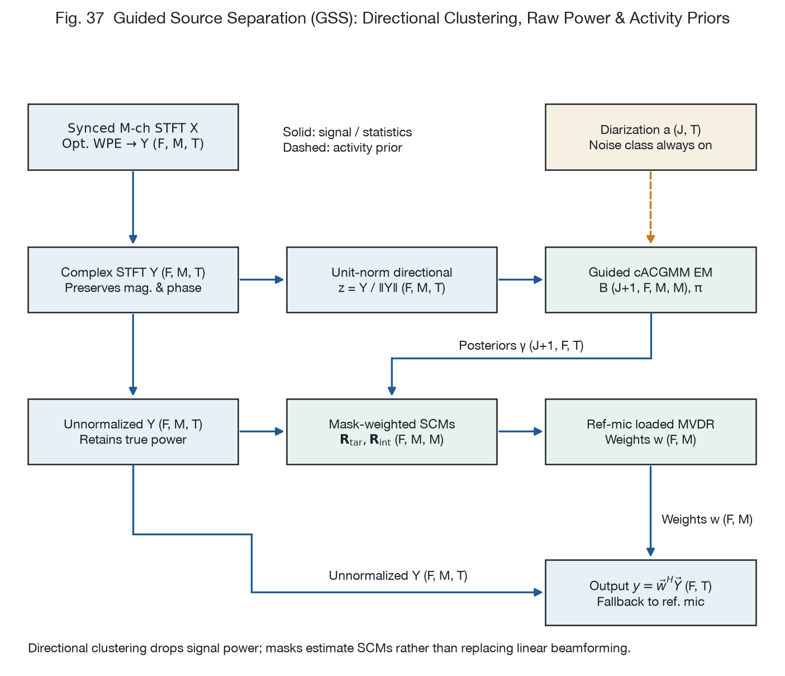
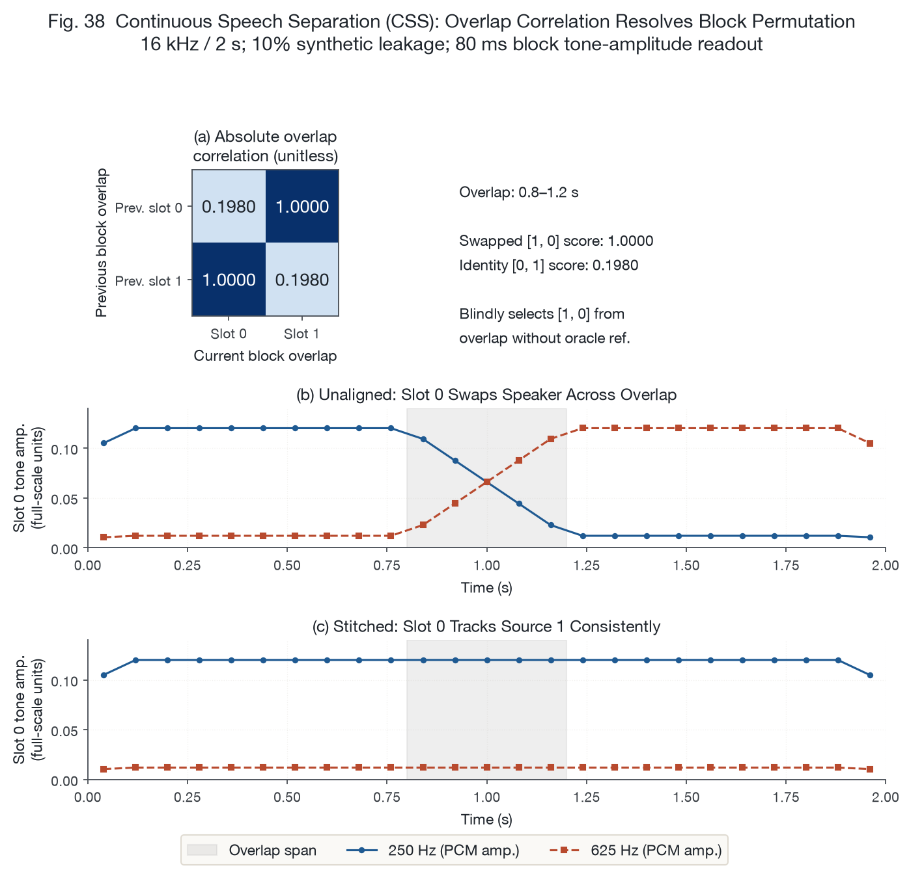
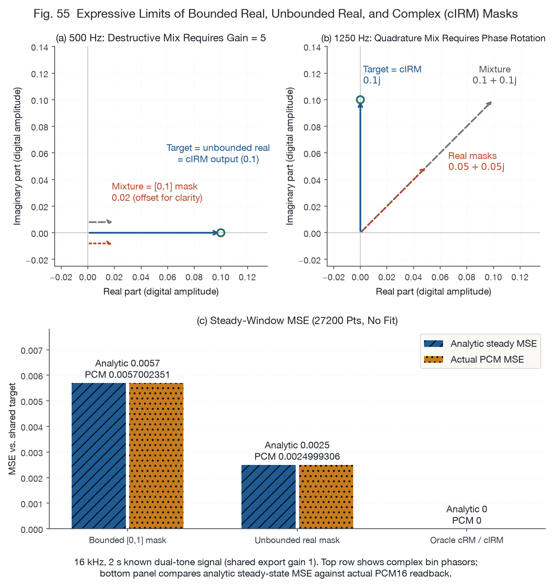
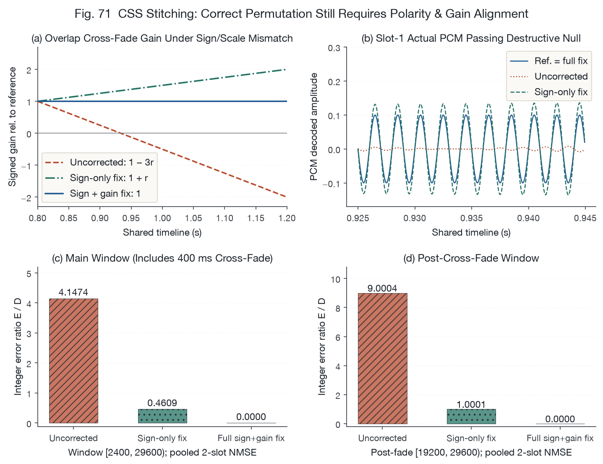

On this page
This chapter is Chapter 8 of the main text; the book comprises 16 chapters across the core chapters and extended topics (Chapters 0–15, where Chapter 0 covers mathematical foundations and Chapters 12–15 are four extended special topics), plus Appendices A and B. This chapter can be read independently; see the navigation links below for the preceding and following chapters.
Overview: 🏠 Course Overview | Previous: Chapter 7 · Dereverberation (WPE) | Next: Chapter 9 · Sound Source Tracking
8. Speech Separation
Chapter 7 examined the late reverberation tails generated by one or more acoustic sources propagating inside a room; this chapter turns to the classic "cocktail party problem"—when multiple speakers talk simultaneously in the same space, how do we separate clean speech streams for each speaker from the mixed recording? We develop the derivations along three major paradigms: training-free classical blind source separation (BSS), activity-driven guided source separation (GSS), and deep neural network separation, and in §8.2 clarify the cascading rules governing how they fit into a complete multi-microphone front-end pipeline.
8.1 Multi-Speaker Speech Separation: The Cocktail Party Problem
Whereas dereverberation removes the temporal reflection tails of the same source, speech separation suppresses overlapping interference from different sources occurring at the same time instant and within the same frequency band; in real far-field meetings, both types of degradation coexist and must be suppressed jointly. This section first establishes the multichannel convolutive mixture model and its narrowband approximation, clarifies the connection between time-frequency masking and spatial covariance estimation (linking back to Chapter 5, §5.9), and then derives the permutation-invariant training criterion for supervised separation.
Core Terminology and Reading Roadmap
| Abbreviation | Full Name | Role in This Chapter |
|---|---|---|
| STFT | Short-Time Fourier Transform | Transforms time-domain mixture waveforms into complex time-frequency observations |
| BSS | Blind Source Separation | Estimates unmixing filters and sources directly from mixed observations without pre-trained supervised labels |
| SCM | Spatial Covariance Matrix | Characterizes second-order magnitude and phase correlations across multiple microphones |
| RTF | Relative Transfer Function | Describes the complex acoustic transfer ratio of a target source at each microphone relative to a reference microphone |
| NMF | Nonnegative Matrix Factorization | Models the low-rank structure of a source power spectrogram as the product of a small set of nonnegative spectral bases and temporal activations |
| PIT | Permutation Invariant Training | Dynamically matches the optimal permutation between output slots and reference speakers inside a supervised loss |
| CSS | Continuous Speech Separation | Resolves cross-chunk output slot alignment and seamless stitching after sliding-window chunking of long meeting recordings |
Before diving into equations, it is essential to distinguish three physical objects that are easily confused:
- Dry source signal: $s_n[t]$ is the speech waveform radiated at the $n$-th speaker's mouth before undergoing room propagation;
- Source image: a domain-specific term in acoustic array processing—here "image" refers to an acoustic mapping component and never a visual picture. Specifically, it denotes the waveform component formed at a designated reference microphone $r$ when the $n$-th source speaks alone and propagates through its room impulse response to that channel (thus the source images of the same utterance at different array elements carry distinct propagation delays, amplitude attenuations, and reverberant coloration);
- Raw unmixed output: although the separated channels directly emitted by a blind separator strip away competing speakers, they generally carry arbitrary per-frequency complex scaling factors and channel permutation mismatches.
Consequently, raw unmixed outputs must undergo projection back (derived later in this chapter) to restore the physical scale of the source images at the reference microphone.
Convolutive Mixtures and Number of Sources
At discrete sample index $t$, the mixed waveform received by the $m$-th microphone ($m=1,\dots,M$) equals the superposition of the $N$ speakers' dry signals each convolved with its respective room impulse response, plus sensor self-noise and ambient noise $v_m[t]$:
$$\begin{aligned} x_m[t]&=\sum_{n=1}^{N}\sum_{\tau=0}^{L_h-1} h_{mn}[\tau]s_n[t-\tau]+v_m[t]. \end{aligned}\tag{8-1}$$
Here $\tau$ is the discrete lag sample index, $L_h$ is the tap length of the finite impulse response (FIR) model, and $h_{mn}[\tau]$ denotes the acoustic impulse response from the $n$-th source to the $m$-th microphone. Depending on how the number of simultaneously active sources $N$ compares with the number of available microphone channels $M$, the separation problem exhibits fundamentally different algebraic structures:
- Determined mixture ($N=M$): the number of sources equals the number of microphones (note that $N=M$ only makes the mixing matrix square—if two speakers stand in the exact same direction, the matrix remains rank-deficient and non-invertible). This is the standard operating regime of square-matrix auxiliary-function-based independent vector analysis (AuxIVA) and independent low-rank matrix analysis (ILRMA);
- Overdetermined mixture ($N\lt M$): microphones outnumber target sources, providing extra spatial degrees of freedom to suppress diffuse background noise (as in OverIVA or mask-based MVDR beamforming discussed below); however, one must never blindly truncate channels by total energy via principal component analysis (PCA), lest a weaker target speaker be discarded into the null space under strong background noise;
- Underdetermined mixture ($N>M$): speakers outnumber microphones (the extreme case being a single microphone $M=1$, where inter-channel spatial phase cues are completely absent). Here no linear square matrix inverse can perfectly unmix all sources, so separation must rely on full-rank spatial covariances paired with low-rank spectral structure in multichannel NMF (MNMF), sparse time-frequency masks, or speech priors learned by deep neural networks.
Narrowband Model and Spatial Statistics
Transforming the time-domain convolution in Eq. (8-1) into the STFT domain, provided the analysis window is sufficiently long relative to the dominant energy span of the room impulse response, the convolutive mixture approximately decouples at each frequency bin $f$ and time frame $t$ into an instantaneous linear mixture:
$$\begin{aligned} X_m(f,t)&\approx\sum_{n=1}^{N}A_{mn}(f)S_n(f,t)+V_m(f,t). \end{aligned}\tag{8-2}$$
Written in compact matrix–vector notation, $\vec X(f,t)=\mathbf A(f)\vec S(f,t)+\vec V(f,t)$, where $\vec X\in\mathbb{C}^{M\times 1}$ is the observation column vector, the $(m,n)$-th entry $A_{mn}(f)$ of the mixing matrix $\mathbf A\in\mathbb{C}^{M\times N}$ is the complex frequency response of $h_{mn}[\tau]$ at frequency bin $f$, $\vec S\in\mathbb{C}^{N\times 1}$ is the source column vector, and $\vec V\in\mathbb{C}^{M\times 1}$ is the additive noise column vector.
When cross-referencing equations across chapters, keep in mind local frame-index conventions: once inside the STFT domain, this chapter uniformly uses $t$ to denote the discrete time-frame index (distinguished by context from the time-domain sample index in Eq. (8-1)), corresponding to $\ell$ in the Appendix A symbol table; whereas when importing beamforming equations from Chapter 5, the first argument of $\vec x(k,n)$ in Chapter 5 is the frequency bin $k$ and the second argument is the frame index $n$. Moreover, the accuracy of the narrowband multiplicative approximation in Eq. (8-2) is jointly governed by window length, hop size, and early-to-late reflection energy ratio; when long reverberation exceeds a single frame window, applying Chapter 7's MIMO-WPE first to strip cross-frame late tails restores the narrowband approximation accuracy required by Eq. (8-2).
Under an ideal anechoic free-field far-field plane-wave assumption with matched sensor gains, if a uniform linear array of inter-element spacing $d$ uses microphone $1$ as its phase reference, the column of the mixing matrix corresponding to incidence angle $\theta$ reduces to the pure-phase steering vector familiar from Chapters 3–5:
$$\begin{aligned} a_m(f,\theta)&=e^{\mathrm{j}(m-1)\phi},\\ \phi&=2\pi f d\sin\theta/c,\\ \vec a&=[a_1,\ldots,a_M]^\top. \end{aligned}\tag{8-3}$$
Let us review spatial phase and spatial aliasing boundaries with concrete numbers: take inter-element spacing $d=4\ \mathrm{cm}$, speed of sound $c=343\ \mathrm{m/s}$, and incidence angle $\theta=30^\circ$. Under Chapter 5's coordinate convention (microphone $1$ on the left end, positive angles toward the $+x$ side), the inter-element time-delay difference between adjacent microphones is $\tau_{21}=t_2-t_1=-d\sin\theta/c$ (approximately $-58.3\ \mu\mathrm{s}$). At $f=2\ \mathrm{kHz}$ (wavelength $\lambda\approx 17.15\ \mathrm{cm}$, satisfying $d\lt \lambda/2$), the inter-element phase difference magnitude and the $4$-microphone steering vector are:
$$\begin{aligned} 2\pi f|\tau_{21}|&\approx 0.733\ \mathrm{rad} \approx 42^\circ,\\ \vec a(2\ \mathrm{kHz},30^\circ)&\approx \bigl[1,\ e^{+\mathrm{j}42^\circ},\ e^{+\mathrm{j}84^\circ},\ e^{+\mathrm{j}126^\circ}\bigr]^\top, \end{aligned}$$
and doubling the frequency to $4\ \mathrm{kHz}$ doubles the adjacent phase difference to roughly $84^\circ$.
When the frequency rises further to $8\ \mathrm{kHz}$ (wavelength $\approx 4.29\ \mathrm{cm}$, so $d>\lambda/2$), subtracting the dimensionless wavelength-to-spacing ratio $\lambda/d=343/(8000\times 0.04)=1.071875$ from $\sin 30^\circ=0.5$ yields $-0.571875$, corresponding to a distinct physical direction $\theta'\approx -34.88^\circ$—substituting back into Eq. (8-3) shows that adjacent microphone phases differ by exactly $2\pi$, so sources at two completely different directions share the exact same steering vector at $8\ \mathrm{kHz}$ (conversely, if the target is at broadside $\theta=0^\circ$, both $0\pm 1.071875$ fall outside the real-angle interval $[-1,1]$, so no real grating lobe appears yet at that frequency). Furthermore, in real rooms each column of $\mathbf A(f)$ also incorporates superposed early reflections and microphone frequency-response mismatches, precluding blind reliance on the free-field formula (8-3)—precisely where blind separation and mask-based covariance estimation shine.
Minimum variance distortionless response (MVDR) beamforming, generalized eigenvalue (GEV) beamforming, and MNMF all revolve around the spatial covariance matrix (SCM) of multichannel observations. Assuming the mixing matrix $\mathbf A$ is constant over the statistical estimation window and sources are uncorrelated with additive noise ($\mathbb{E}[\vec S\vec V^H]=\mathbf 0$), omitting frequency and frame subscripts yields:
$$\begin{aligned} \mathbf R_{xx}&=\mathbb{E}[\vec X\vec X^H],\\ \mathbf R_{xx}&\approx\mathbf A\mathbf R_{ss}\mathbf A^H+\mathbf R_{vv}. \end{aligned}\tag{8-4}$$
Note that $\mathbf R_{xx}$ in Eq. (8-4) is an uncentered second-order moment (equal to the strict statistical covariance only under zero-mean conditions); without source–noise orthogonality, expanding the outer product adds the cross-terms $\mathbf A\mathbb{E}[\vec S\vec V^H]+\mathbb{E}[\vec V\vec S^H]\mathbf A^H$, while inter-source correlations appear in the off-diagonal entries of $\mathbf R_{ss}=\mathbb{E}[\vec S\vec S^H]$.
In §8.4 below, the complex angular central Gaussian mixture model (cACGMM) takes an elegant geometric route: it first divides each nonzero observation vector by its Euclidean norm to project onto the complex unit sphere $\vec z=\vec X/\|\vec X\|_2$, clustering purely by spatial direction after stripping away speech power fluctuations to estimate soft time-frequency masks; GSS then takes these real-valued soft masks back to the unnormalized raw multichannel outer products $\vec X\vec X^H$ to accumulate weighted target and interference SCMs (see Chapter 5, §5.9, Eq. (5-26) for mask-weighted SCMs).
When beginners encounter a "time-frequency mask," they must first check what object the mask actually multiplies:
- Direct single-channel spectral masking: multiplying the reference microphone complex spectrogram point-wise as $M(f,t)X_r(f,t)$ followed directly by inverse STFT; here a real-valued mask can only scale magnitudes, whereas a complex mask is required to modify phases simultaneously;
- Multichannel covariance statistical weighting: using a nonnegative real mask $\gamma(f,t)\ge 0$ as a snapshot reliability weight to accumulate multichannel outer products $\sum_t\gamma(f,t)\vec X(f,t)\vec X^H(f,t)$; rather than directly altering waveform phases, it shapes the target and interference SCMs from which linear beamforming weights $\vec w(f)$ are solved;
- Single-channel post-masking after beamforming: multiplying the single-channel complex spectrum at the output of a multichannel linear beamformer by an additional spectral gain to suppress residual leakage.
Thus beamforming and speech separation are by no means mutually exclusive paradigms—as long as a mask is estimated for each speaker and a corresponding beamformer weight vector $\vec w_n(f)$ is solved, a bank of linear beamformers can separate multiple speakers in parallel (which is exactly how GSS operates). The table below provides a bird's-eye comparison of the three core modeling families covered in this chapter:
| Separation Paradigm | Representative Methods | Core Modeling Mechanism | Key Assumptions and Operating Boundaries |
|---|---|---|---|
| Classical Blind Source Separation (BSS) | ICA, AuxIVA, ILRMA, MNMF | Exploits statistical independence across sources together with cross-frequency envelope coupling or low-rank spectral structure to iteratively solve unmixing matrices or spatial models | Square AuxIVA/ILRMA targets determined mixtures ($N=M$); training-free, but requires sufficient frames for statistics and valid narrowband approximation |
| Activity-Guided Spatial Clustering | cACGMM → GSS → MVDR | Uses speaker activity timestamps to lock cross-frequency permutations, performs directional EM clustering on the complex unit sphere, and drives beamforming | Training-free model weights, robust to heavily reverberant real meetings, but relies on external speaker diarization timestamps and multi-frame context |
| Supervised Deep Learning Separation | TF-mask networks, Deep Clustering, Conv-TasNet, TF-GridNet | Trains neural networks end-to-end on large-scale synthetic or reference-paired mixtures to directly predict per-source masks, complex spectra, or waveforms | Supports single-channel and underdetermined ($N>M$) separation without long iterative statistics at inference, but bounded by training-domain coverage, compute budget, and streaming state management |
Among the methods listed above, deep clustering maps each time-frequency bin into a high-dimensional embedding vector and partitions speaker assignments via clustering, whereas Conv-TasNet replaces fixed STFTs with learnable short 1-D convolutional encoders to perform mask separation directly in a latent time-domain space; §8.6 traces the architectural evolution from early time-domain convolutional networks to dual-path models and time-frequency grid networks in detail.
PIT and Output Slots
When training a multi-speaker separation network with supervised deep learning, the very first obstacle is the label permutation problem: an input mixture $x=s_1+s_2$ carries no intrinsic tag declaring who is "Speaker 1" and who is "Speaker 2." Emitting Speaker B from output head 1 and Speaker A from output head 2 is a completely valid separation; if a loss rigidly evaluates fixed indices $|\hat s_1-s_1|+|\hat s_2-s_2|$, a correct separation is penalized with a huge error, forcing network gradients to blur both voices into an unintelligible average.
Permutation Invariant Training (PIT) untangles this deadlock through straightforward combinatorial matching: during forward loss evaluation, it enumerates all $N!$ bijective permutations $\pi\in\mathcal S_N$ between the $N$ output slots and the $N$ clean reference signals, selecting the permutation with the minimum total pairwise error to update network parameters:
$$\begin{aligned} \mathcal L_{\mathrm{PIT}}&=\min_{\pi\in\mathcal S_N} \sum_{n=1}^{N}\mathcal L\bigl(\hat s_n,s_{\pi(n)}\bigr), \end{aligned}\tag{8-5}$$
where $\mathcal S_N$ denotes the symmetric group of all permutations of $\{1,\dots,N\}$.
Hand-worked $2\times 2$ PIT example: Suppose a two-speaker separation network outputs two estimates $\hat s_1,\hat s_2$ against two clean references $s_1,s_2$. Evaluating all four pairwise distortion costs yields a $2\times 2$ matrix:
$$ \mathbf L= \begin{bmatrix} \mathcal L(\hat s_1,s_1)&\mathcal L(\hat s_1,s_2)\\ \mathcal L(\hat s_2,s_1)&\mathcal L(\hat s_2,s_2) \end{bmatrix} = \begin{bmatrix}0.4&3.1\\2.8&0.6\end{bmatrix}. $$
Enumerating the $2!=2$ permutations: the identity permutation $\pi=(1,2)$ (sum along the main diagonal) gives a total loss of $0.4+0.6=1.0$; the swapped permutation $\pi=(2,1)$ (sum along the anti-diagonal) gives $3.1+2.8=5.9$. Since $1.0\lt 5.9$, the identity permutation wins, and the training loss for this step is $\mathcal L_{\mathrm{PIT}}=1.0$.
Backpropagation through Eq. (8-5) follows the active permutation branch. When the minimizing permutation $\pi^\star$ is unique and pairwise losses are differentiable, the local gradient is exactly that branch's gradient, routed through the selected pairs $(\hat s_n,s_{\pi^\star(n)})$. At an exact tie the objective may be nondifferentiable, so an implementation must specify branch selection or gradient combination. This automatic-differentiation convention is not a convex-subgradient guarantee: a pointwise minimum of losses is generally nonconvex, as $\min(x,-x)=-|x|$ shows at zero.
Once you grasp this permutation-branch switch, it becomes immediately clear why early "frame-level independent PIT" performed poorly in listening tests and had to be upgraded to utterance-level PIT (uPIT):
- If each frame independently picks its own minimum-loss permutation, single-frame local error is minimized, yet on overlapping unvoiced consonants, breathing pauses, or transitional frames with comparable energy, the two permutation losses are nearly tied; the switch $\pi^\star$ then flips erratically between adjacent frames, causing a single output channel to jump abruptly from a male voice in one second to a female voice in the next;
- uPIT forces every frame across an entire utterance (several seconds long) to share a single common permutation $\pi^\star$, compelling the network internally to exploit long-range timbre, pitch, and spatial continuity to lock the same person's voice into the same output slot from start to finish. Even with uPIT, however, when sliding windows chop up a long meeting recording and encounter single-speaker chunks (where the secondary slot should output silence) or cross-window stitching boundaries, slot flipping still occurs across silent intervals and adjacent chunks—precisely why continuous speech separation (CSS) in §8.6 requires dedicated cross-chunk alignment and single-speaker bypass protection.
From an algorithmic complexity standpoint, only when Eq. (8-5) decomposes strictly into an additive sum of $N\times N$ pairwise costs can one replace $O(N!)$ exhaustive enumeration with the $O(N^3)$ Hungarian linear assignment algorithm for larger source counts (see Yu et al., ICASSP 2017 for PIT and Kolbæk et al., IEEE/ACM TASLP, 2017 for uPIT; for pedagogical transparency so readers can inspect every permutation directly, our teaching function pit_permutation() enumerates all permutations explicitly and caps the source count at $N\le 8$).
8.2 Ordering of Processing Modules
The canonical full-duplex multi-microphone front-end backbone follows Capture → Linear AEC → MIMO-WPE → Spatial Beamforming / Multichannel Separation → Single-Channel Post-Processing, whose physical and algebraic rationale—placing linear AEC first, MIMO-WPE ahead of spatial processing, and nonlinear single-channel networks at the tail—was derived systematically in Chapter 7, §7.6 and Chapter 10, §10.1, Fig. 22 and is not repeated here.
For the speech-separation modules covered in this chapter, two core ordering rules govern integration: first, run MIMO-WPE first to suppress long reverberation tails, helping the narrowband model Eq. (8-2) and target spatial covariance recover a clean rank-one directional structure (since per-channel WPE filtering can introduce slight inter-channel transfer offsets, downstream beamformers should extract adaptive RTFs from the target SCM rather than rigidly applying free-field geometric steering vectors); second, keep control branches and the main audio trunk strictly separated—speaker diarization supplies binary activity gates to GSS, GSS emits soft masks that return to the unnormalized multichannel complex spectra to accumulate SCMs and solve MVDR/GEV, while end-to-end multichannel neural separators or CSS run as an alternative multi-stream main trunk downstream of WPE (when benchmarking "AEC before NR/separation vs. after," watch out for ground-truth leakage traps that build ideal double-talk decisions from clean oracle signals; see the Upstream Interface Research Notes).
To facilitate side-by-side reading with Fig. 22 in Chapter 10, §10.1, the table below maps each module covered in this chapter to its exact location and interface contract in the full-device signal flow:
| Core Module in Chapter 8 | Signal-Flow Position in Fig. 22 | I/O Contract and Anti-Bug Pitfalls |
|---|---|---|
| Speaker Diarization + GSS Clustering | "Speaker Diarization → GSS/cACGMM Mask" control branch | Diarization supplies binary temporal gates solely to constrain cross-frequency permutations; it outputs neither covariances nor audio directly |
| Masked SCM + Analytic Beamforming | "GSS Mask + Post-WPE Raw Multi-Mic STFT → SCM → MVDR/GEV" main trunk | Masks serve strictly as nonnegative scalar weights; SCM accumulation must use unnormalized $\vec Y\vec Y^H$, never unit-sphere vectors $\vec z\vec z^H$ |
| End-to-End Neural Separation / CSS | Alternative multi-stream audio main trunk after WPE (optionally followed by single-channel post-processing) | Must specify maximum output slot count, sliding-window lookahead latency, cross-chunk permutation stitching, and single-speaker bypass logic |
| Single-Channel DNN Post-Filtering | Single-stream enhancement stage downstream of beamforming or separation | Placed strictly after spatial filtering so per-channel nonlinear magnitude/phase distortion never corrupts spatial nulls |
| Noise Suppression (NS) / Automatic Gain Control (AGC) / Keyword Spotting (KWS) | Tail-end single-channel post-processing and independent low-power wake-word bypass; VAD resides on the control plane | Enabled selectively per product requirements; not re-derived in this chapter |
With system-level cascading rules clear, we now enter §8.3 to derive step by step how training-free blind source separation separates overlapping voices solely through statistical independence, without a single pre-recorded label.
8.3 Classical Blind Source Separation: AuxIVA, ILRMA, MNMF, and TRINICON
The word "blind" in blind source separation means that neither clean source ground truth nor the mixing matrix is provided to the estimator—yet it certainly does not mean that feeding an arbitrary mixture guarantees unique recovery of the true sources; an algorithm can lock onto unmixing directions only under well-defined statistical identifiability conditions. Below we first establish the identifiability boundaries of independent component analysis (ICA), then systematically derive four generations of classical algorithms spanning source envelope coupling, low-rank spectral modeling, and spatial covariance diagonalization.
Identifiability Conditions and Unmixing Conventions of ICA
Neglecting additive sensor noise and assuming an equal number of sources and microphones ($N=M$) with an invertible per-frequency square mixing matrix $\mathbf A_f\in\mathbb{C}^{M\times M}$, our goal is to find a per-frequency square unmixing matrix $\mathbf W_f\in\mathbb{C}^{M\times M}$. Following the unified convention of this chapter, we store the conjugate transpose $\vec w_{nf}^H$ of the $n$-th unmixing filter as the $n$-th row of $\mathbf W_f$:
$$\begin{aligned} \vec y_f(t)&=\mathbf W_f\vec x_f(t),\\ y_{nf}(t)&=\vec w_{nf}^H\vec x_f(t). \end{aligned}\tag{8-6}$$
The foundational principle of ICA is to adjust $\mathbf W_f$ so that the output channels $y_{1f},\dots,y_{Mf}$ become statistically mutually independent. Why can't we achieve blind separation merely by enforcing "mutually uncorrelated outputs (second-order covariance diagonalization)"? Because zero correlation constrains only second-order moments, which is far weaker than statistical independence:
- Rotational unidentifiability of stationary identically distributed Gaussian sources: Suppose two true sources $s_1,s_2$ are independent standard normal random variables, whose joint probability density is proportional to $\exp[-(s_1^2+s_2^2)/2]$, yielding perfectly circular iso-density contours in the 2-D plane. Multiplying $\vec s$ by an orthogonal rotation matrix of any angle (say $45^\circ$) leaves the sum of squares $s_1^2+s_2^2$, the identity covariance matrix, and the joint Gaussian density completely unchanged—the rotated coordinates remain statistically independent, making it impossible to recover the original axes from stationary marginal/joint distributions alone.
- Pre-whitening eliminates only half the degrees of freedom: Applying a whitening transform to a zero-mean observation vector with positive-definite covariance turns its covariance into the identity matrix $\mathbf I_M$; however, left-multiplying a whitened vector by any unitary matrix preserves $\mathbf I_M$ as its covariance. Exercise E08-17 demonstrates concretely with four discrete non-Gaussian sample points that after whitening plus a $45^\circ$ rotation, the two components have strictly zero correlation yet are manifestly statistically dependent (note also that if the observation covariance itself is rank-deficient, adding diagonal loading stabilizes matrix inversion but cannot conjure missing independent source channels out of thin air; for full proofs of whitening and unitary rotational freedom, see Hyvärinen et al., Independent Component Analysis, §§7.4–7.5, pp. 158–163).
Conversely, "stationary i.i.d. Gaussian sources are unidentifiable" does not preclude separating speech or envelope-modulated Gaussian carriers—as soon as sources exhibit non-Gaussian heavy-tailed distributions (such as super-Gaussian speech sparsity), distinct time-varying variance envelopes (as in ILRMA and our modulated Gaussian carrier experiments below), or distinct cross-lag autocorrelation structures, blind separation regains the statistical leverage needed to lock down the remaining unitary rotation.
Before turning to joint cross-frequency models, it is worth reviewing the classical permutation-alignment bridge for frequency-domain ICA (FD-ICA): when $\mathbf W_f$ is estimated independently at each frequency bin, output slot orderings across frequencies are completely uncoordinated, so direct inverse STFT scrambles frequency bands from Speaker A and Speaker B together.
The landmark method of Sawada et al. (IEEE TSAP, 2004) breaks this impasse with a two-stage "spatial direction + cross-frequency envelope correlation" alignment: first, inter-channel phase ratios of the columns of the estimated mixing matrix $\hat{\mathbf A}_f=\mathbf W_f^{-1}$ yield direction-of-arrival (DOA) estimates that robustly align slots across most mid- and high-frequency bins; second, for low-frequency bins lacking spatial phase resolution or high-frequency bins affected by spatial aliasing, temporal correlation of the same speaker's instantaneous amplitude envelopes $|y_{nf}(t)|$ across bands resolves the remaining permutations. This post-hoc repair points toward a deeper insight: rather than solving every frequency bin separately and stitching permutations afterward, embed cross-frequency envelope co-modulation directly inside a single joint objective—which is precisely the starting point of AuxIVA below.
Objective and Iterative Projection of AuxIVA
AuxIVA (Auxiliary-function-based Independent Vector Analysis, Ono 2011) generalizes independent components from isolated frequency bins to cross-frequency source vectors: it assumes statistical independence across different speakers while jointly modeling all frequency bins belonging to the same speaker, suppressing frequency-bin permutations directly inside optimization via broadband envelope co-modulation, and deriving closed-form updates free of learning-rate tuning via an auxiliary function so the objective decreases monotonically under ideal model assumptions.
Notably, cross-frequency envelope dependence does not require linear correlation between the complex spectral bins themselves. For instance, take two frequency bins $Y_1=Ae^{\mathrm{j}\Phi_1}$ and $Y_2=Ae^{\mathrm{j}\Phi_2}$ whose phases are independently uniform and independent of the shared random amplitude $A$: their second-order complex spectral cross-correlation is $\mathbb{E}[Y_1Y_2^*]=0$, yet their instantaneous powers both equal $A^2$ (if $A$ takes values $1$ and $2$ with equal probability, both bin powers jump synchronously between $1$ and $4$ with power covariance $9/4$), a shared co-fluctuation completely invisible to linear cross-covariance.
In practical engineering, standard batch AuxIVA iterates over an entire segment (streaming deployment requires recursive covariance updates and the rank-1 ISS updates introduced below), and narrowband model mismatch under heavy reverberation, highly synchronous multi-speaker envelopes, or overly short frame counts can degrade separation—limitations stemming from observation-model violation or finite sample size rather than any loss of physical independence between the dry voices themselves. AuxIVA serves widely as a canonical training-free BSS baseline.
Once the current iteration's weighted covariance matrix $\mathbf V$ is fixed, the closed-form update for a single unmixing row vector is worked out by hand in Exercise E08-07 (which takes a given $\mathbf V$ and computes the linear solve plus weighted quadratic-form normalization of the IP substep); Eq. (8-8) below completes the picture by showing how AuxIVA constructs $\mathbf V$ recursively from cross-frequency output norms.
Let $T$ be the number of frames. At frame $t$ ($t=1,\dots,T$), stack the $n$-th source's unmixed outputs across all $F$ frequency bins into an $F$-dimensional broadband source spectrum vector $\bar{\vec y}_n(t)=[y_{n1}(t),\dots,y_{nF}(t)]^\top\in\mathbb{C}^{F\times 1}$ (marked with an overbar to distinguish it from the single-frequency $M$-dimensional narrowband vector $\vec y_f(t)=\mathbf W_f\vec x_f(t)\in\mathbb{C}^{M\times 1}$), and adopt a spherically symmetric complex Laplace super-Gaussian working model $p(\bar{\vec y}_n)\propto\exp(-2\|\bar{\vec y}_n\|_2)$—notice that the exponent is not an independent sum of squared magnitudes across frequencies, but the square root of the broadband sum of squares $r_n(t)=\|\bar{\vec y}_n(t)\|_2$, and it is precisely this non-separable square root that binds all frequency bins of the same speaker together.
Next, apply the per-frequency change-of-variables $\vec y_f(t)=\mathbf W_f\vec x_f(t)$ to express the observation density in terms of the source density: multiplying by a complex scalar $w=a+\mathrm{j}b$ on the 2-D real–imaginary plane corresponds to the $2\times 2$ real matrix $\begin{bmatrix}a&-b\\b&a\end{bmatrix}$, whose determinant is $a^2+b^2=|w|^2$; generalizing to $M$-dimensional complex space $\mathbb{C}^M\cong\mathbb{R}^{2M}$, the $2M\times 2M$ real Jacobian determinant of the complex linear map $\mathbf W_f$ equals the squared modulus $|\det\mathbf W_f|^2$. Taking the negative natural logarithm normalized by frame count $T$ (and using $\ln(|\det\mathbf W_f|^2)=2\ln|\det\mathbf W_f|$) yields the AuxIVA objective function:
$$\begin{aligned} r_n(t)&=\sqrt{\sum_f|y_{nf}(t)|^2},\\ J_{\mathrm{IVA}}&=\frac{2}{T}\sum_{n,t}r_n(t) -2\sum_f\ln|\det \mathbf W_f|. \end{aligned}\tag{8-7}$$
Observe the interplay between the two terms in Eq. (8-7): the first term penalizes the sum of broadband output envelope norms, encouraging frequency bins to jointly extract sparse independent speakers; without the second term $-2\sum_f\ln|\det\mathbf W_f|$ pushing back, an optimizer could trivially drive the first term to $0$ by shrinking $\mathbf W_f$ to the zero matrix. The negative log-determinant erects a volume barrier that shoots toward $+\infty$ whenever $\mathbf W_f$ approaches singularity or zero scale.
Early independent vector analysis (Kim et al., 2006) iterated directly along the Lie-group manifold via natural gradient descent: letting the $n$-th entry of the multivariate score vector $\vec\varphi_f(\vec y_t)\in\mathbb{C}^{M\times 1}$ be $y_{nf}(t)/r_n(t)$, right-multiplying the Euclidean gradient by $\mathbf W_f^H\mathbf W_f$ updates with step size $\mu>0$:
$$\mathbf W_f\leftarrow\mathbf W_f+\mu\left(\mathbf I_M-\frac{1}{T}\sum_{t=1}^T\vec\varphi_f(\vec y_t)\vec y_f(t)^H\right)\mathbf W_f.$$
Although right-multiplication by $\mathbf W_f^H\mathbf W_f$ endows the update with equivariance, the step size $\mu$ remains a treacherous double-edged sword: speech dynamic range spans orders of magnitude across frequency bands, so a slightly excessive $\mu$ triggers overshoot oscillations or divergence in high frequencies or low-energy frames, whereas a conservative $\mu$ crawls through hundreds of iterations. By contrast, AuxIVA constructs a tight quadratic majorizing auxiliary function for the nonsmooth broadband $\ell_2$ norm, eliminating the learning-rate hyperparameter $\mu$ altogether to achieve step-size-free monotonically non-increasing convergence.
Let us now unpack the centerpiece derivation of AuxIVA—often glossed over in papers—showing how to go from the nonconvex square-root-and-determinant objective Eq. (8-7) to the clean linear-system Iterative Projection (IP) update Eq. (8-8) without a single gradient step size, in three transparent steps using Majorization-Minimization (MM) and Wirtinger complex calculus (for mathematical preliminaries, see Chapter 0, §0.5):
-
Tangent majorization removes the square root, yielding a weighted quadratic form: Because $\sqrt{u}$ is strictly concave on $u>0$, its graph lies everywhere below its tangent line at any tangency point $u_0>0$; that is, for all $u\ge 0$ and $u_0>0$, $2\sqrt{u}\le\frac{u}{\sqrt{u_0}}+\sqrt{u_0}$ (with equality if and only if $u=u_0$). Setting $\sqrt{u_0}=r_n(t)>0$ at the previous iterate's broadband norm and substituting $u=\sum_f|\vec w_{nf}^H\vec x_f(t)|^2$ into the upper bound averaged over frames, the variable part of the auxiliary objective with respect to row $\vec w_{nf}^H$ reduces to a clean quadratic form plus negative log-determinant (decoupling all frequency bins $f$ within the current MM step):
$$\begin{aligned} Q_{nf}(\vec w_{nf})&=\vec w_{nf}^H\mathbf V_{nf}\vec w_{nf} -2\ln|\det\mathbf W_f|,\\ \mathbf V_{nf}&=\frac{1}{T}\sum_{t=1}^T \frac{1}{r_n(t)}\vec x_f(t)\vec x_f^H(t), \end{aligned}$$
where $\mathbf V_{nf}$ is an $M\times M$ Hermitian positive-definite observation covariance weighted by the reciprocal broadband envelope $1/r_n(t)$.
-
Laplace cofactor expansion along row $n$ unpacks the determinant: Why doesn't differentiating $\ln|\det\mathbf W_f|$ entangle the entire matrix? Because we perform row-by-row sequential updates—while updating the $n$-th row $\vec w_{nf}^H$, all remaining $M-1$ rows of $\mathbf W_f$ are held strictly fixed. Because Eq. (8-6) stores row $n$ of $\mathbf W_f$ as $\vec w_{nf}^H$ (i.e., $(\mathbf W_f)_{nm}=(\vec w_{nf})_m^*$), Laplace expansion along row $n$ gives:
$$\begin{aligned} \det\mathbf W_f&=\sum_{m=1}^M(\mathbf W_f)_{nm}C_{nm} =\vec w_{nf}^H\vec c_n, \end{aligned}$$
where $\vec c_n=[C_{n1},\dots,C_{nM}]^\top$ is the column vector of unconjugated cofactors along row $n$ (precisely the $n$-th column of the classical adjugate matrix $\operatorname{adj}(\mathbf W_f)$), which depends solely on the other $M-1$ rows and is completely independent of $\vec w_{nf}$. Moreover, the fundamental adjugate identity $\mathbf W_f\operatorname{adj}(\mathbf W_f)=(\det\mathbf W_f)\mathbf I_M$ immediately certifies alien-row orthogonality: the inner product of any other row $m'\ne n$ with $\vec c_n$ vanishes identically, $\vec w_{m'f}^H\vec c_n=0\ (\forall m'\ne n)$ (never place a conjugate star on $C_{nm}$, or alien-row orthogonality fails for complex matrices).
-
Wirtinger stationarity on log-squared-modulus yields a standard linear system: Writing $-2\ln|\det\mathbf W_f|=-\ln(|\vec w_{nf}^H\vec c_n|^2)=-\ln\bigl((\vec w_{nf}^H\vec c_n)(\vec c_n^H\vec w_{nf})\bigr)$ (differentiating the logarithm of a strictly positive squared modulus directly avoids complex-logarithm branch-cut subtleties), apply the chain rule for the Wirtinger derivative with respect to $\vec w_{nf}^*$ and set it to zero (where $(\vec c_n^H\vec w_{nf})$ cancels top and bottom automatically):
$$\begin{aligned} \mathbf V_{nf}\vec w_{nf} -\frac{\vec c_n}{\vec w_{nf}^H\vec c_n}&=\vec 0,\\ \mathbf V_{nf}\vec w_{nf} &=\frac{\vec c_n}{\vec w_{nf}^H\vec c_n}. \end{aligned}$$
Left-multiplying both sides by $\vec w_{nf}^H$ cancels $\vec w_{nf}^H\vec c_n=\det\mathbf W_f$ in numerator and denominator on the right to $1$, immediately giving the quadratic scale normalization condition $\vec w_{nf}^H\mathbf V_{nf}\vec w_{nf}=1$. Next, fix the direction: denoting the matrix just prior to updating row $n$ as $\mathbf W_f^{\mathrm{old}}$, since every row $m'\ne n$ annihilates $\vec c_n$ whereas row $n$ multiplying $\vec c_n$ gives $\det\mathbf W_f^{\mathrm{old}}$, choosing an unnormalized direction vector $\vec u$ proportional to $\mathbf V_{nf}^{-1}\vec c_n$ (divided by $\det\mathbf W_f^{\mathrm{old}}$) and left-multiplying by $\mathbf W_f^{\mathrm{old}}\mathbf V_{nf}$ leaves $1$ in the $n$-th entry and $0$ everywhere else—the standard basis vector $\vec e_n$ (note that $\vec w_{nf}$ is uniquely determined up to an arbitrary unit-modulus phase factor $e^{\mathrm{j}\theta}$, and the phase of complex $\det\mathbf W_f^{\mathrm{old}}$ cancels via $|\det|/\det=\det^*/|\det|$ after magnitude normalization).
All cumbersome cofactor evaluations vanish completely, distilling into the four-step Iterative Projection (IP) update in Eq. (8-8) (with frame index $t=1,\dots,T$):
$$\begin{aligned} r_n(t)&=\sqrt{\sum_f|y_{nf}(t)|^2},\\ \mathbf V_{nf}&=\frac{1}{T}\sum_{t=1}^{T} \frac{1}{r_n(t)}\vec x_f(t)\vec x_f^H(t),\\ \vec u&=(\mathbf W_f\mathbf V_{nf})^{-1}\vec e_n,\\ \vec w_{nf}&=\frac{\vec u}{\sqrt{\vec u^H \mathbf V_{nf}\vec u}}. \end{aligned}\tag{8-8}$$
Two fundamental implementation rules govern Eq. (8-8): first, solve the linear system $(\mathbf W_f\mathbf V_{nf})\vec u=\vec e_n$ in step 3 rather than inverting matrices explicitly; second, right after computing column vector $\vec w_{nf}$ for source $n$, you must immediately take its conjugate transpose $\vec w_{nf}^H$ and write it back into row $n$ of $\mathbf W_f$ before using the updated $\mathbf W_f$ to solve for source $n+1$ (updating all rows simultaneously from a stale matrix breaks cross-row cofactor orthogonality; Exercise E08-10 contrasts sequential versus parallel updates by hand; for constant-factor conventions such as $2r_n(t)$ vs. $r_n(t)$ in pyroomacoustics and ssspy, see the BSS Source Research Notes and Ono, 2011).
To accelerate the convergence of single-row sequential updates (often termed IP1), Ono (IWAENC 2012) introduced Pairwise Iterative Projection (IP2) to update two rows jointly in the two-channel stereo case, and Nakashima, Scheibler, Wakabayashi & Ono (EUSIPCO 2020) generalized IP2 to arbitrary channel counts $M>2$. Holding the remaining $M-2$ rows fixed, IP2 reduces the simultaneous two-row update to a closed-form $2\times 2$ generalized eigenvalue (GEV) problem (for $M=2$ stereo, one pairwise GEV step updates both rows jointly per iteration), typically converging in substantially fewer sweeps than IP1 and forming, together with IP1 and ISS below, the three standard AuxIVA solver families.
Iterative Source Steering (ISS) and Streaming Online BSS
Inspect the compute budget of Eq. (8-8): in every iteration, IP accumulates an $M\times M$ matrix $\mathbf V_{nf}$ over $T$ frames ($O(TM^2)$) and solves an $M\times M$ linear system ($O(M^3)$) for every source, costing $O(TM^3+M^4)$ per frequency bin for a full $M$-source sweep—a heavy burden for larger microphone arrays or low-power streaming hardware. Iterative Source Steering (ISS; Scheibler & Ono, ICASSP 2020) introduces a matrix-inversion-free rank-one update: instead of recomputing one row of $\mathbf W_f$ at a time, at step $k$ ($k=1,\dots,M$) it applies a rank-one correction to all $M$ rows of $\mathbf W_f$ simultaneously along the current $k$-th row $\vec w_{kf}^H$ via a complex steering vector $\vec v_k=[v_{1k},\dots,v_{Mk}]^\top\in\mathbb{C}^{M\times 1}$:
$$\mathbf W_f^{\mathrm{new}}=\mathbf W_f-\vec v_k\vec w_{kf}^H =\bigl(\mathbf I_M-\vec v_k\vec e_k^\top\bigr)\mathbf W_f.$$
The beauty of this parameterization lies in complete decoupling between the determinant and quadratic terms: by the matrix determinant lemma, $\det(\mathbf I_M-\vec v_k\vec e_k^\top)=1-v_{kk}$, so the updated determinant depends solely on the single diagonal scalar $v_{kk}$, independent of all $M-1$ off-diagonal entries $v_{nk}\ (n\ne k)$. Expanding row $n$'s weighted quadratic form $(\vec w_{nf}-v_{nk}^*\vec w_{kf})^H\mathbf V_{nf}(\vec w_{nf}-v_{nk}^*\vec w_{kf})$ (note row $n$ becomes $\vec w_{nf}^H-v_{nk}\vec w_{kf}^H$, whose conjugate-transpose column vector is $\vec w_{nf}-v_{nk}^*\vec w_{kf}$): setting the Wirtinger derivative with respect to $v_{nk}^*$ to zero for $n\ne k$ yields weighted orthogonal elimination; minimizing $|1-v_{kk}|^2(\vec w_{kf}^H\mathbf V_{kf}\vec w_{kf})-2\ln|1-v_{kk}|$ for $n=k$ with a positive real scale gives normalization. Crucially, $\vec w_{nf}^H\mathbf V_{nf}\vec w_{kf}$ equals the weighted inner product of separated outputs $\frac{1}{T}\sum_t r_n(t)^{-1}y_{nf}(t)y_{kf}^*(t)$, completely bypassing explicit formation of the $M\times M$ observation matrices $\mathbf V_{nf}$. Each ISS update step therefore operates entirely in the output domain at $O(TM+M^2)$ cost ($O(M^2)$ for the matrix update):
$$\begin{aligned} v_{nk}&=\begin{cases} \dfrac{\sum_{t=1}^T r_n(t)^{-1}\,y_{nf}(t)\,y_{kf}^*(t)} {\sum_{t=1}^T r_n(t)^{-1}\,|y_{kf}(t)|^2},& n\ne k,\\ 1-\left(\dfrac{1}{T}\sum_{t=1}^T \dfrac{|y_{kf}(t)|^2}{r_k(t)}\right)^{-1/2},& n=k, \end{cases}\\ \mathbf W_f&\leftarrow\mathbf W_f-\vec v_k\vec w_{kf}^H,\qquad \vec y_f(t)\leftarrow\vec y_f(t)-\vec v_k\,y_{kf}(t). \end{aligned}\tag{8-9}$$
Check Eq. (8-9) one row at a time. For $n\ne k$, the updated output $y_{nf}^{\mathrm{new}}(t)=y_{nf}(t)-v_{nk}y_{kf}(t)$ satisfies weighted orthogonality $\sum_t r_n(t)^{-1}y_{nf}^{\mathrm{new}}(t)y_{kf}^*(t)=0$. For $n=k$, the updated row $(\vec w_{kf}^{\mathrm{new}})^H=(1-v_{kk})\vec w_{kf}^H$ satisfies $(\vec w_{kf}^{\mathrm{new}})^H\mathbf V_{kf}\vec w_{kf}^{\mathrm{new}}=1$. With positive denominators, each step leaves the fixed-weight auxiliary cost unchanged or decreases it, without a step size to tune.
When Eq. (8-9) accumulates weighted inner products directly from the current outputs, each steering step processes $M$ outputs over $T$ frames and updates an $M\times M$ demixing matrix. A sweep over all $M$ sources costs $O(TM^2+M^3)$ per frequency bin. The IP implementation that forms $M$ dense weighted covariances and solves each row using Eq. (8-8) costs $O(TM^3+M^4)$. Exercise E08-27 starts from given covariances. ISS saves the linear solves there, while dense covariance–vector products still make a full sweep $O(M^4)$. The locked pyroomacoustics implementation of auxiva uses IP. The AuxIVA implementation in ssspy also offers ISS.
Online AuxIVA-ISS updates its weighted covariances recursively with forgetting factor $\alpha\in[0,1)$ and uses those covariances to compute the ISS coefficients and update the demixing matrix. A rank-one correction itself takes $O(M^2)$ operations, with covariance–vector products still needed to form its coefficients. Nakashima & Ono, APSIPA ASC 2022 tested a simulated mixture of three speakers with one source changing position abruptly. When the moving source index is known, the steering update can use that index alone. In practice, a very small forgetting factor can make the estimates fluctuate, and weighted covariances can become degenerate during all-speaker silences.
Power Model and Alternating Updates of ILRMA
ILRMA (Independent Low-Rank Matrix Analysis). Whereas AuxIVA asks only that a speaker's energy across frequencies rise and fall together, signals with fine harmonic or resonant structure—such as tenor harmonics or sustained musical instruments—benefit from a stronger spectral prior: ILRMA models the time-frequency power spectrogram of each independent source $n$ via a rank-$K$ nonnegative matrix factorization (NMF) as a sum of products of $K$ nonnegative spectral bases and temporal activations, optimizing them jointly with the unmixing matrices $\mathbf W_f$ (Exercise E08-08 works through a $2\times 2$ hand calculation illustrating the physical meaning of spectral bases and activations).
Denote the basis index by $\ell=1,\dots,K$ and the frame index by $t=1,\dots,T$. For the $n$-th source, multiply a nonnegative spectral basis matrix $\mathbf B_n\in\mathbb{R}_+^{F\times K}$ by a nonnegative temporal activation matrix $\mathbf H_n\in\mathbb{R}_+^{K\times T}$ to represent its predicted power spectrogram $\lambda_{nft}>0$:
$$\lambda_{nft}=\sum_{\ell=1}^K B_{nf\ell}H_{n\ell t}.\tag{8-10}$$
Assuming sources are mutually independent at each time-frequency bin and follow zero-mean circularly symmetric (proper) complex Gaussian distributions $y_{nft}\sim\mathcal{CN}(0,\lambda_{nft})$ (with density $(\pi\lambda_{nft})^{-1}\exp(-|y_{nft}|^2/\lambda_{nft})$ satisfying $\mathbb{E}[|y_{nft}|^2]=\lambda_{nft}$), combining with the complex linear Jacobian $|\det\mathbf W_f|^2$ derived earlier and dropping additive constants gives the global negative log-likelihood objective of ILRMA:
$$\begin{aligned} J_{\mathrm{ILRMA}}&=\sum_{n,f,t}\Bigl( \frac{|y_{nft}|^2}{\lambda_{nft}}+\ln\lambda_{nft}\Bigr)\\ &\quad-2T\sum_f\ln|\det \mathbf W_f|. \end{aligned}\tag{8-11}$$
Just as discussed for WPE in §7.2, the DC bin and even-length Nyquist bin of a real-valued waveform's STFT are strictly real (where a real Gaussian density carries a factor $1/2$ and a real Jacobian $|\det\mathbf W_f|$); optimizing Eq. (8-11) uniformly across all bins in engineering software acts as a practical working-criterion approximation (the same applies to MNMF and FastMNMF below; see Chapter 7, §7.2).
In each iteration, ILRMA alternates between updating the spatial unmixing filters and the spectral NMF factors:
- Updating unmixing matrices $\mathbf W_f$ with low-rank powers $\lambda_{nft}$ fixed: Inspecting the dependence of Eq. (8-11) on $\mathbf W_f$, it is algebraically isomorphic to the tangent-majorized quadratic objective of AuxIVA. Simply replacing the weight factor $1/r_n(t)$ inside $\mathbf V_{nf}$ of Eq. (8-8) (or the ISS weights in Eq. (8-9)) with $1/\lambda_{nft}$ allows verbatim reuse of IP or ISS updates.
- Updating spectral bases $\mathbf B_n$ and activations $\mathbf H_n$ with $\mathbf W_f$ fixed: Denoting current unmixed output power by $P_{nft}=|y_{nft}|^2$, the objective decouples per source into minimizing the Itakura–Saito (IS) divergence $\sum_{f,t}(P_{nft}/\lambda_{nft}+\ln\lambda_{nft})$. Expressed compactly in element-wise array notation, its multiplicative updates read:
$$\begin{aligned} \mathbf U_n&=\mathbf P_n\oslash\lambda_n^2,\qquad \mathbf D_n=1\oslash\lambda_n,\\ \mathbf B_n&\leftarrow\mathbf B_n\odot \sqrt{(\mathbf U_n\mathbf H_n^\top) \oslash(\mathbf D_n\mathbf H_n^\top)},\\ \mathbf H_n&\leftarrow\mathbf H_n\odot \sqrt{(\mathbf B_n^\top\mathbf U_n) \oslash(\mathbf B_n^\top\mathbf D_n)}. \end{aligned}\tag{8-12}$$
Here $\odot$, $\oslash$, squaring, and square roots act element-wise on identically shaped arrays, while juxtaposition (such as $\mathbf U_n\mathbf H_n^\top$) denotes standard matrix multiplication. In execution order, you must first update $\mathbf B_n$, immediately recompute $\lambda_n=\mathbf B_n\mathbf H_n$ and refresh the intermediate matrices $\mathbf U_n,\mathbf D_n$, and only then update $\mathbf H_n$ (never update both simultaneously using a stale $\lambda_n$; Exercise E08-13 traces one complete alternating step by hand).
Readers familiar with Euclidean or Kullback–Leibler NMF often wonder at Eq. (8-12): Why is the multiplicative update ratio wrapped inside a square root $\sqrt{\cdot}$? That square root is dictated directly by the "convex reciprocal + concave logarithm" geometry of IS divergence: when constructing an MM auxiliary function, the first term $P_{ft}/\sum_\ell B_{f\ell}H_{\ell t}$ is convex in the sum, so splitting it via Jensen's inequality places the unknown parameter in the first-power denominator (of the form $c_1/B_{f\ell}$, where $c_1$ is proportional to the squared old parameter times $[\mathbf U_n\mathbf H_n^\top]_{f\ell}$); the second term $\ln(\sum_\ell B_{f\ell}H_{\ell t})$ is concave, so majorizing it by its first-order tangent plane at $\lambda_{ft}^{\mathrm{old}}$ places the unknown parameter in the first-power numerator (of the form $c_2 B_{f\ell}$, where $c_2=[\mathbf D_n\mathbf H_n^\top]_{f\ell}$). Setting the derivative of the scalar auxiliary function to zero:
$$\begin{aligned} g(B)&=\frac{c_1}{B}+c_2 B,\\ g'(B)&=-\frac{c_1}{B^2}+c_2=0 \implies B=\sqrt{\frac{c_1}{c_2}}, \end{aligned}$$
taking the positive square root pulls $B_{f\ell}^{\mathrm{old}}$ out of $\sqrt{c_1}$, leaving the exact $\sqrt{\cdot}$ factor in Eq. (8-12).
Because any zero entry in a multiplicative update remains permanently trapped at $0$, practical implementations initialize strictly with positive random numbers and apply a positive power floor.
Full-Rank Model and Wiener Reconstruction of MNMF
MNMF (Multichannel Nonnegative Matrix Factorization). Both AuxIVA and ILRMA rest on the premise that an invertible square matrix $\mathbf W_f$ can cleanly slice apart point sources; when confronted with underdetermined mixtures (e.g., $2$ microphones recording $3$ simultaneous speakers, $N>M$) or heavy reverberation where a single speaker's spatial covariance is no longer rank-one, square unmixing breaks down. MNMF dispenses with deterministic unmixing matrices $\mathbf W_f$ altogether and instead builds a full-rank spatial covariance generative model directly in the observation space for each source's multi-microphone image $\vec c_{nft}\in\mathbb{C}^{M\times 1}$.
Specifically, assuming source images are mutually independent, the $n$-th source image at frequency $f$ and frame $t$ is modeled as $\vec c_{nft}\sim\mathcal{CN}(\vec 0,\mathbf R_{nft})$, whose covariance factors into a scalar low-rank NMF power $\lambda_{nft}$ times a time-invariant $M\times M$ full-rank positive-definite spatial covariance matrix $\mathbf G_{nf}$ (typically constrained via $\operatorname{tr}(\mathbf G_{nf})=1$ or $M$ to remove scalar scale ambiguity with $\lambda_{nft}$). The total covariance of the mixture $\vec x_{ft}=\sum_{n=1}^N\vec c_{nft}$ is then the sum of source covariances, giving the global negative log-likelihood objective:
$$\begin{gathered} \mathbf R_{nft}=\lambda_{nft}\mathbf G_{nf},\qquad \mathbf R_{ft}=\sum_n\mathbf R_{nft},\\ \vec x_{ft}\sim\mathcal{CN}(\vec 0,\mathbf R_{ft}),\\ J_{\mathrm{MNMF}}=\sum_{f,t}\bigl(\ln\det \mathbf R_{ft} +\vec x_{ft}^H \mathbf R_{ft}^{-1}\vec x_{ft}\bigr). \end{gathered}\tag{8-13}$$
Freed from $N=M$, Eq. (8-13) naturally accommodates underdetermined mixtures $N>M$ (though its large parameter space and strong nonconvexity make warm-starting via AuxIVA/ILRMA or directional initialization crucial; Exercise E08-14 further proves that at an isolated time-frequency bin, an identical total covariance $\mathbf R_{ft}$ admits infinitely many source decompositions, cross-frequency low-rank bases and shared spatial matrices reduce freedom, but trace normalization and sharing alone do not generally guarantee a unique decomposition. For example, sources sharing a spatial shape and time activation permit continuous power redistribution without changing total covariance).
After convergence, having no unmixing matrix $\mathbf W_f$, MNMF reconstructs the $n$-th source image across all $M$ microphones via the Gaussian posterior conditional mean $\mathbb{E}[\vec c_{nft}\mid\vec x_{ft}]$—the Multichannel Wiener Filter (MWF):
$$\begin{aligned} \hat{\vec c}_{nft}&=\mathbf R_{nft} \mathbf R_{ft}^{-1}\vec x_{ft}. \end{aligned}\tag{8-14}$$
Numerically, one solves $\mathbf R_{ft}\vec u=\vec x_{ft}$ first and left-multiplies by $\mathbf R_{nft}$ (the two matrices generally do not commute—never reverse their order), then extracts the $r$-th entry as the separated complex spectrum at reference microphone $r$. Notice that summing Eq. (8-14) over all sources $n$ yields $\sum_n\widehat{\vec c}_{nft}=\vec x_{ft}$ identically because $\sum_n\mathbf R_{nft}=\mathbf R_{ft}$—thus "summing strictly back to the mixture" is merely an algebraic identity of Wiener filtering and never proof of accurate separation (for original formulations, see the FastMNMF paper, §II-A, Eqs. (1)–(4)).
Joint Congruence Diagonalization in FastMNMF
Why is original full-rank MNMF prohibitively slow in engineering practice? A glance at Eq. (8-13) tells the story: because $\lambda_{nft}$ varies at every frame $t$, the total covariance $\mathbf R_{ft}=\sum_n\lambda_{nft}\mathbf G_{nf}$ is a distinct dense $M\times M$ matrix at every single frequency bin and every single frame, demanding $F\times T$ matrix inversions and eigendecompositions of cost $O(M^3)$ per iteration.
FastMNMF reduces this computational bottleneck with an incisive linear-algebraic constraint: at each frequency bin $f$, assume all $N$ source spatial matrices $\mathbf G_{1f},\dots,\mathbf G_{Nf}$ can be simultaneously diagonalized by congruence via a single shared invertible transform matrix $\mathbf Q_f\in\mathbb{C}^{M\times M}$:
$$\begin{aligned} \mathbf Q_f\mathbf G_{nf}\mathbf Q_f^H &=\operatorname{diag}(\vec g_{nf}),\\ \vec z_{ft}&=\mathbf Q_f\vec x_{ft},\\ d_{ftm}&=\sum_n\lambda_{nft}g_{nfm}. \end{aligned}\tag{8-15}$$
What is the physical intuition behind $\mathbf Q_f$ in Eq. (8-15)? Think of the $M$ rows of $\mathbf Q_f$ as a shared spatial decorrelating beam-space transform erected at frequency $f$: $\mathbf Q_f$ need not be unitary ($\mathbf Q_f\mathbf Q_f^H\ne\mathbf I_M$), nor does it attempt like square IVA to isolate a single speaker per channel; instead, it linearly maps correlated microphone observations $\vec x_{ft}$ into $M$ mutually uncorrelated virtual spatial channels $\vec z_{ft}=\mathbf Q_f\vec x_{ft}$.
Inside this decorrelated beam space, the $n$-th source's covariance reduces to a nonnegative diagonal matrix $\operatorname{diag}(\vec g_{nf})$: the nonnegative vector $\vec g_{nf}\in\mathbb{R}_+^M$ (entries $g_{nf1},\dots,g_{nfM}$) represents the $n$-th speaker's energy distribution fingerprint across the $M$ shared spatial beams, and the total variance in transform channel $m$ collapses to a simple scalar sum $d_{ftm}=\sum_n\lambda_{nft}g_{nfm}>0$.
Consequently, the microphone-domain total covariance factors by inverse congruence, stripping per-frame matrix inversions out of both the determinant and quadratic form:
$$\begin{aligned} \mathbf R_{ft}&=\mathbf Q_f^{-1} \operatorname{diag}(\vec d_{ft})\mathbf Q_f^{-H},\\ \ln\det\mathbf R_{ft}&=\sum_{m=1}^M\ln d_{ftm} -2\ln|\det\mathbf Q_f|,\\ \vec x_{ft}^H\mathbf R_{ft}^{-1}\vec x_{ft} &=\vec z_{ft}^H\operatorname{diag}(\vec d_{ft})^{-1}\vec z_{ft} =\sum_{m=1}^M\frac{|z_{ftm}|^2}{d_{ftm}}. \end{aligned}$$
Substituting these identities into Eq. (8-13) reduces all dense matrix solves to scalar divisions:
$$\begin{aligned} J_{\mathrm{FastMNMF}}&=\sum_{f,t,m}\Bigl( \frac{|z_{ftm}|^2}{d_{ftm}}+\ln d_{ftm}\Bigr)\\ &\quad-2T\sum_f\ln|\det \mathbf Q_f|. \end{aligned}\tag{8-16}$$
Pay special attention never to omit the coordinate-transform Jacobian term $-2T\sum_f\ln|\det\mathbf Q_f|$ at the end of Eq. (8-16) (Exercise E08-19 proves that rescaling $\mathbf Q_f$ by $2$ and $\vec g_{nf}$ by $4$ leaves the physical covariance unchanged solely because this Jacobian term cancels the log-variance shift). Better still, inspecting how Eq. (8-16) depends on $\mathbf Q_f$ reveals that it is once again isomorphic to AuxIVA in Eq. (8-8), so $\mathbf Q_f$ itself can be updated using the fast IP or ISS rules. At reconstruction time, one simply multiplies transform channel $m$ by the scalar Wiener ratio $\frac{\lambda_{nft}g_{nfm}}{d_{ftm}}$ and left-multiplies once per frequency bin by $\mathbf Q_f^{-1}$ to return to the microphone domain (see Exercise E08-15).
Of course, there is no free lunch—FastMNMF buys its speedup by tightening the spatial model assumption: linear algebra guarantees that any two Hermitian positive-definite matrices can always be simultaneously diagonalized by congruence (whiten the first, then unitarily diagonalize the second), whereas once sources plus background exceed two (three or more positive-definite matrices), an exact shared congruence diagonalizer $\mathbf Q_f$ generally ceases to exist (Exercise E08-18 provides a rigorous counterexample with three $2\times 2$ positive-definite matrices; the follow-up FastMNMF2 further ties directional fingerprints $\vec g_n$ across frequencies to suppress frequency permutations simultaneously—see Sekiguchi et al., EUSIPCO 2019 and the 2020 journal extension).
Time-Domain Convolutive Model of TRINICON
TRINICON (TRIple-N ICA for CONvolutive mixtures) steps outside the per-frequency instantaneous STFT approximation to optimize long-tap time-domain FIR unmixing filter banks directly, unifying three statistical properties of speech—Nonwhiteness (cross-lag temporal correlation), Nonstationarity (block-wise variance modulation), and Nongaussianity (higher-order statistics). It sidesteps narrowband mismatch and cross-frequency permutation ambiguity altogether, at the cost of massive multichannel FIR parameter counts, long statistical convergence windows, and heavier tracking inertia when speakers move (note that the tap length of a causal time-domain FIR filter governs how long a room reflection memory it can invert, and does not directly equal the algorithmic buffering latency of block-streaming processing).
Summarizing these four classical BSS families side by side: for fast training-free separation of determined mixtures ($N=M$), start with AuxIVA (IP / ISS); when sources exhibit pronounced harmonic/musical low-rank structure, upgrade to ILRMA; when facing underdetermined mixtures ($N>M$) or diffuse spatial covariances, choose FastMNMF / MNMF; and when investigating strict time-domain multi-lag convolutive unmixing mechanisms, consult TRINICON.
More Microphones Than Targets: Contrasting PCA and OverIVA
In commercial smart hardware (such as $6$-mic or $8$-mic circular arrays), the most common operating regime is actually $M > N_{\mathrm{tar}}$: the microphone count $M$ substantially exceeds the number of target speakers $N_{\mathrm{tar}}$ to be extracted, amidst a composite background field of HVAC hum, fan noise, and distant babble.
Many beginners confronting $M>N_{\mathrm{tar}}$ instinctively reach for: "Run PCA first to retain the top $N_{\mathrm{tar}}$ principal components of largest power, reducing the problem to a square matrix for AuxIVA"—in strong background noise, that heuristic is a serious pitfall. PCA ranks solely by total power and is completely blind to speech versus loud noise: if a fan or television dominates the largest eigenvalue, retaining the top two principal components slices a quieter second target speaker straight into the null space before separation even begins, where no subsequent regularization or iteration can ever resurrect it (Exercise E08-23 demonstrates this exact failure mode on a 3-channel example with powers $9,4,1$).
OverIVA (Overdetermined IVA; Scheibler & Ono, 2019, §§2–3) provides a far more principled solution: rather than discarding physical channels upfront, it partitions an invertible $M\times M$ unmixing matrix into upper and lower blocks—the upper block $\mathbf W_{\mathrm{tar}}$ (size $N_{\mathrm{tar}}\times M$) extracts the $N_{\mathrm{tar}}$ target speakers under a cross-frequency Laplace super-Gaussian model, while the lower block $\mathbf U\in\mathbb{C}^{(M-N_{\mathrm{tar}})\times M}$ absorbs the $(M-N_{\mathrm{tar}})$-dimensional composite background subspace modeled as time-invariant complex Gaussian (eliminating wasted effort trying to unmix individual background fans).
Denoting the uncentered second-order observation moment by $\mathbf C=\frac{1}{T}\sum_t\vec x_t\vec x_t^H$, OverIVA parameterizes the background block as $\mathbf U=[\mathbf J,\ -\mathbf I_{M-N_{\mathrm{tar}}}]$ and enforces second-order statistical orthogonality $\mathbf W_{\mathrm{tar}}\mathbf C\mathbf U^H=\mathbf 0$ between target and background outputs. Partitioning $\mathbf C\mathbf W_{\mathrm{tar}}^H$ into its top $N_{\mathrm{tar}}$ rows $\mathbf C_1$ and remaining $M-N_{\mathrm{tar}}$ rows $\mathbf C_2$, the conjugate-transposed condition $\mathbf U\mathbf C\mathbf W_{\mathrm{tar}}^H=\mathbf 0$ immediately reduces to the closed-form linear system $\mathbf J\mathbf C_1=\mathbf C_2$: because the right half of $\mathbf U$ locks in full-rank $-\mathbf I_{M-N_{\mathrm{tar}}}$, whenever $\mathbf C_1$ is invertible the overall square matrix stays nonsingular automatically, so after updating $\mathbf W_{\mathrm{tar}}$ refreshing $\mathbf J$ costs only a small $N_{\mathrm{tar}}\times N_{\mathrm{tar}}$ linear solve (full hand derivation and degenerate-pivot permutation appear in Exercise E08-23).
Projection Back and Scale Recovery
Every independence-based frequency-domain blind separator exhibits two inherent mathematical ambiguities—permutation ambiguity and complex scale ambiguity: swapping two rows of $\mathbf W(f)$ merely permutes output indices, and multiplying any row by an arbitrary nonzero complex scalar $d_n(f)\ne 0$ leaves statistical independence across outputs completely untouched. While cross-frequency envelope coupling suppresses permutation scrambling, inverting STFTs directly with arbitrary per-frequency magnitude scalings and phase flips makes resynthesized speech sound severely hollow and metallic, as if spoken through a tin barrel.
In the invertible square case, the standard remedy is projection back: letting the estimated mixing matrix be $\hat{\mathbf A}(f)=\mathbf W^{-1}(f)$ and designating microphone $r$ as the reference channel, multiply each unmixed output $Y_n(f,t)$ by the corresponding entry in row $r$ of $\hat{\mathbf A}(f)$:
$$\tilde Y_n(f,t)=\hat A_{rn}(f)Y_n(f,t).\tag{8-17}$$
Why does this single multiplication cancel arbitrary complex scaling? Substitute an ideal converged solution carrying an arbitrary invertible diagonal scaling matrix $\mathbf D$ and permutation matrix $\mathbf P$, namely $\mathbf W=\mathbf D\mathbf P\mathbf A^{-1}$: inverting gives $\hat{\mathbf A}=\mathbf A\mathbf P^{-1}\mathbf D^{-1}$. Whenever output $n$ emerges scaled by $D_{nn}$, the matching column of $\hat{\mathbf A}$ carries the exact reciprocal $D_{nn}^{-1}$; their product cancels the unknown $D_{nn}$ cleanly, restoring the exact true source image $A_{r,\pi(n)}(f)S_{\pi(n)}(f,t)$ at reference microphone $r$.
Keep three engineering caveats in mind when implementing projection back: first, for any invertible $\mathbf W(f)$—even one that failed to separate anything—$[\mathbf W^{-1}\mathbf W\vec X]_r=X_r$ guarantees $\sum_{n=1}^M\tilde Y_n(f,t)=X_r(f,t)$, so "projected-back outputs summing to the reference mic" never proves separation succeeded; second, "matrix-inverse / joint multi-source least-squares projection back" differs from "independent single-output scalar least-squares regression onto the reference mic" whenever finite-frame outputs retain residual correlation (see Exercise E08-11); third, if a source happens to sit at an acoustic null on the chosen reference mic ($A_{rn}=0$), its true source image there vanishes, so one should switch to a reference microphone that observes the source rather than scoring decibel ratios against a zero-energy reference.
Two-Frequency Hand Calculation of Cross-Frequency Permutation Alignment
To build concrete intuition for how the broadband $\ell_2$ norm $r_n(t)=\sqrt{\sum_f|y_{nf}(t)|^2}$ in Eq. (8-7) automatically aligns speaker slots across frequency bins, let us work through a minimal two-frequency, two-frame numerical example.
Setup: Suppose two frequency bins $f_1,f_2$ have each separated two slots, whose nonnegative magnitude envelopes across two frames on slots $1,2$ of $f_1$ are $[2,\ 0.5]$ (strong in frame $1$, weak in frame $2$) and $[0.5,\ 2]$ (weak in frame $1$, strong in frame $2$); bin $f_2$ exhibits the exact same pair of envelope sequences, with unknown correspondence. Evaluate the sum of broadband norms $C=\sum_{t=1}^2\sum_{n=1}^2\|\bar{\vec y}_n(t)\|_2$ from the first term of Eq. (8-7) (noting that swapping two rows of $\mathbf W_f$ flips the sign of $\det\mathbf W_f$ without altering $|\det\mathbf W_f|$, so the second term of Eq. (8-7) is permutation-neutral and the first term decides completely):
-
Co-modulated alignment ($f_2$ pairs slot $1\leftrightarrow 1$ and $2\leftrightarrow 2$): In frame $1$, the two broadband magnitude vectors are $[2,2]$ and $[0.5,0.5]$, with $\ell_2$ norms $\sqrt{2^2+2^2}=2\sqrt{2}$ and $\sqrt{0.5^2+0.5^2}=\frac{1}{\sqrt{2}}$, summing to $\frac{5}{\sqrt{2}}$; frame $2$ is symmetric, yielding a two-frame total cost of
$$C_{\mathrm{aligned}}=2\cdot\frac{5}{\sqrt{2}} =5\sqrt{2}\approx7.071.$$
-
Cross-frequency swapped permutation (swapping the two slots at $f_2$): Every broadband vector in both frames now mixes one strong and one weak bin ($[2,0.5]$ or $[0.5,2]$), so all four $\ell_2$ norms equal $\sqrt{2^2+0.5^2}=\sqrt{4.25}$, raising the total cost to
$$C_{\mathrm{swapped}}=4\sqrt{4.25}\approx8.246>7.071.$$
Without knowing who is who, the unsupervised cost function decisively favors the co-modulated alignment ($7.071\lt 8.246$). Geometrically, the concave function $\sqrt{\cdot}$ rewards concentrating synchronous bursts together and penalizes smearing strong and weak bins across slots (conversely, if two speakers start and pause in lockstep so their envelopes coincide closely, this discriminative margin shrinks; see Ono, 2011 for full details).
Scale and Computational Cost of BSS Methods
Before selecting an algorithm, let us compare parameter counts and complexity orders across the four classical BSS methods on a unified benchmark configuration: $8\ \mathrm{kHz}$ sampling rate, $3\ \mathrm{s}$ duration ($24{,}000$ samples), and STFT with a $256$-sample window and $64$-sample hop (nominal frame rate $8000/64=125\ \mathrm{frames/s}$; without zero-padding, complete windows give $\lfloor(24000-256)/64\rfloor+1=372$ frames and $F=256/2+1=129$ one-sided frequency bins):
- AuxIVA ($2$ sources, $2$ mics): maintains one $2\times 2$ complex unmixing matrix at each of the $129$ bins—just $129\times 2\times 2=516$ complex parameters in total—with learning-rate-free IP updates (see Ono, WASPAA 2011, pp. 189–192 and piva);
- ILRMA ($2$ sources, $2$ mics, $K=2$ bases per source): alongside the $516$ complex unmixing parameters, adds per source a $129\times 2$ real basis matrix $\mathbf B_n$ and a $2\times 372$ activation matrix $\mathbf H_n$, alternating between spatial IP and multiplicative NMF updates (see Kitamura et al., IEEE/ACM TASLP 2016, pp. 1626–1641);
- MNMF ($3$ sources, $2$ mics underdetermined): maintains a $2\times 2$ Hermitian spatial matrix per bin per source ($129\times 3=387$ matrices) plus three NMF factor pairs; without joint diagonalization, each sweep factors $M\times M$ total covariances across all $F\times T$ bins at $O(FTM^3)$ compute, with spatial-matrix and source-power storage of $O(FNM^2)$ and $O(FNT)$ respectively (see Sawada et al., IEEE TASLP, 2013, pp. 971–982);
- TRINICON (long time-domain filters): at $8\ \mathrm{kHz}$, $1024$-tap and $2048$-tap time-domain unmixing filters span $128\ \mathrm{ms}$ and $256\ \mathrm{ms}$ of room impulse response memory respectively (end-to-end latency depends additionally on block and buffer lengths; for the general higher-order framework see Buchner et al., ICASSP 2004, whereas the
pyroomacousticsimplementation indexed in this book follows Aichner et al., 2006, §§2–3 and Table 1, a streamlined second-order special case exploiting nonwhiteness and nonstationarity alone).
8.4 GSS: Activity Guidance, Spatial Clustering, and Beamforming
8.4.1 Inputs, Spatial Model, and Complete Processing Pipeline
GSS (Guided Source Separation) rose to prominence on the CHiME-5/6 real dinner-party multi-microphone speech recognition benchmarks (Boeddeker et al., CHiME-5 2018; when consulting later leaderboards such as CHiME-8, always verify track-specific channel and annotation rules). Confronted with multi-device recordings plagued by loud domestic noise and frequent conversational barge-ins, purely blind separation suffers severe frequency permutations while end-to-end neural separators struggle with train–test domain mismatch; GSS elegantly marries external speaker activity timestamps with training-free directional clustering in a three-stage pipeline:
-
cACGMM spatial clustering: Denote the post-MIMO-WPE multichannel STFT prior to directional normalization by $\vec Y(f,t)\in\mathbb{C}^{M\times 1}$. First discard near-silent bins with $\|\vec Y(f,t)\|_2\le\varepsilon_E$, then divide all remaining bins by their Euclidean norm to project onto the complex unit sphere as $\vec z=\vec Y/\|\vec Y\|_2$ (stripping away frame-to-frame total energy variations while preserving inter-microphone complex magnitude/phase ratios). The complex angular central Gaussian (cACG) directional density of the $n$-th mixture component is
$$\begin{aligned} q_n&=\vec z^H\mathbf B_n^{-1}\vec z,\\ p(\vec z\mid\mathbf B_n)&\propto\frac{q_n^{-M}}{\det\mathbf B_n},\\ \|\vec z\|_2&=1. \end{aligned}\tag{8-18}$$
Here $\mathbf B_n\in\mathbb{C}^{M\times M}$ is a Hermitian positive-definite shape matrix (note that this $M\times M$ spatial shape matrix $\mathbf B_n$ shares a symbol with, but is physically distinct from, the $F\times K$ nonnegative NMF spectral basis matrix $\mathbf B_n$ in §8.3 Eqs. (8-10)–(8-12)). Because multiplying $\mathbf B_n$ by any positive scalar $c>0$ scales $\det(c\mathbf B_n)=c^M\det\mathbf B_n$ in the denominator and $(q_n/c)^{-M}=c^M q_n^{-M}$ in the numerator so $c^M$ cancels identically, a canonical scale representative (such as trace normalization $\operatorname{tr}(\mathbf B_n)=M$) is enforced after each parameter update—purely to fix scalar matrix-parameter ambiguity, bearing zero relation to physical acoustic power.
Posterior probabilities $\gamma_n(f,t)$ of the mixture model serve as soft time-frequency masks. Calling GSS "training-free" means shape matrices and mixture weights are fitted directly on the current evaluation segment via Expectation-Maximization (EM) without pre-training separation network weights on labeled audio corpora, though the overall pipeline still relies on upstream speaker activity timestamps.
Why does the directional density in Eq. (8-18) feature the unfamiliar $-M$-th power $q_n^{-M}$? Its geometric origin is remarkably transparent: imagine the raw multichannel complex spectrum follows a zero-mean complex Gaussian $\vec y\sim\mathcal{CN}(\vec 0,\mathbf B_n)$, with density proportional to $\exp(-\vec y^H\mathbf B_n^{-1}\vec y)/\det\mathbf B_n$. Decompose $\vec y$ in polar coordinates into radial magnitude $r=\|\vec y\|_2\in(0,\infty)$ and unit-sphere direction $\vec z=\vec y/r$ on $\mathbb{S}^{2M-1}$ ($\|\vec z\|_2=1$): in the $2M$-dimensional real Euclidean space $\mathbb{C}^M\cong\mathbb{R}^{2M}$, the spherical shell volume element grows as $r^{2M-1}\,\mathrm{d}r$ while the quadratic exponent becomes $\exp(-r^2 q_n)$.
To immunize clustering against fluctuating speech loudness, marginalize out the radial amplitude $r$ from $0$ to $\infty$ (as for the global common phase angle $e^{\mathrm{j}\theta}$ that leaves inter-channel phase differences unchanged, it cancels identically inside Hermitian quadratic form $q_n=(e^{\mathrm{j}\theta}\vec z)^H\mathbf B_n^{-1}(e^{\mathrm{j}\theta}\vec z)=\vec z^H\mathbf B_n^{-1}\vec z$) via the substitution $u=r^2 q_n$ ($\mathrm{d}u=2r q_n\,\mathrm{d}r$):
$$\begin{aligned} \int_0^\infty r^{2M-1}e^{-r^2 q_n}\,\mathrm{d}r &=\frac{1}{2}q_n^{-M}\int_0^\infty u^{M-1}e^{-u}\,\mathrm{d}u\\ &=\frac{(M-1)!}{2}q_n^{-M}. \end{aligned}$$
The Gamma integral immediately turns the Gaussian exponential into the $-M$-th power $q_n^{-M}$ of the purely directional quadratic form. At the same time, recognize the physical approximation underlying this discrete mixture model: it assumes each time-frequency bin is dominated by a single class (see Ito et al., 2016, §II-A, Eq. (3)), so $\gamma_n(f,t)\in[0,1]$ represents posterior class-membership responsibility rather than a complex amplitude ratio of superposed sources—actual spatial nulling is carried out by the final linear beamformer.
-
Guidance: Running unconstrained cACGMM independently at every frequency bin leaves "Cluster 1" at $f_1$ and "Cluster 1" at $f_2$ clueless as to whether they represent the same speaker, inviting severe cross-frequency permutation errors. GSS introduces binary speaker activity annotations $a_j(t)\in\{0,1\}$ as a broadband temporal anchor: whenever the annotation indicates Speaker 2 is silent at frame $t$ ($a_2(t)=0$), Speaker 2's cluster is forcibly disabled across every frequency bin at frame $t$. Provided speakers have distinct solo or pause intervals within the context window, identically indexed clusters across all frequencies automatically lock onto the same speaker (note that the original CHiME-5 paper used oracle human-transcribed timestamps; in fully automated pipelines driven by speaker diarization, misses and false alarms propagate directly into the masks). In addition, an always-active background noise class ($a_0(t)\equiv 1$) stays permanently enabled so the posterior denominator remains strictly positive during all-speaker pauses;
-
Cascading: The complete pipeline executes MIMO-WPE dereverberation → activity-guided cACGMM soft-mask estimation → mask-weighted raw-power target/interference SCM accumulation → MVDR beamforming (see Boeddeker et al., CHiME-5 2018, §3.3, Eqs. (9)–(12) and Tables 1–2).
When reading papers and reproducing code, distinguish the exact algebraic variant behind the shared name "MVDR": Eq. (9) of Boeddeker et al. adopts the rank-unrestricted Souden trace-normalized formulation without selecting a single eigenvector (see Chapter 5, E05-11), picks the reference microphone maximizing estimated output SNR, and appends blind analytic normalization (BAN); Eq. (10) of the original paper divides SCM sums by total frames $T$, whereas Eq. (8-23) in this book normalizes by the sum of mask weights (for positive global constant scaling, Souden's numerator and denominator cancel). Our controlled two-microphone teaching pipeline in §8.4.5 fixes reference mic $0$ and extracts an RTF from the principal eigenvector of $\mathbf R_{\mathrm{tar}}$ to form a standard distortionless MVDR (or optionally §5.9's GEV beamformer—though when citing CHiME-5 WER tables, never misattribute Souden-MVDR + oracle diarization results to GEV or fully automatic diarization).
8.4.2 Activity-Constrained EM Iterations
Compact implementation sequence. Below is our five-step teaching procedure incorporating explicit gating and positive-definiteness safeguards to make data flow and state dependencies crystal clear:
- Low-energy screening and spherical projection: Screen out near-silent bins with $\|\vec Y(f,t)\|_2\le\varepsilon_E$ from the post-WPE spectrum $\vec Y(f,t)$, and project remaining valid bins onto unit vectors $\vec z=\vec Y/\|\vec Y\|_2$. Allocate one spatial component per speaker $j=1,\dots,J$ plus an always-active background component $j=0$ ($a_0(t)\equiv 1$); initialize positive-definite shape matrices $\mathbf B_j(f)$ with $\mathbf I_M$. A directional outer product $\vec a\vec a^H$ is only rank-one positive semidefinite for multiple channels and requires positive loading or shrinkage toward identity.
- E-step (activity-gated responsibilities): On valid bins, evaluate gated nonnegative scores $\tilde\gamma_j(f,t)=a_j(t)\pi_j(f)p(\vec z(f,t)\mid\mathbf B_j(f))$ and normalize into soft-mask posteriors $\gamma_j(f,t)=\tilde\gamma_j(f,t)/\sum_{\ell=0}^J \tilde\gamma_\ell(f,t)$ (for Bayesian posteriors and mixture EM preliminaries, see Chapter 0, §0.6; production code evaluates log-domain scores to prevent underflow, and the positive-weight always-active background class guarantees $\gamma_0=1$ on all-speaker silent frames, whereas omitting the background class causes division-by-zero failure during silence).
- M-step (fixed-point shape update and trace normalization): Divide each directional outer product $\vec z\vec z^H$ by the current quadratic form $\vec z^H\mathbf B_j^{-1}\vec z$, accumulate weighted by $\gamma_j$, apply slight shrinkage toward $\mathbf I_M$ for positive-definite regularization, and rescale so $\operatorname{tr}(\mathbf B_j)=M$ (in our teaching code, if a component's total posterior weight falls below the channel count $M$, it safely resets to $\mathbf I_M$ and increments a diagnostic counter).
- Termination and state logging: Repeat E- and M-steps until reaching the iteration cap or convergence tolerance, logging actual iterations and reset counts (once shrinkage regularization, weight floors, and resets are active, one must not claim strict monotonic likelihood ascent of idealized unconstrained EM).
- Reconnecting to raw spectra for power SCMs and beamforming: Using converged $\gamma_j(f,t)$ as weights, return to the unnormalized raw spectral outer products $\vec Y\vec Y^H$ from the same stage to compute $\mathbf R_{\mathrm{tar}}$ and non-target interference covariance $\mathbf R_{\mathrm{int}}$ (pooling competing speakers and background noise) via Eq. (8-23), and solve for MVDR or GEV beamforming weights.
Let us write steps 2 and 3 as exact mathematical recurrences. Given binary activity indicators $a_{jt}\in\{0,1\}$ at frame $t$ for class $j$ and global mixture prior vector $\vec\pi=[\pi_0,\pi_1,\dots,\pi_J]^\top$ ($\pi_j\ge 0,\ \pi_0>0$), the conditioned active-set prior and E-step posterior are:
$$\begin{aligned} \pi_{jt}^{\mathrm{act}} &=\frac{a_{jt}\pi_j}{\sum_\ell a_{\ell t}\pi_\ell},\\ \gamma_{jt}&=\frac{a_{jt}\pi_jp_j(\vec z_t)} {\sum_\ell a_{\ell t}\pi_\ell p_\ell(\vec z_t)}. \end{aligned}\tag{8-19}$$
Upon substituting the first line into Bayes' rule, the active-prior normalization denominator cancels top and bottom, simplifying directly to the second line. Mixture weights $\vec\pi$ are conventionally updated via the frame average $\pi_j\leftarrow\frac{1}{T}\sum_t\gamma_{jt}$ (with a positive floor and renormalization; see the original GSS paper, §3.2, Eqs. (5)–(8)).
Next, examine the M-step update for a shape matrix $\mathbf B$: holding current responsibilities $\gamma_t\ge 0$ fixed (dropping frequency and class subscripts, assuming $\sum_t\gamma_t>0$), the weighted negative log-likelihood sub-objective from Eq. (8-18) is
$$\begin{aligned} Q(\mathbf B)&=\sum_t\gamma_t\bigl[\ln\det \mathbf B +M\ln(\vec z_t^H\mathbf B^{-1}\vec z_t)\bigr]. \end{aligned}\tag{8-20}$$
Taking the first differential with respect to a Hermitian perturbation $\delta\mathbf B$ (for matrix trace and inverse differentials, see Chapter 0, §0.5, equivalent to Wirtinger differentiation with respect to $\mathbf B^*$ without transpose clutter): using $\delta\ln\det\mathbf B=\operatorname{tr}(\mathbf B^{-1}\delta\mathbf B)$ and $\delta(\mathbf B^{-1})=-\mathbf B^{-1}(\delta\mathbf B)\mathbf B^{-1}$ gives
$$\begin{aligned} \delta Q(\mathbf B) &=\operatorname{tr}\!\left[\sum_t\gamma_t\left(\mathbf B^{-1} -M\frac{\mathbf B^{-1}\vec z_t\vec z_t^H\mathbf B^{-1}} {\vec z_t^H\mathbf B^{-1}\vec z_t}\right)\delta\mathbf B\right]. \end{aligned}$$
Simplifying the stationarity condition $\delta Q(\mathbf B)=0$ in two steps: setting the Hermitian matrix inside the trace to zero gives $\sum_t\gamma_t\bigl(\mathbf B^{-1}-M\frac{\mathbf B^{-1}\vec z_t\vec z_t^H\mathbf B^{-1}}{\vec z_t^H\mathbf B^{-1}\vec z_t}\bigr)=\mathbf 0$; left- and right-multiplying both sides by $\mathbf B$ strips away the outer $\mathbf B^{-1}$ factors, immediately yielding
$$\left(\sum_t\gamma_t\right)\mathbf B =M\sum_t\frac{\gamma_t}{\vec z_t^H\mathbf B^{-1}\vec z_t} \vec z_t\vec z_t^H.$$
Notice that even after clearing the outer inverses, the unknown $\mathbf B^{-1}$ remains inside the scalar quadratic denominator on the right. Hence the M-step admits no single-shot closed-form sample average, and instead substitutes the previous iterate $\mathbf B^{(r)}$ into the right-hand denominator for a fixed-point update followed by trace normalization (see Ito et al., EUSIPCO 2016, §III-B, Eq. (14); Exercise E08-09 works out one full step by hand and probes rank-deficient boundaries):
$$\begin{aligned} q_t^{(r)}&=\vec z_t^H(\mathbf B^{(r)})^{-1}\vec z_t,\\ \widetilde{\mathbf B}^{(r+1)} &=\frac{M}{\sum_t\gamma_t} \sum_t\frac{\gamma_t}{q_t^{(r)}}\vec z_t\vec z_t^H,\\ \mathbf B^{(r+1)}&=M\widetilde{\mathbf B}^{(r+1)} \big/\operatorname{tr}\widetilde{\mathbf B}^{(r+1)}. \end{aligned}\tag{8-21}$$
Why does substituting the previous iterate into the denominator in Eq. (8-21) guarantee monotonic descent of the unregularized sub-objective $Q(\mathbf B)$? By strict concavity of $\ln u$ on $u>0$, tangent majorization at $q_t^{(r)}=\vec z_t^H(\mathbf B^{(r)})^{-1}\vec z_t>0$ gives $\ln(\vec z_t^H\mathbf B^{-1}\vec z_t)\le\ln q_t^{(r)}+\frac{\vec z_t^H\mathbf B^{-1}\vec z_t}{q_t^{(r)}}-1$ (with equality at $\mathbf B=\mathbf B^{(r)}$); substituting into Eq. (8-20) yields the tight majorizing auxiliary function:
$$\begin{aligned} Q^+(\mathbf B\mid\mathbf B^{(r)}) &=\Bigl(\sum_t\gamma_t\Bigr)\ln\det\mathbf B\\ &\quad+M\operatorname{tr}\!\Biggl(\mathbf B^{-1}\sum_t \frac{\gamma_t}{q_t^{(r)}}\vec z_t\vec z_t^H\Biggr) +\mathrm{const}. \end{aligned}$$
Provided $\sum_t\gamma_t>0$ and the weighted scatter $\widetilde{\mathbf B}^{(r+1)}\succ\mathbf 0$ (i.e., positive-weight directional vectors $\vec z_t$ span $\mathbb{C}^M$), strict convexity of $-\ln\det(\mathbf B^{-1})$ on the positive-definite cone makes the zero-gradient point $\widetilde{\mathbf B}^{(r+1)}$ in Eq. (8-21) the unique closed-form minimizer over $\mathbf B\succ\mathbf 0$ (when rank-deficient, diagonal loading or shrinkage regularization is required to prevent collapse to the singular boundary; trace rescaling leaves $Q$ invariant), so Majorization–Minimization certifies $Q(\mathbf B^{(r+1)})\le Q(\mathbf B^{(r)})$ at every step.
One subtle likelihood detail frequently overlooked in papers and code reviews deserves explicit clarification: under known activity gates $a_{jt}$, the marginal activity-conditioned log-likelihood implied by the conditioned prior in the first line of Eq. (8-19) is
$$\begin{aligned} \ell(\vec\pi,\mathbf B) &=\sum_t\ln\left(\sum_j a_{jt}\pi_jp_j(\vec z_t)\right)\\ &\quad-\sum_t\ln\left(\sum_j a_{jt}\pi_j\right). \end{aligned}\tag{8-22}$$
Because Eq. (8-22) subtracts that second activity-normalization log-sum which also depends on $\pi_j$, plugging in the ungated mixture-model frame-mean update $\pi_j\leftarrow\frac{1}{T}\sum_t\gamma_{jt}$ is not guaranteed to monotonically increase the conditioned log-likelihood in Eq. (8-22). Exercise E08-12 constructs a crisp three-frame counterexample where updating $\vec\pi$ causes $\ell$ to drop from $\ln 5$ down to $\ln 3.4$ (note also that upstream official GPU-GSS enables bss_iterations_post=1 by default, lifting hard activity gating on the final pass alongside a nonzero floor, so its output masks on inactive frames are not strictly mathematical zero—see the GSS activity-gating source notes).
8.4.3 Hand Calculation of Activity Gating and Misannotation Counterexamples
First master the gated E-step in Eq. (8-19) on a minimal two-frame example: ordering classes as "Speaker 1, Speaker 2, Background Noise," fix $\vec\pi=[0.5,\ 0.3,\ 0.2]^\top$ and suppose relative directional densities are $[2,\ 1,\ 1]$ on both frames. On frame 1 only Speaker 1 speaks, so the activity vector is $[1,0,1]$; element-wise multiplication gives unnormalized scores $[0.5\times 2,\ 0,\ 0.2\times 1]=[1,\ 0,\ 0.2]$, which divide by their sum $1.2$ into soft-mask posteriors $[5/6,\ 0,\ 1/6]$. On frame 2 both speakers pause, so the activity vector is $[0,0,1]$, scores are $[0,0,0.2]$, and normalized posteriors cleanly become $[0,0,1]$ (removing the permanent background class would zero the denominator on frame 2 and crash, which is precisely the algebraic reason GSS always retains an always-active background component).
Three-frame counterexample for automatic diarization misses and false alarms: Keeping the same three-class order, set $\vec\pi=[0.4,\ 0.4,\ 0.2]^\top$, let relative directional densities across three frames be $[8,1,1]$, $[1,8,1]$, and $[1,1,1]$, and let the true states be "Speaker 1 solo, Speaker 2 solo, all silent."
- With oracle annotations: Frame 1 has activity $[1,0,1]$, giving Speaker 1 score $0.4\times 8=3.2$ and background score $0.2\times 1=0.2$, so target posterior reaches $3.2/3.4=16/17\approx0.9412$; frame 3 has activity $[0,0,1]$, giving exact target posterior $0$.
- Under a diarization miss: If upstream diarization misses Speaker 1 on frame 1 (mislabeling $a_1=0$), no matter how strongly the spatial direction matches Speaker 1 (density $8$), multiplicative gating exercises an absolute veto and zeroes the posterior to $0$, starving $\mathbf R_{\mathrm{tar}}$ of crucial target snapshots.
- Under a diarization false alarm: If upstream diarization falsely flags Speaker 1 active during pure noise on frame 3 (activity becomes $[1,0,1]$), target posterior jumps from $0$ to $0.4/(0.4+0.2)=2/3$, pouring pure background-noise outer products straight into $\mathbf R_{\mathrm{tar}}$ (run
gss_activity_error_demo.pyto reproduce; see Boeddeker et al., 2018, §3.2, Fig. 3 and Eqs. (5)–(8)).
The error breakdown of external speaker diarization (DER misses, false alarms, speaker confusion, and overlap blind-spot lower bounds of hard single-label clustering), spatial–spectral Target-Speaker Voice Activity Detection (TS-VAD), and exclusive product gating that strips overlapping frames out of target covariance estimation ($\gamma_{k,t}\prod_{j\ne k}(1-\gamma_{j,t})$) are developed quantitatively in Chapter 15, §§15.4–15.5.
This also explains why the original GSS paper stresses expanding each target utterance segment by several to fifteen seconds of context window on both sides before running EM clustering: if you crop tightly to a two-second clip where the target speaker talks non-stop from start to finish, their activity indicator equals $1$ throughout—indistinguishable along the time axis from the always-$1$ background class (under symmetric initializations and identical all-ones activity gates, EM even locks onto the degenerate fixed point $\gamma_{jt}\equiv 1/3$). Only by widening the window so every speaker exhibits pause gaps can temporal gating genuinely break symmetry and lock cluster identities.
8.4.4 Covariances, Beamforming Weights, and Operating Boundaries
In real meeting processing, first gauge the grid throughput of a context window: at $16\ \mathrm{kHz}$ sampling with a $512$-sample window and $128$-sample hop ($125\ \mathrm{frames/s}$) over a $30\ \mathrm{s}$ context segment, complete unpadded frames number $\lfloor(480000-512)/128\rfloor+1=3747$, which across $257$ one-sided frequency bins totals $962{,}979$ ($\approx 963\mathrm{k}$) time-frequency observations participating in multi-round EM updates. Directional clustering requires at least $M\ge 2$ microphones; when overlapping speakers satisfy $N\le M$, downstream linear beamformers enjoy ample nulling degrees of freedom, and even in $N>M$ crowded overlaps, time-frequency sparsity combined with activity gating still enables per-speaker soft-mask and beam estimation.
Given a target speaker's soft mask $\gamma_{ft}=\gamma(f,t)$, accumulate the target spatial covariance matrix from the unnormalized post-WPE complex spectrum $\vec Y_{ft}=\vec Y(f,t)$:
$$\begin{gathered} \gamma_{ft}=\gamma(f,t),\\ \vec Y_{ft}=\vec Y(f,t),\\ \mathbf R_{\mathrm{tar}}(f) =\frac{\sum_t\gamma_{ft}\vec Y_{ft}\vec Y_{ft}^H} {\sum_t\gamma_{ft}+\varepsilon}. \end{gathered}\tag{8-23}$$
Equation (8-23) adds a tiny positive $\varepsilon>0$ in the denominator to prevent division by zero, whereas our teaching function masked_spatial_covariance() clamps the denominator via $\max(\sum_t\gamma_{ft},\varepsilon)$—under normal mask weights both agree, diverging slightly only when total mask weight approaches $\varepsilon$ (Exercise E08-05 compares both formulas by hand). Summing posteriors of all competing speakers plus background noise as the non-target mask yields the interference-plus-noise covariance $\mathbf R_{\mathrm{int}}(f)$ via the same formula.
When debugging a mask-based beamformer, never look solely at total frame count $T$; monitor how many effective statistical samples a soft mask actually contributes. Kish's effective sample size from survey statistics (defined for nonnegative masks with positive weight sum) provides an immediate diagnostic:
$$\begin{aligned} N_{\mathrm{eff}}(f) &=\frac{\bigl(\sum_t\gamma(f,t)\bigr)^2} {\sum_t\gamma^2(f,t)}. \end{aligned}\tag{8-24}$$
When $900$ frames carry uniform weight $1$, $N_{\mathrm{eff}}=900$; if only $3$ frames have weight near $1$ and the rest are near zero, $N_{\mathrm{eff}}$ plunges to $\approx 3$. Keep in mind the hard linear-algebraic rank bound as well: if $T_+$ nonzero snapshots have strictly positive weight, the rank of the $M\times M$ matrix $\mathbf R_{\mathrm{tar}}$ is at most $\min(T_+,M)$, and even when $N_{\mathrm{eff}}\ge M$, highly collinear adjacent frames can leave the matrix ill-conditioned—so always check condition numbers and apply diagonal loading before solving beam weights (see Ito et al., EUSIPCO 2016 and Heymann et al., ICASSP 2016).
End-to-end $2\times 2$ hand calculation from soft masks to MVDR and GEV: Take two microphones observing two simplified real spectral snapshots $\vec Y_1=[1,1]^\top$ (in-phase) and $\vec Y_2=[1,-1]^\top$ (out-of-phase), with target soft mask $\gamma=[0.9,\ 0.1]$ (summing to $1$, with $\varepsilon=0$) and non-target mask $1-\gamma=[0.1,\ 0.9]$. Substituting into Eq. (8-23) immediately gives two positive-definite covariances:
$$\begin{aligned} \mathbf R_{\mathrm{tar}} &=0.9\vec Y_1\vec Y_1^H+0.1\vec Y_2\vec Y_2^H =\begin{bmatrix}1&0.8\\0.8&1\end{bmatrix},\\ \mathbf R_{\mathrm{int}} &=0.1\vec Y_1\vec Y_1^H+0.9\vec Y_2\vec Y_2^H =\begin{bmatrix}1&-0.8\\-0.8&1\end{bmatrix}. \end{aligned}$$
The off-diagonal $+0.8$ in $\mathbf R_{\mathrm{tar}}$ reflects in-phase target dominance; its largest eigenvalue $1.8$ yields the principal eigenvector (normalized to mic $1$) as the estimated RTF $\vec v=[1,1]^\top$. Since $\vec v$ simultaneously happens to be the eigenvector of $\mathbf R_{\mathrm{int}}$ with smallest eigenvalue $0.2$, we have $\mathbf R_{\mathrm{int}}^{-1}\vec v=5\vec v$ and normalization denominator $\vec v^H(5\vec v)=10$, producing MVDR weights $\vec w=[0.5,\ 0.5]^\top$—which pass the in-phase snapshot $\vec Y_1$ with output $1$ and place an exact zero null on the out-of-phase snapshot $\vec Y_2$, yielding soft-mask-weighted covariance output powers $\vec w^H\mathbf R_{\mathrm{tar}}\vec w=0.9$ and $\vec w^H\mathbf R_{\mathrm{int}}\vec w=0.1$ (the $0.1$ stems from the $0.1$ non-target soft-mask weight on $\vec Y_1$ rather than from the nulled $\vec Y_2$, giving ratio $0.9/0.1=9$). Comparing against Generalized Eigenvalue (GEV) beamforming: the matrix pencil $(\mathbf R_{\mathrm{tar}},\mathbf R_{\mathrm{int}})$ has generalized eigenvalues $1.8/0.2=9$ and $0.2/1.8=1/9$ along the in-phase and anti-phase directions, placing the principal generalized eigenvector along $[1,1]^\top$ as well; however, generalized eigenvectors have arbitrary scale (amplifying $[1,1]^\top$ by $2\times$ unless BAN or reference-mic normalization is applied, and note that GEV and MVDR directions need not coincide in general asymmetric multi-microphone sound fields).
Equally important is recognizing the failure boundary of "principal-eigenvector RTF extraction": the principal eigenvector aligns with the true $\vec a$ only when $\mathbf R_{\mathrm{tar}}$ approximates a rank-one target outer product $\phi\vec a\vec a^H$. If mask leakage admits strong anisotropic interference—say true $\vec a=[1,1]^\top$ while contaminated $\mathbf R_{\mathrm{tar}}$ becomes $\vec a\vec a^H+\operatorname{diag}(0,3)$—the principal eigenvector skews to $[1,\ (3+\sqrt{13})/2]^\top\approx[1,\ 3.3028]^\top$, causing the MVDR target amplitude gain $|\vec w^H\vec a|$ under spatially white $\mathbf R_{\mathrm{int}}=\mathbf I_2$ to drop to $\approx 0.3613$ (power gain $|\vec w^H\vec a|^2\approx 0.1306$, or $-8.84\ \mathrm{dB}$).
8.4.5 Runnable Controlled cACGMM–SCM–MVDR Pipeline
In codes/chapters/ch08/core/gss_teaching.py, this repository provides a pure-NumPy end-to-end teaching implementation of cACGMM → Masked SCM → 2-Mic MVDR. The module walks completely through low-energy gating (nonzero weak observations below threshold that bypass spherical shape fitting are assigned posterior $1$ to the background class, with their raw outer products $\vec Y\vec Y^H$ and mask weights faithfully accumulated into the non-target background SCM rather than zeroed out), $8$ iterations of cACGMM with shrinkage regularization and weight-sum checks, and two-microphone MVDR beamforming.
The demo script gss_teaching_demo.py fixes random seed 20260924 at $16\ \mathrm{kHz}$ to synthesize two $2\ \mathrm{s}$ independent modulated-Gaussian test sources (source $1$ lags by $2$ samples at mic $1$, source $2$ lags by $2$ samples at mic $0$, plus independent sensor noise of RMS $\approx 0.003$; WPE is explicitly bypassed since the scene is anechoic, using a $256$-sample STFT window and $128$-sample hop). Over the common target evaluation interval $[0.2,1.45)\ \mathrm{s}$, zero-mean SI-SDR measurements comparing accurate activity guidance against a complete diarization miss are:
| Comparison Item on Common Interval $[0.2,1.45)\ \mathrm{s}$ | Floating-Point Zero-Mean SI-SDR ($\mathrm{dB}$) | Physical Behavior and Pipeline Mechanism |
|---|---|---|
| Raw mixture at reference mic $0$ | $1.28$ | Contains strong opposite-side interferer plus additive sensor noise |
| GSS output driven by accurate activity | $13.76$ | Spherical clustering locks onto target direction; MVDR nulls interferer ($+12.48\ \mathrm{dB}$ gain) |
| GSS output under complete target-activity miss | $1.28$ | Target posteriors gated entirely to zero; beamformer safely falls back to reference mic $0$ |
Throughout execution, all-speaker silent frames maintain background posterior $1$, active bins normalize strictly to $1$, and non-degenerate clusters remain positive-definite without triggering singular resets (exported STATE.npz stores final E-step and M-step shape matrices separately; see test_codes_gss_teaching.py). Five synthetic WAV assets are exported with a shared clipping-prevention gain of $\approx 0.6393$ (exact value 0.639343; lower playback volume before listening; asset parameters are logged in the audio manifest, and for the official large-scale meeting pipeline see GPU-GSS, Raj, Povey & Khudanpur, Interspeech 2023, the GPU-GSS official repository, and the original GSS paper, §§3.1–3.3):
- Source 1
- Source 2
- Two-mic mixture
- Enhanced output with accurate activity
- Enhanced output under missed activity

Tracing the four-tier split-and-rejoin layout and tensor shape annotations in Fig. 37 reveals the collaboration inside GSS at a glance:
- Top tier (input complex spectrum and external activity priors): On the left, multichannel complex spectrum $\mathbf X$ (shape
(F, M, T)for frequency, mic, frame) passes through optional dereverberation into $\mathbf Y$ ((F, M, T)) before splitting downward; on the upper right, the external speaker activity matrixa((J, T), augmented with an always-active background row) enters. - Middle tier (directional unit normalization and guided cACG clustering branch): Normalizing $\mathbf Y$ along the channel axis onto the unit sphere produces purely directional tensor $\mathbf Z$ (
(F, M, T)), which joins the activity gate inside guided cACG iterations to fit scale-free shape matrices(J+1, F, M, M)and emit real posterior soft masks $\boldsymbol\gamma$ ((J+1, F, T)). - Bottom tier and lower-right output (power-preserving covariance accumulation and beamforming branch): Retaining the unnormalized raw complex spectrum $\mathbf Y$ (
(F, M, T), carrying true magnitudes and inter-mic phases), weighted outer products with target and non-target soft masks(F, T)from the middle tier form physically scaled spatial covariance tensors(F, M, M)($\mathbf R_{\mathrm{tar}},\mathbf R_{\mathrm{int}}$), solve diagonally loaded per-frequency MVDR weights(F, M), and emit the target complex spectrogram(F, T)at the lower right. For example, two-frame observations $[\vec e_1,\vec e_2]$ and radially scaled $[\vec e_1,3\vec e_2]$ project onto identical directions on the complex unit sphere, yet produce completely different raw power SCMs $\operatorname{diag}(1/2,1/2)$ vs. $\operatorname{diag}(1/2,9/2)$—remembering this split ("middle tier fixes direction, bottom tier preserves power") immunizes you against the classic bug of feeding unit-sphere vectors $\vec z$ into beamformer SCMs.
8.5 Separation Metrics and Dataset Conventions
Orthogonal Projection in SI-SDR
In single-channel and anechoic speech separation evaluation, the most widely used waveform-level metric is the Scale-Invariant Signal-to-Distortion Ratio (SI-SDR). Why is classical signal-to-noise ratio ($\|\hat{\vec s}-\vec s\|_2^2$) ill-suited for scoring separators directly? Because halving the volume of a cleanly separated speech waveform ($\hat{\vec s}=0.5\vec s$) sounds completely distortion-free to human listeners, yet sample-wise waveform difference penalizes it with a harsh $-6\ \mathrm{dB}$ error. Le Roux et al. (ICASSP 2019, §2.3, Eqs. (3)–(5)) therefore proposed projecting an equal-length real estimate vector $\hat{\vec s}$ (after subtracting sample means from both estimate and reference under the zero-mean convention) onto the nonzero reference vector $\vec s$ via 1-D Euclidean orthogonal projection, defining the component parallel to $\vec s$ as the effective target $\vec s_{\mathrm{tar}}=\alpha\vec s$ and the orthogonal residual $\vec e_{\perp}=\hat{\vec s}-\vec s_{\mathrm{tar}}$ as distortion, then taking their energy ratio in decibels:
$$\begin{aligned} \alpha&=\frac{\langle\hat{\vec s},\vec s\rangle}{\|\vec s\|_2^2},\qquad \vec s_{\mathrm{tar}}=\alpha\vec s,\\ \mathrm{SI\text{-}SDR}&=10\log_{10} \frac{\|\vec s_{\mathrm{tar}}\|_2^2} {\|\hat{\vec s}-\vec s_{\mathrm{tar}}\|_2^2}. \end{aligned}\tag{8-25}$$
The projection scalar $\alpha$ is the exact closed-form minimizer of $\min_\alpha\|\hat{\vec s}-\alpha\vec s\|_2^2$ (found immediately from $-2\vec s^\top\hat{\vec s}+2\alpha\vec s^\top\vec s=0$), guaranteeing strict orthogonality between $\vec s_{\mathrm{tar}}$ and $\vec e_\perp$ (satisfying the Pythagorean decomposition $\|\hat{\vec s}\|_2^2=\|\alpha\vec s\|_2^2+\|\vec e_\perp\|_2^2$) and preventing models from gaming the denominator by shrinking overall gain toward zero. SI-SDR improvement (SI-SDRi) is defined as output SI-SDR minus the mixture input SI-SDR at the designated reference microphone, evaluated under identical zero-mean and numerical-floor conventions.
When carrying SI-SDR over to multi-microphone beamforming and reverberant speech separation, however, watch out for its major blind spot. The projection factor $\alpha$ in Eq. (8-25) is merely a zeroth-order scalar: if an estimated waveform shifts by even $1$–$2$ samples of propagation delay relative to the reference (see Exercise E08-01), or undergoes mild, benign frequency-response equalization from a linear MVDR beamformer, human ears and downstream ASR hear crystal-clear speech, yet single-scalar SI-SDR dumps that entire benign linear filtering difference into orthogonal distortion—handing out very low or even negative scores.
Convolutive-Invariant Signal-to-Distortion Ratio (CI-SDR, Boeddeker et al., ICASSP 2021) extends scalar matching to a short causal FIR convolution subspace. Following the full-convolution convention in fgnt/ci_sdr, a length-$N$ reference and an $L$-tap filter produce $N+L-1$ samples. Append $L-1$ zeros to the estimate to obtain $\hat{\vec s}_{\mathrm{pad}}$ on the same domain. The matrix $\mathbf T_L(\vec s)\in\mathbb R^{(N+L-1)\times L}$ has entries $s[t-\tau]$ for $t=0,\dots,N+L-2$ and $\tau=0,\dots,L-1$, taking reference samples outside the record as zero. For a nonzero reference this full matrix has full column rank. The matching filter and score are:
$$\begin{aligned} \hat{\vec h}_\star&=\arg\min_{\vec h\in\mathbb{R}^L} \|\hat{\vec s}_{\mathrm{pad}}-\mathbf T_L(\vec s)\vec h\|_2^2 =(\mathbf T_L^\top\mathbf T_L)^{-1} \mathbf T_L^\top\hat{\vec s}_{\mathrm{pad}},\\ \vec s_{\mathrm{tar}}&=\mathbf T_L(\vec s)\hat{\vec h}_\star,\quad \mathrm{CI\text{-}SDR}=10\log_{10} \frac{\|\vec s_{\mathrm{tar}}\|_2^2} {\|\hat{\vec s}_{\mathrm{pad}}-\vec s_{\mathrm{tar}}\|_2^2}. \end{aligned}\tag{8-26}$$
Filter length specifies the linear response that the score may absorb. For example, $L=512$ at $16\ \mathrm{kHz}$ corresponds to $32\ \mathrm{ms}$ of filter taps; which delays and equalization changes it accommodates depends on the actual response. Fix the length, centering convention, and dry-source versus reference-microphone image before comparing systems. A larger filter permits a larger matching subspace and should not be selected afterwards simply to improve the score.
The complete tail belongs to the scoring domain. Keeping only the first $N$ convolution samples can produce an invertible square matrix at $L=N$ that fits any $N$-sample estimate while ignoring its out-of-window filter tail. The full matrix still has $N+L-1$ rows, so $L=N$ alone does not imply perfect fitting. Exercise E08-25 compares the two objectives on identical inputs. The implementation solves the least-squares problem directly rather than explicitly inverting the normal equations.
Reporting Conventions for Separation Metrics
To make experimental numbers reproducible and comparable across engineering teams, every reported separation score must specify four items:
- Reference signal and channel definition: state whether the reference is anechoic dry speech or the source image at a specific microphone index, along with sampling rate and length-truncation rules;
- Preprocessing and alignment degrees of freedom: state whether mean subtraction is applied, whether scalar alignment (SI-SDR) or short-FIR convolutive alignment (CI-SDR) is used, and whether known algorithmic delay is compensated beforehand;
- Permutation and silent-segment rules: distinguish oracle offline PIT assignment on the test set from continuous cross-chunk stitched streams in real deployment, and document how silent segments or zero-energy references are handled;
- Input baseline and statistical spread: report the mixture input baseline evaluated by the exact same scoring function, plus mean and dispersion across multiple random seeds where applicable.
Recording Setups and Task Scopes of Standard Datasets
Public speech separation corpora target vastly different acoustic degradation regimes, so decibel numbers must never be compared naively across datasets. The table below summarizes the scope and verification checkpoints of six major benchmarks:
| Dataset | Primary Evaluation Task | Audio Construction and Recording Setup |
|---|---|---|
| REVERB | Far-field single-speaker dereverberation and ASR | Simulated reverberation (three $T_{60}$ tiers) plus real-room multi-mic recordings |
| CHiME-5 / CHiME-6 | Real home dinner-party multi-speaker overlapped ASR | Synchronized recordings across multiple 4-mic arrays with real domestic noise and natural movement |
| WHAMR! | Two-speaker separation under both noise and reverberation | Built on WSJ0-2mix by adding recorded ambient noise and synthetic room reverberation |
| WSJ0-2mix / 3mix | Noise-free anechoic multi-speaker overlapped separation | Linear instantaneous sums of dry read utterances at random SIRs |
| LibriMix | Large-scale cross-corpus clean/noisy overlapped separation | Synthesized from LibriSpeech dry speech and WHAM! noise for generalization testing |
| LibriCSS | Continuous long-form meeting separation and multi-stream ASR | Loudspeakers playing back utterances inside real conference rooms captured continuously by a $7$-mic circular array |
When reading or citing numbers on these datasets, verify the following benchmark-specific conventions:
- REVERB: Built on WSJCAM0 read speech with three simulated $T_{60}$ tiers ($0.25/0.5/0.7\ \mathrm{s}$) plus the real-room MC-WSJ-AV set across $8$-mic, $2$-mic, and $1$-mic tracks; when benchmarking WPE, specify channel count, ASR acoustic backend, and both absolute and relative WER reductions.
- CHiME-5 and CHiME-6: Deploys $6$ four-microphone Kinect devices across real kitchens, dining rooms, and living rooms ($24$ far-field channels in total—never abbreviate this as a "$6$-mic array"), while $4$ participants wear binaural in-ear microphones ($8$ channels used strictly for human transcription and alignment reference, not crosstalk-free clean ground truth). Note the official boundary difference between editions: the original CHiME-5 corpus releases binaural channels only for train/dev and withholds them on eval (see Boeddeker et al., 2018, §2); whereas clock-synchronized CHiME-6 explicitly stipulates in its Track 2 official rules that evaluation-set binaural channels are permitted solely for cross-array clock synchronization and strictly forbidden for diarization, enhancement, or recognition.
- WHAMR!: Extends WSJ0-2mix and WHAM! street/café noise with synthetic room impulse responses across low, medium, and high $T_{60}$ ranges sampled uniformly over $0.1\text{--}0.3\ \mathrm{s}$, $0.2\text{--}0.6\ \mathrm{s}$, and $0.4\text{--}1.0\ \mathrm{s}$, providing $8/16\ \mathrm{kHz}$ and
min(truncated to shorter utterance) /max(zero-padded to full length) splits; reported scores must state whether the training/evaluation target is dereverberated dry speech or the reverberant source image (see the WHAMR! paper, §2 and Table 1). - WSJ0-2mix / 3mix: The early standard sandbox for deep-learning separation (Hershey et al., 2016, §3.1: two-speaker split comprises $30\ \mathrm{h}$ train, $10\ \mathrm{h}$ validation, and $5\ \mathrm{h}$ test at $8\ \mathrm{kHz}$ default); the official MERL scripts require local synthesis from the commercially licensed LDC93S6A corpus.
- LibriMix: A larger open-source alternative offering
cleanandnoisysplits,train-100/train-360scales, and8/16 kHzplusmin/maxconfigurations, along withSparseLibriMixsimulating realistic lower overlap ratios (see the LibriMix preprint and official generation repo). - LibriCSS: Pushes utterance separation into continuous long-form meeting evaluation across $10\ \mathrm{h}$ ($60$ mini-sessions of $10\ \mathrm{min}$ each), stratified into six overlap tiers—
0S(zero overlap, short pauses),0L(zero overlap, long pauses), and10%,20%,30%,40%—specifically probing sliding-window stitching, slot stability, and single-speaker over-splitting protection (see the LibriCSS paper).
8.6 Continuous Speech Separation and Deep Models
Chunking and Speaker Stitching on Continuous Recordings
On lab benchmarks like WSJ0-2mix, inputs are pre-segmented few-second two-speaker clips; in a real conference room or living room, however, the front end faces an uninterrupted audio stream lasting tens of minutes or hours—where the number of active speakers switches unpredictably among $0$, $1$, $2$, or more, and memory plus real-time latency budgets forbid buffering half an hour before running a full-utterance model. Continuous Speech Separation (CSS) is the systems discipline that turns utterance-level separators into long-form streaming front ends, governed by four core protocols:
- Sliding-window chunking and context boundaries: how much past history each processing chunk (e.g., $1.2\ \mathrm{s}$ or $2.4\ \mathrm{s}$) retains on the left, and how much future lookahead it waits for on the right;
- Overlapping window-weighted stitching: how the chunk hop size is chosen and whether overlapping window weights sum strictly to $1$ everywhere;
- Cross-chunk output slot alignment (stitching): because each chunk inferred independently carries slot permutation ambiguity, "Output Slot 0" of the previous chunk and "Output Slot 1" of the current chunk may belong to the exact same speaker, requiring overlap waveform correlation or speaker embeddings to thread adjacent chunks into identity-consistent tracks;
-
Single-speaker bypass protection against over-splitting: in real meetings (such as the zero-overlap
0S/0Lsubsets ofLibriCSSand $70\%\text{--}85\%$ of voiced time in everyday discussions), only one person is speaking most of the time. Unvoiced fricatives (such as/s/, /f/) naturally carry roughly $20\ \mathrm{dB}$ less power than vowels: if a two-slot separator runs unconditionally during single-speaker speech and mistakenly slices high-frequency fricatives into Slot 2, the primary slot loses only $1\%$ of total energy—still scoring nearly $+20\ \mathrm{dB}$ onSI-SDR—yet missing word-final consonants (turning"see"into"ee") directly inflates downstream ASR word error rates.Industrial CSS front ends therefore monitor overlapped speech detection (OSD) or the secondary-to-primary slot energy ratio $\eta_{\mathrm{dB}}=10\log_{10}(E_{(2)}/E_{(1)})$: whenever $\eta_{\mathrm{dB}}$ drops below a threshold (typically $\eta_{\mathrm{dB}}\le -18\ \mathrm{dB}$), single-speaker bypass protection engages immediately—routing the primary beam straight through or merging both slots while muting the secondary slot (for a quantitative calculation see Exercise E08-26, and for system evaluation and selection trade-offs see Chapter 10, §10.5, Chapter 11, §11.2, and Chapter 15, §15.2).
In online deployment without clean oracle references, the lightest-weight cross-chunk slot stitcher compares output waveform similarity over the shared temporal overlap region between adjacent chunks. Denoting the zero-mean column vectors of slot $i$ from the previous chunk and slot $j$ from the current chunk over the overlap samples by $\vec u_i,\vec v_j$, whenever both energies exceed a silence floor we compute the magnitude normalized cross-correlation matrix $C_{ij}$ and pick the optimal permutation $\hat\pi$:
$$\begin{aligned} C_{ij}&=\frac{|\vec u_i^\top \vec v_j|} {\|\vec u_i\|_2\|\vec v_j\|_2},\\ \hat\pi&=\arg\max_{\pi\in\mathcal S_N} \frac{1}{N}\sum_i C_{i,\pi(i)}. \end{aligned}\tag{8-27}$$
Note two vital engineering safeguards in Eq. (8-27): first, accept $\hat\pi$ only when overlap energy is sufficient and the winning permutation leads the runner-up by a clear margin—during all-speaker silence, identical slot outputs, or when a new speaker starts talking outside the overlap region, return an "ambiguous" status and hand control to speaker embeddings or historical state; second, because the numerator takes absolute value $|\cdot|$ to tolerate inter-chunk polarity flips (time-domain encoders and blind separators frequently flip block sign by $-1$ or drift in scale), after finding $\hat\pi$ you must also align polarity and scalar gain over the overlap, lest two anti-phase chunks cancel each other to zero right across the cross-fade (Exercise E08-24 proves and synthesizes audio demonstrating this destructive cancellation trap).
Once permutation, polarity, and gain are aligned, denoting chunk $b$'s aligned $n$-th stream on the global sample axis by $y_{bn}[t]$, apply nonnegative synthesis windows $w_b[t]\ge 0$ via normalized overlap-add:
$$\begin{aligned} \hat s_n[t]&=\frac{\sum_b w_b[t]y_{bn}[t]}{\sum_b w_b[t]},\\ \sum_b w_b[t]&>0. \end{aligned}\tag{8-28}$$
With complementary linear cross-fade ramps over the overlap (previous chunk ramping linearly from $1$ to $0$, current chunk from $0$ to $1$), the denominator equals $1$ identically (see Exercise E08-16). Be sure to track the true streaming delivery latency ledger as well: suppose two chunks span $[0,1.2)\ \mathrm{s}$ and $[0.8,2.0)\ \mathrm{s}$ ($0.4\ \mathrm{s}$ overlap) and require full-chunk buffering before inference; although non-overlapped samples $[0,0.8)\ \mathrm{s}$ can be emitted at $1.2\ \mathrm{s}$, samples inside the overlap $[0.8,1.2)\ \mathrm{s}$ cannot be finalized until the entire second chunk finishes arriving at $2.0\ \mathrm{s}$, completes inference, and executes cross-chunk stitching—incurring an actual input wait of $0.8\text{--}1.2\ \mathrm{s}$ (see Chapter 10, E10-17 for sample-timestamp versus emission-time accounting).
When evaluating long-form CSS + multi-stream ASR, speaker-attributed Word Error Rate (WER) definitions must likewise be stated explicitly (for standard definitions, see the MeetEval paper, §3.2 Eq. (3) and §3.4 Eq. (5); unified cpWER / ORC-WER / sa-WER formulas and a worked four-word acceptance calculation appear in Chapter 11, §11.2 Eq. (11-1), while system-level architecture selection and double-penalty mechanics appear in Chapter 15, §15.7):
- Concatenated minimum-permutation WER (cpWER): concatenates all utterances of each reference speaker chronologically across the entire session, then picks a single session-wide permutation between output streams and reference speakers to compute edit distance—if a speaker switches streams midway through a meeting, the entire second half counts as errors, strictly testing session-long identity tracking;
- Optimal Reference Combination WER (ORC-WER): allows each reference utterance (kept intact) to be flexibly assigned to whichever output stream transcribes it best, isolating front-end stream separation quality from global speaker diarization (alongside speaker-attributed WER, sa-WER, when explicit speaker IDs are predicted).
A four-word mini-example makes the contrast unmistakable: suppose Speakers $A$ and $B$ alternate four single-word utterances $A:a,\ B:c,\ A:b,\ B:d$, while two CSS output streams swap slots on turn 2 and transcribe "a d" and "c b". Under utterance-flexible ORC-WER, all four words match cleanly for an error rate of $0/4=0\%$; under session-locked cpWER (against reference strings A:"a b" and B:"c d"), every global permutation misses at least $2$ words, yielding a best cpWER of $2/4=50\%$.
Time-Frequency Masks and Deep Separation Models
Why can multiplying a mixture spectrogram by a grid of weights separate overlapping voices? The physical foundation of classical spectral masking is time-frequency sparsity of speech—formalized in the literature as W-disjoint orthogonality (WDO): although two speakers overlap continuously in the time-domain waveform, once transformed onto a high-resolution STFT plane, their pitch harmonics and formants mostly land on distinct time-frequency cells, so the vast majority of active bins are dominated by a single speaker.
In the single-channel (or reference-microphone) STFT domain, the most direct separation mechanism predicts a mask $M_n(f,t)$ for source $n$ and multiplies it point-wise against the mixture complex spectrum $X(f,t)$:
$$\hat S_n(f,t)=M_n(f,t)X(f,t).\tag{8-29}$$
Early supervised separation work established five canonical oracle time-frequency masks around Eq. (8-29). Denoting source $n$'s true complex spectrum at the reference channel by $S_n$, the sum of competing sources plus noise by $V_{\bar n}$, and the mixture by $X_{\mathrm{ref}}=S_n+V_{\bar n}$ (suppressing $(f,t)$ indices and assuming $X_{\mathrm{ref}}\ne 0$), they progress in range flexibility and phase fidelity as follows:
| Mask Name | Oracle Formula | Value Range | Complex-Plane Geometric Meaning |
|---|---|---|---|
| IBM (Ideal Binary Mask) | $\mathbb{I}\bigl(\lvert S_n\rvert^2 > \tau\lvert V_{\bar n}\rvert^2\bigr)$ (typically $\tau=1$, i.e., $0\ \mathrm{dB}$) | $\{0,1\}$ | Hard binary switch: keeps $X_{\mathrm{ref}}$ intact when target dominates, zeroes otherwise |
| IRM (Ideal Ratio Mask) | $\bigl(\lvert S_n\rvert^2\big/(\lvert S_n\rvert^2+\lvert V_{\bar n}\rvert^2)\bigr)^{\beta}$ (typically $\beta=1/2$) | $[0,1]$ | Soft shrinkage along the $X_{\mathrm{ref}}$ ray by incoherent power ratio, reusing mixture phase $\angle X_{\mathrm{ref}}$ verbatim |
| IAM / FFT-Mask (Ideal Amplitude Mask) | $\lvert S_n\rvert / \lvert X_{\mathrm{ref}}\rvert$ (often upper-clipped during training) | $[0,\infty)$ | Rescales mixture phasor to exact target magnitude $\lvert S_n\rvert$, while keeping phase locked at $\angle X_{\mathrm{ref}}$ |
| PSM (Phase-Sensitive Mask) | $\dfrac{\lvert S_n\rvert}{\lvert X_{\mathrm{ref}}\rvert}\cos(\angle S_n-\angle X_{\mathrm{ref}})$ $=\dfrac{\operatorname{Re}(S_n X_{\mathrm{ref}}^*)}{\lvert X_{\mathrm{ref}}\rvert^2}$ |
$(-\infty,\infty)$ | Orthogonal projection of target phasor $S_n$ onto the line spanned by $X_{\mathrm{ref}}$ (MMSE-optimal real scalar multiplier) |
| cRM / cIRM (Complex Ideal Ratio Mask) | $\dfrac{S_n}{X_{\mathrm{ref}}}=\dfrac{\operatorname{Re}(S_n X_{\mathrm{ref}}^*)}{\lvert X_{\mathrm{ref}}\rvert^2}$ $+\mathrm{j}\dfrac{\operatorname{Im}(S_n X_{\mathrm{ref}}^*)}{\lvert X_{\mathrm{ref}}\rvert^2}$ |
$\mathbb{C}$ | Performs simultaneous magnitude scaling and phase rotation in $\mathbb{C}$ (real part equals PSM, imaginary part restores quadrature component; often $\tanh$-compressed in training) |
Appreciate the fundamental distinction between single-channel point-wise masking and multichannel broadband beamforming: beamforming exploits inter-microphone complex magnitude/phase coherence at each frequency bin to filter spatially—even when two speakers collide with identical energy on the exact same $(f,t)$ bin, distinct arrival angles allow a spatial filter to separate them—whereas Eq. (8-29) lacks any spatial dimension (canonical references include Wang et al., IEEE/ACM TASLP, 2014 for IRM; Erdogan et al., ICASSP 2015 for PSM; and Williamson, Wang & Wang, IEEE/ACM TASLP, 2016 for cIRM). Among all real-valued masks $m\in\mathbb{R}$, expanding and differentiating the complex squared error yields $\frac{\mathrm d}{\mathrm d m}\bigl(m^2|X_{\mathrm{ref}}|^2-2m\operatorname{Re}(S_n X_{\mathrm{ref}}^*)+|S_n|^2\bigr)=0\implies m^\star=\operatorname{Re}(S_n X_{\mathrm{ref}}^*)/|X_{\mathrm{ref}}|^2$, proving that PSM in the table above is the unique real MMSE multiplier (the unbounded nonnegative real mask in Exercise E08-21 is PSM restricted to $[0,\infty)$); further clamping $M_n$ to $[0,1]$ prevents both compensating destructive phase cancellation when $|S_n|>|X_{\mathrm{ref}}|$ and rotating corrupted mixture phases the way cRM / cIRM can.
When scaling supervised separation networks from a single microphone to a microphone array, how are inter-channel spatial cues fed into the neural network? Engineering practice follows two primary input representations:
-
Explicit handcrafted spatial features (
cosIPD/sinIPDandILD): For selected microphone pairs $(p,q)$, define per-bin inter-microphone phase difference (IPD) $\Delta\phi_{pq}(f,t)=\angle X_p(f,t)-\angle X_q(f,t)$ and inter-microphone level difference (ILD). Because raw phase angle $\Delta\phi_{pq}$ exhibits $2\pi$ wrap-around discontinuities at $\pm\pi$ that disrupt gradient smoothness if fed directly into a neural network, standard pipelines map it onto smooth 2-D unit-circle coordinates concatenated with log-level differences alongside spectral features (Wang et al., 2018; Gu et al., 2019):$$\begin{aligned} \cos\mathrm{IPD}_{pq}(f,t) &=\cos\!\bigl(\Delta\phi_{pq}(f,t)\bigr) =\operatorname{Re}\!\left(\frac{X_p(f,t)X_q^*(f,t)} {|X_p(f,t)|\,|X_q(f,t)|}\right),\\ \sin\mathrm{IPD}_{pq}(f,t) &=\sin\!\bigl(\Delta\phi_{pq}(f,t)\bigr) =\operatorname{Im}\!\left(\frac{X_p(f,t)X_q^*(f,t)} {|X_p(f,t)|\,|X_q(f,t)|}\right),\\ \mathrm{ILD}_{pq}(f,t) &=20\log_{10}\frac{|X_p(f,t)|+\varepsilon} {|X_q(f,t)|+\varepsilon}. \end{aligned}\tag{8-30}$$
For two nonzero bins, real and imaginary parts of the ideal normalized cross-spectrum give exact unit-circle coordinates without
atan2or trigonometric calls. Adding $\varepsilon$ to denominator $|X_p||X_q|$ for low-energy protection also multiplies them by $|X_p||X_q|/(|X_p||X_q|+\varepsilon)$, so they are attenuated features rather than exact cosine/sine on the unit circle. With $X_p=X_q=\sqrt\varepsilon$, the real feature is $1/2$; -
Stacked raw multichannel complex spectra (Stacked Multi-Channel RI): Modern end-to-end complex backbones (such as multichannel TF-GridNet and Online SpatialNet below) instead stack real and imaginary parts of all $M$ microphones directly into $2M$ input channels, letting the network implicitly learn multichannel magnitude–phase coupling and nonlinear spatiotemporal filtering without manual microphone-pair selection—at the cost of stricter requirements on cross-geometry generalization.
To break free from both the high algorithmic latency of long-window STFTs and the phase ceiling of real masks, deep speech separation pioneered the learnable "Encoder–Mask Separator–Decoder" latent-space paradigm:
$$\begin{aligned} \vec z&=E_\theta(\vec x),\\ \hat{\vec s}_n&=D_\theta(\vec m_n\odot \vec z). \end{aligned}\tag{8-31}$$
Here encoder $E_\theta$ maps time-domain waveform $\vec x$ via short 1-D convolutions into a sequence of latent representations $\vec z$, the separator backbone predicts source-specific masks $\vec m_n$ of matching shape, and transposed-convolution decoder $D_\theta$ directly reconstructs time-domain waveforms $\hat{\vec s}_n$ (earlier deep clustering mapped TF bins to embeddings for post-hoc clustering; see Hershey et al., 2016).
Guided by the central engineering quest—how to capture fine local phase alongside utterance-long speaker context within bounded GPU memory, scaling from anechoic dry speech to far-field multichannel reverberation—modern neural separation architectures have evolved through four distinct generations:
- Generation 1: Ultra-short time-domain dilated convolutions (Conv-TasNet, 2019): Replaces $32\ \mathrm{ms}$ STFTs with learnable $2\ \mathrm{ms}$ ($32$-sample at $16\ \mathrm{kHz}$) 1-D convolutions paired with stacked dilated temporal convolutional networks (TCNs) to expand receptive fields, surpassing oracle real magnitude masks on anechoic mixtures for the first time with millisecond-level encoding latency; however, tiny hops produce very long feature sequences lacking explicit frequency structure, causing sharp performance drops in heavy far-field reverberation.
- Generation 2: Dual-path chunked modeling for long sequences (DPRNN 2020 / SepFormer 2021 / S4M 2023 / MossFormer2 2024): Addressing the difficulty of modeling ultra-long sequences end-to-end, DPRNN folds a 1-D sequence into a 2-D "intra-chunk × inter-chunk" tensor, alternating intra-chunk RNNs for fine local waveform dynamics with inter-chunk RNNs for utterance-wide speaker tracking; SepFormer upgrades RNNs to highly parallel multi-head self-attention Transformers; S4M introduces structured state-space models (SSMs) in place of recurrence and quadratic attention to compress long-context inference cost; MossFormer2 (Zhao et al., ICASSP 2024) further combines attention with an RNN-free dilated Feedforward Sequential Memory Network (FSMN) and Gated Convolutional Unit (GCU), balancing long-range parallelism with local sequential precision.
- Generation 3: Return to physical STFT complex spectrograms via full-band/sub-band grid modeling (TF-GridNet 2023 / TF-Locoformer 2024 / DeFTAN-II 2024): Researchers recognized that in reverberant noisy rooms, standard STFT complex spectra lay out harmonic structure cleanly along the frequency axis. TF-GridNet and TF-Locoformer (Saijo et al., IWAENC 2024) ingest real/imaginary STFT spectra directly and alternate on the 2-D TF grid between "full-band intra-frame modeling across frequencies" (resolving instantaneous pitch and harmonics) and "sub-band modeling across time" (tracking per-band reverberation decay and dynamics) to directly regress speaker complex spectra; the multichannel subgroup-attention architecture DeFTAN-II (IEEE/ACM TASLP, 2024) likewise achieves strong joint separation and dereverberation along this direction.
- Generation 4: Phase-preserving streaming and geometry-agnostic multichannel networks (VarArray 2022 / SpatialNet & Online SpatialNet 2024): Extending TF grids to microphone arrays, VarArray (ICASSP 2022) employs cross-channel permutation-invariant attention and mean pooling to accommodate arbitrary microphone counts and synchronized array topologies (though "geometry-agnostic" models still require hardware validation against unseen apertures, clock drift, or sensor mismatches); offline SpatialNet (Quan & Li, IEEE/ACM TASLP, 2024) and causal Online SpatialNet (IEEE SPL, 2024) share weights narrowband across frequencies to process spatial phase directly, with the streaming variant stepping causally along time via masked attention, Retention, or Mamba.
When deciding between a time-domain waveform route and a time-frequency complex-spectrogram route, weigh four system dimensions side by side first:
| Comparison Dimension | Time-Domain End-to-End Encoder–Decoder (Conv-TasNet / DPRNN / SepFormer) | Time-Frequency Complex Grid (TF-GridNet / TF-Locoformer / Online SpatialNet) |
|---|---|---|
| Intrinsic algorithmic frame latency | Ultra-short encoding windows ($\approx 2$–$4\ \mathrm{ms}$), very low theoretical coding delay | Bounded by STFT analysis/synthesis window (typical length $16$–$32\ \mathrm{ms}$, hop $4$–$16\ \mathrm{ms}$) |
| Reverberation and harmonic fidelity | No explicit frequency axis; prone to overfitting and steeper degradation under long reverberation tails | STFT naturally lays out pitch harmonics and sub-band decay tails, yielding far stronger far-field robustness |
| Multi-mic spatial phase compatibility | Time-domain kernels do not interface cleanly with narrowband RTFs/SCMs or analytic beamformers | Seamlessly ingests stacked complex spectra or Eq. (8-30) cosIPD/sinIPD/ILD, pairing cleanly with WPE/MVDR |
| Sequence length and compute scaling | Tiny hops inflate time steps sharply, demanding dual-path chunking or SSMs on long utterances | Far fewer time steps, though full-bin grids scale linearly with $F$ (often compressed onto Mel sub-bands on edge DSPs) |
The table below further summarizes architectural traits, reproduction checkpoints, and deployment boundaries across these seven landmark models:
| Architectural Family | Representative Model | Core Network Structure | Reproduction Checkpoints | Engineering Strengths and Deployment Limits |
|---|---|---|---|---|
| Time-Domain Dilated Conv | Conv-TasNet (2019) | Ultra-short 1-D encoder + stacked dilated TCN + latent masking | Sampling rate, causal normalization (cLN vs gLN), SI-SNRi script |
Encoding latency down to a few ms; weaker under long reverberation and less interpretable spectrally (paper) |
| Dual-Path Recurrent | DPRNN (2020) | Folds long sequence into chunks, alternating intra- and inter-chunk bi-/uni-directional RNNs | Chunk size, overlap hop, dynamic mixing, parameter count | Avoids full-sequence quadratic memory, but sequential RNN steps limit GPU throughput (paper) |
| Dual-Path Attention | SepFormer (2021) | Replaces RNNs inside dual-path backbone with Transformer self-attention | Source count, dynamic augmentation recipe, pretrained checkpoint config | Fast parallel training and strong dry separation; utterance-wide attention requires chunked adaptation for streaming (paper) |
| Structured State Space | S4M (2023) | Multi-scale encoder paired with structured state-space (S4) long-range temporal blocks | Verify 2-source WSJ0-2Mix / LibriMix configs; official repo ships architecture code only without training scripts or weights | Recurrent state favors long sequences, though original paper did not benchmark strict zero-lookahead streaming latency (paper) |
| Full-/Sub-Band TF Grid | TF-GridNet (2023) | Alternates intra-frame cross-frequency BiLSTM, sub-band temporal LSTM, and cross-frame attention on STFT complex spectra | Distinguish 1-mic conference vs multi-mic journal versions; lock STFT window/hop and mic count | High accuracy in noise and reverberation, but compute-heavy with noncausal bidirectional layers suited to offline transcription (ICASSP, TASLP) |
| Local-Conv TF Attention | TF-Locoformer (2024) | Alternating frequency/time attention replacing FFNs with convolutional gating to regress complex spectra | Check 4-D tensor axis order and Macaron residual scaling (see TF-Locoformer source notes) | Combines local spectral sharpness with global context; global norm and unmasked temporal attention target offline full utterances (Saijo et al., IWAENC 2024, arXiv) |
| Multichannel Spatial Net | SpatialNet / Online SpatialNet (2024) | Frequency-shared cross-channel spatial layers + full-utterance or causal temporal attention / Retention / Mamba | Check static/moving source setup, CUDA/Mamba operator dependencies, and cross-chunk state-passing API | Directly exploits multi-mic spatial cues for joint separation and dereverberation; offline version in Quan & Li, TASLP 2024, streaming version in SPL 2024 and NBSS official repo |
Before deploying a streaming neural separator from this table, verify two subtle interface conventions: first, although SI-SNR and SI-SDR are mathematically identical under zero-mean orthogonal projection, codebases occasionally differ on mean subtraction or epsilon floors, so always re-score baselines and outputs with the exact same script; second, "mathematically causal architecture" never automatically implies "the inference API supports lossless stateful chunk-by-chunk continuation"—for instance, top-level forward() in some public streaming codebases omits exposing cross-chunk cache tensors by default, cold-resetting history on every chunk call, so production deployment must run sample-exact equivalence regression tests comparing single-shot full-utterance inference against stateful chunked inference (concrete source checks appear in the Neural Separation Research Notes).
Hybrid Neural Complex Spectral Mapping + Analytic Beamforming (MISO-BF-MISO): Alongside purely end-to-end neural output predictors, hybrid front ends that tightly couple neural networks with Chapter 5's analytic MVDR beamformer are equally influential. In the MISO-BF-MISO framework of Wang, Wang & Wang (IEEE/ACM TASLP, 2021), a first-stage multi-input single-output (MISO) complex-spectral-mapping network estimates per-speaker complex spectra at each microphone to accumulate target and interference spatial covariance matrices, driving a distortionless analytic MVDR beamformer that suppresses spatial crosstalk while preserving phase fidelity, followed by a second-stage MISO network fusing the beamformed output with the raw multichannel mixture for residual suppression. This hybrid cascade combines neural nonlinear modeling with the spatial robustness of analytic beamforming in both utterance-level and continuous meeting separation.
Equally critical is budgeting on-device multiply-accumulate operations per second (MAC/s) for "narrowband per-frequency + cross-band" streaming backbones: with hop size $H$ samples (frame rate $R=f_s/H$), $B$ stacked blocks, and $K_{\mathrm{proj}}$ linear $D\times D$ projections per subband per block, linear projections alone consume
$$\begin{aligned} \mathrm{MAC/s}&=R\cdot B\cdot F\cdot K_{\mathrm{proj}}D^2, \qquad R=\frac{f_s}{H}. \end{aligned}\tag{8-32}$$
At $f_s=16\ \mathrm{kHz}$, $H=128$ ($8\ \mathrm{ms}$, $R=125\ \mathrm{frames/s}$), $B=4$, $D=64$, and $K_{\mathrm{proj}}=4$, stepping across all $F=256$ narrowband bins already burns $\approx 2.10\ \mathrm{GMAC/s}$; lightweight edge designs (such as Mel-McNet, Yang, Yang & Li, Interspeech 2025, which compresses linear STFT bins onto Mel subbands before the McNet backbone to cut compute by roughly $60\%$ relative to full-bin linear McNet) compress dense high-frequency linear bins onto $F_{\mathrm{mel}}=64$ Mel or nonuniform subbands before cross-band/temporal modeling, cutting backbone MACs by an exact factor of $4\times$ down to $\approx 0.524\ \mathrm{GMAC/s}$ (see Exercise E08-26 for full MAC accounting).
Recursive Separation for Unknown Speaker Counts: OR-PIT vs. RSAN: The deep separators above are predominantly trained with fixed-$N$ uPIT output heads, while streaming CSS fixes $2$ slots per short chunk guarded by single-speaker bypass. When the active speaker count $N$ in an utterance is unknown in advance and may exceed any fixed head count, two canonical recursive one-by-one separation architectures emerge:
- One-and-Rest PIT (OR-PIT; Takahashi et al., Interspeech 2019): trains a binary separator that splits mixture $y$ into one foreground speaker $\hat s_1$ plus the residual $(N-1)$-speaker mixture $\hat r_1$, iterating recursively on $\hat r_k$ until a binary stopping classifier or residual-energy gate halts recursion. This design halts after one pass on solo speech ($N=1$)—avoiding fixed-slot over-splitting—and scales structurally beyond training speaker counts, at the cost of sequential error accumulation across residual steps $\hat r_k$ and inference latency growing linearly with $N$.
- Recurrent Selective Attention Network (RSAN; Kinoshita et al., ICASSP 2018): operates in the STFT time–frequency domain by maintaining an explicit nonnegative residual mask budget $R^{(k)}$ initialized at $R^{(0)}=\mathbf 1$, emitting one speaker mask $M^{(k)}$ per iteration and updating the remaining budget via
$$R^{(k)}=\max\!\bigl(0,\;R^{(k-1)}-M^{(k)}\bigr)$$
for $k=1,2,\ldots$: first estimate current mask $M^{(k)}$ from $R^{(k-1)}$, then subtract it. This indexing follows the same authors' 2019 block-online extension, §§2.1–2.2, Eq. (1); stop when mean remaining mask $\frac1{TF}\sum_{t,f}R^{(k)}_{tf}$ falls below $\tau$. Unlike OR-PIT, RSAN explicitly maintains a residual attention budget inside the mask domain without feeding separated time-domain residuals back through a front-end encoder.
In real multi-party meetings, utterance-level recursive OR-PIT and RSAN still face sequential latency growth, stopping-threshold fragility under noise and reverberation, and cross-chunk permutation stitching across long streams; production conference pipelines therefore typically prefer either two-slot streaming CSS (exploiting the low odds of $\ge 3$ simultaneous speakers inside $1.2$–$2.4\ \mathrm{s}$ chunks alongside single-speaker bypass) or the diarization-guided front ends developed in Chapter 15 (such as TS-VAD + WPE + GSS, where explicit diarization supplies both speaker count and temporal activity).
Mixture Consistency and STFT Consistency
When a deep network directly predicts complex masks or separated complex spectrograms $\widehat y_1,\dots,\widehat y_N$, its raw outputs routinely violate two fundamental physical self-consistency laws: first, the $N$ estimated spectra fail to sum back to the mixture spectrum $x$ at the reference microphone; second, an arbitrary complex matrix emitted by a neural network need not be the valid STFT of any real-valued time-domain waveform. Mixture consistency and STFT consistency append differentiable physical projection layers onto network outputs (keep in mind they enforce physical self-consistency only and cannot create source independence on their own).
Consider first weighted mixture consistency projection at an individual TF bin. Suppose $N$ estimates $\widehat y_n$ and mixture observation $x$ are aligned to the exact same reference microphone scale (if ambient noise is non-negligible, allocate a dedicated $(N+1)$-th noise slot rather than forcing clean speaker slots to swallow background noise). Given positive uncertainty weights $v_n>0$ (with variance dimensions—larger $v_n$ indicates higher uncertainty and absorbs a larger share of the residual), solve the minimum weighted squared adjustment subject to summing to $x$:
$$\begin{aligned} \min_{\{y_n\}}\quad&\frac{1}{2}\sum_{n=1}^N \frac{|y_n-\widehat y_n|^2}{v_n},\\ \text{subject to}\quad&\sum_{n=1}^Ny_n=x. \end{aligned}\tag{8-33}$$
Denoting the sum residual by $r=x-\sum_{j=1}^N\widehat y_j$, introduce a complex Lagrange multiplier $\eta$ to form $\mathcal L=\frac{1}{2}\sum_n|y_n-\widehat y_n|^2/v_n+\operatorname{Re}\bigl(\eta^*(\sum_n y_n-x)\bigr)$ (for minimum-norm orthogonal projection onto affine subspaces, see Chapter 0, §0.3 and §0.5). Setting the Wirtinger derivative with respect to $y_n^*$ to zero gives $(y_n-\widehat y_n)/v_n+\eta=0\implies y_n=\widehat y_n-\eta v_n$; summing over $n$ and enforcing $\sum_n y_n=x$ yields $-\eta=(x-\sum_j\widehat y_j)/\sum_j v_j$, distributing the residual in direct proportion to $v_n$ in the closed-form projection (see Wisdom et al., ICASSP 2019, §3.2, Eqs. (6)–(9); Exercise E08-20 compares weighted versus equal-split costs by hand):
$$y_n=\widehat y_n+\frac{v_n}{\sum_jv_j} \left(x-\sum_j\widehat y_j\right).\tag{8-34}$$
Next consider STFT consistency projection, which resolves cross-frame overlap disagreements. Why is an arbitrary complex matrix $Y$ generally "invalid"? Because adjacent STFT frames overlap heavily in time (e.g., $75\%$ overlap), so local time-domain segments inverted via iDFT from neighboring frames must agree on the exact same sample values over their shared support (Chapter 2, Exercise E02-18 worked out this overlap conflict by hand on a 4-sample window). Denoting a perfect-reconstruction STFT analysis operator by $\mathcal S$ and its paired iSTFT synthesis operator by $\mathcal S^{-1}$, synthesizing back to the time domain and re-analyzing once defines the idempotent consistency projector $P_{\mathcal S}$:
$$\begin{aligned} P_{\mathcal S}(Y)&=\mathcal S\!\left(\mathcal S^{-1}(Y)\right),\\ Y&=P_{\mathcal S}(Y). \end{aligned}\tag{8-35}$$
Only complex arrays satisfying the fixed-point identity in the second line are valid STFT spectrograms.
Finally, ponder a subtle operator-ordering question: when cascading "mixture consistency $Q$" with "STFT consistency $P_{\mathcal S}$," does applying $Q$ then $P_{\mathcal S}$ produce the same result as $P_{\mathcal S}$ then $Q$? Under constant equal weights ($1/N$) across all frames and frequencies, scalar constants commute through the linear operator $P_{\mathcal S}$, so both orders coincide; as soon as weights $v_n(f,t)$ vary across time frames or frequencies, however, the two operators cease to commute.
Specifically, applying mixture correction $Q$ first followed by $P_{\mathcal S}$ exploits linearity $P_{\mathcal S}(\sum_n y_n)=P_{\mathcal S}(x)=x$ to satisfy both mixture consistency and STFT consistency in a single pass; reversing the order ($P_{\mathcal S}$ first, then time-varying $Q$) preserves summing to $x$ but tears apart inter-frame overlap consistency all over again (Exercise E08-22 traces a 6-sample waveform sample by sample, revealing an exact $1/8$ discrepancy at the shared samples).
Extracting a Speaker by Enrolled Identity
Many on-device calling and voice-assistant applications have no need to separate everyone in a room—they simply want to extract "the device owner who enrolled a few seconds of voiceprint beforehand." Target Speaker Extraction (TSE, such as the SpeakerBeam family) feeds a fixed-dimensional speaker embedding extracted by a pretrained speaker encoder from enrollment speech (optionally paired with visual lip motion or DOA cues) into the separation backbone via concatenation, Feature-wise Linear Modulation (FiLM), or cross-attention to emit a single target audio track—eliminating PIT permutation overhead, multi-stream post-processing, and cross-chunk speaker swapping at the root (consistent with personalized AEC pAEC, encrypted on-device voiceprint storage, and privacy compliance in Chapter 6, §6.5.3). Engineering acceptance testing must cover short-enrollment channel mismatch, same-gender similar-timbre crosstalk rejection, and target-solo over-suppression.
Specifying What Sound to Separate via Natural Language
What if no enrolled voiceprint is available either, and users want to type natural-language text prompts like a search engine (e.g., "keyboard typing", "baby crying", or "male speech") to isolate arbitrary sounds? That is the domain of Language-Queried Audio Source Separation. Typical systems encode text descriptions into semantic conditioning vectors via contrastive language–audio pretrained encoders (such as CLAP) and modulate an audio separation backbone through gated conditioning (AudioSep, a representative system, was formally published in IEEE/ACM TASLP, vol. 33, pp. 458–471, 2025, following late-2024 online-first release; see the journal paper and official repository). Keep in mind that text queries target acoustic event categories or broad vocal attributes and cannot replace voiceprint-conditioned TSE when distinguishing specific individuals.
Condition-injection operators across voiceprint, spatial, and text modalities (FiLM and cross-attention), dual-state training losses that eliminate $0/0$ singularities on target-absent segments, audio-visual lip-motion frame-rate synchronization, camera pipeline lag budgets and occlusion fallback, as well as engineering trade-offs between modular cascades (TS-VAD → WPE + GSS → ASR) and joint recognition architectures (SOT, DiCoW) in far-field meetings are developed systematically in Chapter 15.
8.7 Teaching Code and Source-Code Reproduction
Locally Runnable Modules and Fallbacks
In codes/chapters/ch08/core/separation.py, this repository provides five pure-NumPy core functions with zero black-box external dependencies for transparent step-by-step verification:
si_sdr(): applies overflow-safe peak scaling and mean subtraction to equal-length 1-D estimate and reference arrays, then computes orthogonal-projection decibels per Eq. (8-25) (default relative energy floorepsilon=1e-12, capping exact reconstruction and exact orthogonality at $\approx \pm 120\ \mathrm{dB}$; explicitly raises an exception on all-zero or constant references rather than returning invalid scores);pit_permutation(): accepts(n_sources, n_samples)estimate and reference matrices and enumerates all permutations to return the optimal "output-slot to reference-source" index tuple and mean SI-SDR (strictly an offline oracle scoring utility, not online identity tracking);masked_spatial_covariance(): accepts(freq, channel, frame)complex spectrograms (obtained from ourstft()output(channel, freq, frame)via.transpose(1, 0, 2)) and(freq, frame)nonnegative real masks, computing weighted SCMs with denominator floor protection (returning zero matrices on empty masks);mask_mvdr_2x2(): normalizes observation spectra and non-empty masks scale-invariantly per bin peak, extracts an RTF from the principal eigenvector of $\mathbf R_{\mathrm{tar}}$, and solves two-microphone MVDR (return_diagnostics=Trueexposes per-bin eigenvalue gaps and fallback flags; on empty masks, singular covariances, or float64 underflow, it falls back safely to the reference microphone and logs the diagnostic flag, never masquerading raw fallback audio as successful separation);guided_activity_posterior(): applies binary speaker activity gating and log-domain safe normalization per Eq. (8-19) given spherical relative densities and mixture weights (automatically appending an always-active background class); the companion moduleseparation_metrics_streaming.pyprovides causal Toeplitzci_sdr_toeplitz(), streaming subband compute budgetingstreaming_subband_mac_budget(), and single-speaker bypass gatingsingle_speaker_bypass_gate().
Cross-chapter baselines and boundary regression tests can be verified via .venv/bin/python -m codes.chapters.ch00.cross_chapter.ch06_09_baselines and tests/test_codes_aec_wpe_sep_track.py.
External Upstream Sources and Operating Boundaries
To inspect full academic and industrial open-source implementations side by side, jump directly to the pinned upstream entrypoints summarized below (complete code-reading guides, version boundaries, and file-by-file license checks live in the BSS & GSS Research Notes and Neural Separation Research Notes):
| Algorithm Family | Official Upstream Entrypoints | Engineering Reproduction & Integration Checkpoints |
|---|---|---|
| AuxIVA, ILRMA | pyroomacoustics (auxiva.py, ilrma.py); ssspy (iva.py, ilrma.py) |
Pinned PRA auxiva.py uses IP linear solves; ssspy separately offers ISS and other updates. Check source count, power floors, and projection-back conventions for each |
| MNMF, FastMNMF / 2 | ssspy (mnmf.py); pyroomacoustics (fastmnmf.py, fastmnmf2.py) |
Pin random seeds and initialization, basis count $K$, trace normalization, and Wiener reconstruction reference mic |
| TRINICON | pyroomacoustics (trinicon.py) |
Public implementation is hardcoded to a 2-output second-order special case; distinguish filter tap length from block size |
| cACGMM | pb_bss (distribution/cacgmm.py) |
Check zero-norm screening prior to spherical projection, empty-cluster resets, log-domain underflow guards, and power-SCM handoff |
| GPU-GSS | gss/core/enhancer.py → wpe/ → cacgmm/ → beamformer/ |
Requires synchronized multi-mic audio, external diarization segments, and matching CUDA/CuPy stack; note final-pass gating flag |
| Conv-TasNet, DPRNN | Asteroid (conv_tasnet.py, dprnn_tasnet.py) |
Match recipe encoder window, normalization alias (in Asteroid, cgLN corresponds to causal cumulative cLN of the original paper), and checkpoints |
| SepFormer | SpeechBrain (lobes/models/dual_path.py) |
Utterance-wide dual-path self-attention cannot be invoked chunk-by-chunk for streaming without architectural modification |
| TF-GridNet | ESPnet (enh/separator/tfgridnet_separator.py) |
Offline bidirectional model with fixed input mic count; check zero-variance division guard in input std normalization on all-zero inputs |
| TF-Locoformer | MERL (standalone/tflocoformer_separator.py) and ESPnet port |
Single-mic complex spectral regression; check 4-D tensor axis order and Macaron residual scaling |
| S4M, SPMamba, etc. | Official author model directories | Distinguish bidirectional vs unidirectional configs; check whether full preprocessing and pretrained weights are included |
| Online SpatialNet | NBSS (models/arch/OnlineSpatialNet.py) |
Requires PyTorch/Mamba/CUDA; refactor top-level API to explicitly pass and return cross-chunk streaming state caches |
| SpeakerBeam, AudioSep | Respective conditioned extraction inference entrypoints | Distinguish enrolled voiceprint conditioning vs text semantic conditioning; verify independent licenses across code, checkpoints, and training corpora |
Always check upstream input degeneracy boundaries and open-source licenses file by file prior to commercial integration (for example, some author repositories restrict usage to non-commercial academic or internal evaluation, whereas corresponding modules merged into comprehensive toolkits such as pyroomacoustics carry permissive MIT licenses; concrete observed exceptions and license tables live in the BSS upstream interface notes).
Blind Estimation Experiment with AuxIVA
To demonstrate both successful blind separation and identifiability breakdown without feeding any mixing-matrix ground truth, reproduce_auxiva_reference.py invokes AuxLaplaceIVA from ssspy directly (check out per the upstream source lockfile and run .venv/bin/python -m codes.chapters.ch08.examples.reproduce_auxiva_reference): the script feeds only the two-microphone mixture complex spectrogram to the estimator, runs $30$ IP iterations to blindly estimate per-frequency unmixing matrices, projects back onto reference mic $0$, inverts STFT, and scores zero-mean SI-SDR against the true source images at mic $0$.
Compare two two-microphone instantaneous mixtures with sharply contrasting source statistics: Group 1 uses seed 2468 at $8\ \mathrm{kHz}$ with two independent Gaussian carriers modulated by distinct eight-segment envelopes and mixing matrix $[1,0.9;\ 0.8,1]$ (condition number $\approx 12.24$); Group 2 uses deterministic two-harmonic signals with synchronous constant envelopes at $16\ \mathrm{kHz}$ and mixing matrix $[1,0.5;\ 0.2,1]$ (differing statistics and sampling rates illustrate identifiability mechanisms rather than leaderboard ranking):
| Blind Separation Test Input Type | Input Mixture 2-Ch SI-SDR ($\mathrm{dB}$) | Blind Separated Output 2-Ch SI-SDR ($\mathrm{dB}$) | Mean SI-SDRi ($\mathrm{dB}$) | Post-Projection-Back RMS Ratio vs. Reference-Mic Source Images |
|---|---|---|---|---|
| Independent Gaussian carriers + distinct fluctuating envelopes ($8\ \mathrm{kHz}$) | $0.90,\ -0.94$ | $37.70,\ 36.80$ | $37.27$ | $0.999,\ 0.999$ (physical amplitude scale accurately restored) |
| Deterministic stationary two-harmonic synthetic signals ($16\ \mathrm{kHz}$) | $6.02,\ -6.02$ | $2.38,\ -2.10$ | $0.14$ | $0.536,\ 1.674$ (lacking independent envelope modulation; fails to unmix) |
This positive-versus-negative contrast brings §8.3's identifiability theory to life: even though Group 1's underlying carriers are Gaussian noise, mutually independent eight-segment nonstationary envelope fluctuations match AuxIVA's cross-frequency envelope model, raising SI-SDR by over $37\ \mathrm{dB}$ while achieving a $0.999$ RMS amplitude ratio that confirms exact scale recovery via Eq. (8-17) (if row 2 of the mixing matrix is set identical to row 1 so observation rank collapses to $1$, the solver immediately raises LinAlgError as expected).
Conversely, Group 2's deterministic stationary harmonics lack independent cross-frame envelope fluctuations, leaving the exact same $30$ IP iterations virtually stalled ($0.14\ \mathrm{dB}$ average gain). Furthermore, when reverberation exceeds single-frame narrowband assumptions, beyond cascading "MIMO-WPE before single-frame BSS," recent research stacks adjacent multi-frame observations into a joint full-rank spatial covariance model via multiframe full-rank spatial covariance analysis (mfFCA; see Sawada et al., IEEE/ACM TASLP 2023, pp. 3589–3602 and the mfFCA research note).
8.8 Exercises and Reproducible Solutions
Three Self-Check Questions
Exercise 8-1 (Three Self-Check Questions)
- Explain the WDO assumption and when it breaks down.
Key Points: W-disjoint orthogonality (WDO) approximates different speakers as rarely exhibiting significant energy on the exact same $(f,t)$ time-frequency cell simultaneously, allowing each bin to be assigned to a dominant speaker via masking. Once pitch harmonics, formants, or consonant transients of two speakers collide inside the same bin, hard or real-valued masks either attenuate the weaker voice or leak interfering crosstalk; denser speech overlap and longer reverberation push mixtures progressively further away from WDO.
- What is the three-stage order of GSS?
Key Points: First run MIMO-WPE in the multichannel STFT domain to strip late reverberation before diffuse tails smear rank-one directional covariance structure; second, run speaker-activity-gated cACGMM directional clustering on the complex unit sphere to iteratively estimate soft TF masks for active speakers and background noise; third, accumulate target and interference SCMs on the dereverberated unnormalized spectra weighted by those masks, and apply MVDR or GEV (with BAN) to extract target speech. Activity priors constrain only which classes may activate on each frame—they never replace multi-microphone spatial phase observations.
- Which two matrices must be formed when turning masks into covariances?
Key Points: You must explicitly form both the target spatial covariance $\mathbf R_{\mathrm{tar}}$ and the interference-plus-noise spatial covariance $\mathbf R_{\mathrm{int}}$. Given per-frame complex vectors $\vec x_t$, accumulate $\mathbf R_{\mathrm{tar}}$ as $\sum_t\gamma_t\vec x_t\vec x_t^H/\sum_t\gamma_t$, and accumulate $\mathbf R_{\mathrm{int}}$ identically using non-target mask weights, skipping updates or applying floor regularization whenever the weight sum nears zero. In two-class speech-plus-noise settings, weights $\gamma$ and $1-\gamma$ suffice; in multi-speaker plus background-noise settings, sum the posteriors of all competing speakers and the background class as the non-target mask rather than treating $1-\gamma$ as pure ambient noise. Both SCMs must share the exact same observation scaling and reference microphone channel.
Runnable Exercises E08-01–E08-06
Run .venv/bin/python -m codes.chapters.ch00.cross_chapter.exercises_enhancement to reproduce the six exercises below. Per-exercise implementations reside in exercises_enhancement.py, and synthetic audio asset details live in the Exercises & Audio Manual.
E08-01: Does Scale Invariance Imply Time-Shift Invariance?
Take zero-mean sequences $\vec s=[1,0,-1,0]^\top$, $\vec u=[0,1,0,-1]^\top$, and $\hat{\vec s}=\vec s+0.1\vec u$. Compute SI-SDR at original amplitude, after scaling both signals by $10^{-5}$, and when keeping $\vec s$ as reference while replacing the estimate with $\vec s$ circularly right-shifted by $1$ sample.
Solution: Since $\langle \vec s,\vec u\rangle=0$ and both vectors have energy $2$, the orthogonal projection scalar is $\alpha=1$ and the target-to-residual energy ratio is $2/(0.01\times2)=100$, giving $\mathrm{SI\text{-}SDR}=20\ \mathrm{dB}$ both at original scale and after multiplying by $10^{-5}$. Circularly right-shifting $\vec s$ by $1$ sample turns it into $\vec u$, which is strictly orthogonal to $\vec s$ ($\alpha=0$), sending theoretical SI-SDR to $-\infty$ (clamped by code at $-120\ \mathrm{dB}$).
This four-sample counterexample proves vividly that SI-SDR removes global scalar gain only and is razor-sensitive to even a $1$-sample time shift. When benchmarking systems with known algorithmic delay, zero-pad and align onto a common interior steady window rather than circularly wrapping tail samples back to the start.
E08-02: Does a High PIT Score Guarantee Speaker Identity Continuity?
Reusing the orthogonal sequences $\vec s,\vec u$ above with reference order $[\vec s,\vec u]$ and separator output $[\vec u+0.1\vec s,\;\vec s+0.1\vec u]$, compare fixed-order scoring against optimal PIT permutation scoring.
Solution: Under fixed-index scoring, each output contains target amplitude $0.1$ against orthogonal interference $1$, yielding $-20\ \mathrm{dB}$ SI-SDR. Enumerating permutations swaps the pairing so each output has target amplitude $1$ and interference $0.1$, lifting both channels to $+20\ \mathrm{dB}$ under optimal zero-based output-to-reference permutation [1, 0].
PIT relies on clean oracle references to pick the best-scoring permutation; if a streaming separator flips its two output slots back and forth across adjacent chunks, independent per-chunk PIT still awards high scores to every chunk even though the concatenated long-form stream scrambles speaker identities. Streaming evaluations must therefore test cross-chunk identity continuity explicitly.
E08-03: Why Can Unmixing Still Be Ill-Conditioned Even When the Mixing Matrix Is Known Exactly?
Given two-source matrix ${\mathbf S}$ and noiseless two-mic instantaneous mixture ${\mathbf X}={\mathbf A}{\mathbf S}$ with ${\mathbf A}=[1,0.5;\ 0.5,1]$, recover ${\mathbf S}$ directly by linear solve and apply a single-column observation perturbation $[0.01,-0.01]^\top$; then change both off-diagonal entries of ${\mathbf A}$ to $0.99$ and repeat.
Solution: The first mixing matrix has eigenvalues $1.5$ and $0.5$ ($\ell_2$ condition number $3$), amplifying the perturbation modestly to $[0.02,-0.02]^\top$. Changing off-diagonals to $0.99$ (simulating two speakers standing nearly in the same direction with nearly identical inter-mic responses) shifts eigenvalues to $1.99$ and $0.01$, spiking the condition number to $199$ and magnifying the exact same sensor perturbation $100$-fold to $[1,-1]^\top$. Even with an exact oracle mixing matrix, spatially proximate sources cause linear inversion to severely amplify sensor self-noise.
E08-04: Does Unmixing Sources Automatically Restore Reference-Mic Amplitudes?
Reusing ${\mathbf A}=[1,0.5;\ 0.5,1]$ from E08-03 and $\vec s,\vec u$ from E08-01, take an arbitrarily scaled and polarity-flipped unmixing matrix ${\mathbf W}=\operatorname{diag}(2,-3){\mathbf A}^{-1}$, and compute both the raw unmixed outputs and the source images projected back onto reference microphone $1$.
Solution: Since ${\mathbf W}{\mathbf A}=\operatorname{diag}(2,-3)$, raw unmixed outputs are $[2\vec s^\top,-3\vec u^\top]^\top$—cleanly separated, yet rescaled and polarity-inverted on channel $2$. Inverting gives ${\mathbf W}^{-1}={\mathbf A}\operatorname{diag}(1/2,-1/3)$, whose first row is $[1/2,-1/6]$. Multiplying the two unmixed streams by those entries yields $[\vec s^\top,0.5\vec u^\top]^\top$, recovering the exact source images at microphone $1$ (which sum to mic $1$'s mixture $\vec s+0.5\vec u$). Because SI-SDR is blind to nonzero scalar factors, verifying projection-back code requires scale-sensitive error metrics.
E08-05: Does Multiplying All Masks by a Positive Constant Always Leave the Normalized SCM Unchanged?
Simplify a single-channel two-frame spectrum to scalars $[2,4]$ with equal mask weights $a$ on both frames and code denominator floor $\varepsilon=10^{-12}$. Evaluate the mask-weighted second moment at $a=1,2,\varepsilon/2,\varepsilon/4$.
Solution: The weighted numerator is $a(2^2+4^2)=20a$, and the max-clamped denominator is $\max(2a,\varepsilon)$. Evaluating across the four $a$ values gives $10,10,10,5$: for the first three cases $2a\ge\varepsilon$ so $a$ cancels exactly, whereas at $a=\varepsilon/4$ we have $2a=\varepsilon/2\lt \varepsilon$, hitting the floor and halving the estimate to $5$. Under Eq. (8-23)'s additive floor $2a+\varepsilon$, $a=\varepsilon/2$ already gives denominator $2\varepsilon$ and drops the estimate to $5$. Global positive mask rescaling leaves normalized SCMs invariant only when total active mask weight sits well above the numerical protection floor.
E08-06: If Every Chunk Achieves 20 dB PIT, Why Does Naive Concatenation Still Swap Speakers?
Reusing $\vec s,\vec u$ from E08-01, let Chunk $1$ output $[\vec s+0.1\vec u,\;\vec u+0.1\vec s]$ and Chunk $2$ swap slots to $[\vec u+0.1\vec s,\;\vec s+0.1\vec u]$. Compare per-chunk PIT scores, naive fixed-slot concatenated full-stream SI-SDR, and permutation-aligned concatenated SI-SDR.
Solution: Optimal permutations on Chunks $1$ and $2$ are [0, 1] and [1, 0], each scoring $20\ \mathrm{dB}$ average PIT SI-SDR independently. Concatenating fixed Slot $0$ and Slot $1$ end-to-end, however, makes each stream output Speaker A in the first half and Speaker B in the second, crashing full-stream SI-SDR against fixed speaker references to $\approx -3.6900\ \mathrm{dB}$ on both channels; swapping Chunk $2$ back before concatenation restores $+20\ \mathrm{dB}$. Without clean references in live deployment, overlap waveform correlation or speaker embeddings are mandatory for cross-chunk stitching.
E08-07: How Does AuxIVA Update a Single Unmixing Row?
Using Eq. (8-8) in §8.3 with current unmixing matrix ${\mathbf W}={\mathbf I}_2$ and positive-definite weighted covariance ${\mathbf V}=[2,1;\ 1,2]$, compute by hand one Iterative Projection (IP) step for the first unmixing row.
Solution: First solve ${\mathbf W}{\mathbf V}\vec u=\vec e_1$, i.e., $2u_1+u_2=1$ and $u_1+2u_2=0$, yielding $\vec u=[2/3,-1/3]^\top$. Using ${\mathbf V}\vec u=\vec e_1$ when $\mathbf W=\mathbf I_2$, the quadratic-form denominator simplifies immediately to $\vec u^\top {\mathbf V}\vec u=u_1=2/3$. Normalizing per Eq. (8-8) gives:
$$\begin{aligned} \vec w&=\frac{\vec u}{\sqrt{2/3}} =\begin{bmatrix}\sqrt{2/3}\\-1/\sqrt{6}\end{bmatrix} \approx\begin{bmatrix}0.81650\\-0.40825\end{bmatrix}. \end{aligned}$$
Substituting back confirms $\vec w^\top {\mathbf V}\vec w=1$ (${\mathbf V}$ has positive eigenvalues $1$ and $3$): IP normalization constrains weighted output power to $1$ rather than Euclidean unit norm ($\vec w^\top\vec w=5/6\ne1$). For complex matrices, writing column vector $\vec w$ back into row $n$ of ${\mathbf W}$ requires taking the conjugate transpose $\vec w^H$ (code and complex comparison in enhancement_step_exercises.py).
E08-08: What Does Multiplying Spectral Bases and Activations in ILRMA Actually Produce?
For a single source with frequency bins as rows and frames as columns, take nonnegative basis matrix ${\mathbf B}$ and activation matrix ${\mathbf H}$:
$${\mathbf B}=\begin{bmatrix}1&0.2\\0.5&1\end{bmatrix},\qquad {\mathbf H}=\begin{bmatrix}2&0.5\\0.1&3\end{bmatrix}.$$
Compute the modeled source power spectrogram $\mathbf\Lambda={\mathbf B}{\mathbf H}$ via Eq. (8-10).
Solution: Each column of ${\mathbf B}$ encodes a spectral envelope template across frequencies, while the corresponding row of ${\mathbf H}$ tracks its temporal activation across frames. Matrix multiplication gives $1\times2+0.2\times0.1=2.02$, $1\times0.5+0.2\times3=1.10$, $0.5\times2+1\times0.1=1.10$, and $0.5\times0.5+1\times3=3.25$, so $\mathbf\Lambda=[2.02,1.10;\ 1.10,3.25]$.
Note that $\mathbf\Lambda$ contains nonnegative real variance parameters with zero phase information and cannot be inverted directly via iSTFT into a waveform (for full alternating updates see Kitamura et al., 2016). Doubling column $1$ of ${\mathbf B}$ while halving row $1$ of ${\mathbf H}$ leaves $\mathbf\Lambda$ identical, illustrating inherent basis–activation scale ambiguity; retaining only basis $1$ produces the rank-$1$ matrix $[2,0.5;\ 1,0.25]$, showing how $K\ll\min(F,T)$ imposes a low-rank bottleneck capturing co-modulated speech harmonics on high-dimensional spectrograms.
Exercises E08-07–E08-08 together with E06-11 and E07-06 can be verified in one command via .venv/bin/python -m codes.chapters.ch00.cross_chapter.enhancement_step_exercises, with unit tests in test_codes_enhancement_steps.py.
E08-09: Why Does the cACG Shape Update Divide by the Quadratic Form, and Why Does It Carry No Acoustic Power Scale?
At a single frequency bin for a single component, take two unit-sphere directions ${\vec z}_1=[1,0]^\top,{\vec z}_2=[0,1]^\top$ with responsibilities $\gamma_1=3/4,\gamma_2=1/4$ and initial shape ${\mathbf B}^{(0)}={\mathbf I}_2$. Compute one fixed-point shape update via Eq. (8-21) and evaluate the updated relative density factors along both directions.
Solution:
- Origin of the fixed-point denominator: Holding $\gamma_t$ fixed gives sub-objective $Q({\mathbf B})$ in Eq. (8-20) corresponding to Eq. (8-18). Setting its matrix derivative to zero places $q_t={\vec z}_t^H{\mathbf B}^{-1}{\vec z_t}$ in the denominator of each outer product ${\vec z}_t{\vec z}_t^H$ via the chain rule on $\ln q_t$, forming fixed-point iteration Eq. (8-21).
- Per-frame substitution and trace normalization: With ${\mathbf B}^{(0)}={\mathbf I}_2$, both quadratic forms equal $q_1=q_2=1$; total responsibility is $\gamma_1+\gamma_2=1$ and prefactor $M/\sum_t\gamma_t=2/1=2$. Per-frame terms are:
| Frame $t$ | Unit Direction ${\vec z}_t$ | Quadratic Form $q_t$ | Weighted Outer Product $\gamma_t{\vec z}_t{\vec z}_t^H/q_t$ |
|---|---|---|---|
| 1 | $[1,0]^\top$ | 1 | $\operatorname{diag}(3/4,0)$ |
| 2 | $[0,1]^\top$ | 1 | $\operatorname{diag}(0,1/4)$ |
Summing and multiplying by $2$ yields $\widetilde{\mathbf B}^{(1)}=\operatorname{diag}(3/2,1/2)$, whose trace is already $2$, remaining unchanged after trace normalization. Direction ${\vec z}_1$ receives a larger principal axis solely because of its higher responsibility $\gamma_1$, completely independent of physical waveform power.
- Relative density and scale invariance: The updated matrix has determinant $3/4$ and inverse $\operatorname{diag}(2/3,2)$. Dropping shared spherical constants, density factors $(\det\mathbf B)^{-1}q_t^{-M}$ along ${\vec z}_1,{\vec z}_2$ are $(4/3)(2/3)^{-2}=3$ and $(4/3)\times2^{-2}=1/3$. Replacing ${\mathbf B}$ by $c{\mathbf B}$ ($c>0$) scales $\det(c{\mathbf B})=c^M\det {\mathbf B}$ and $q_t\to q_t/c$, so $c^{-M}$ and $(1/c)^{-M}$ cancel identically. Conversely, scaling two raw observations from $[\vec e_1,\vec e_2]$ to $[\vec e_1,3\vec e_2]$ leaves unit-sphere directions and relative cACG densities completely unchanged, yet jumps the downstream unnormalized raw power SCM from $\operatorname{diag}(1/2,1/2)$ to $\operatorname{diag}(1/2,9/2)$—front-end cACGMM flattens radial loudness swings while back-end SCMs restore true physical power; never conflate the two.
- Collinear degeneracy and shrinkage toward $\mathbf I_M$: Running a second fixed-point step at fixed $\gamma_1=3/4,\gamma_2=1/4$ sharpens ${\mathbf B}$ to $\operatorname{diag}(1.8,0.2)$; in the extreme where both frames equal $[1,0]^\top$, a single step produces singular $\operatorname{diag}(2,0)$ (trace $2$, yet non-invertible). Practical and teaching pipelines therefore apply $(1-\delta){\mathbf B}+\delta{\mathbf I}_M$ shrinkage after trace normalization (e.g., $\delta=0.02$ floors eigenvalues at $1.98,0.02$) and reset components whose responsibility sum falls too low (see
enhancement_structure_exercises.pyandtest_codes_enhancement_structure.py).
Exercises E08-10–E08-27 below run end-to-end via .venv/bin/python -m codes.chapters.ch08.chapter08_experiments, coordinated by run_experiments() in chapter08_experiments.py. Exercises referencing published audio recompute integer-sample metrics directly from the WAV files on disk.
E08-10: Why Must Complex IP Write Back Conjugate Transposes and Update Row by Row?
Start from ${\mathbf W}_0={\mathbf I}_2$ and, to isolate algebraic coupling clearly, let both rows share the same Hermitian positive-definite weighted matrix
$${\mathbf V}=\begin{bmatrix}2&\mathrm{j}\\-\mathrm{j}&2\end{bmatrix}.$$
Apply Eq. (8-8) sequentially—updating row $1$, writing it back into ${\mathbf W}$, and then updating row $2$—and compare against parallel synchronous updates where both rows read stale ${\mathbf W}_0$.
Solution:
- Update column vector $1$ and write its conjugate transpose into row $1$: Inverting gives $3{\mathbf V}^{-1}=[2,-\mathrm{j};\ \mathrm{j},2]$, so ${\vec u}_1=[2/3,\mathrm{j}/3]^\top$, quadratic form ${\vec u}_1^H{\mathbf V}{\vec u}_1=2/3$, and normalized column vector
$$\begin{aligned} {\vec w}_1&=\begin{bmatrix}\sqrt{2/3}\\ \mathrm{j}/\sqrt{6}\end{bmatrix}. \end{aligned}$$
Because unmixing is defined as $\vec y={\mathbf W}\vec x$ with $y_1={\vec w}_1^H\vec x$, writing ${\vec w}_1^H$ into row $1$ of ${\mathbf W}$ flips entry $(1,2)$ to $-\mathrm{j}/\sqrt{6}$; omitting conjugation corrupts the projection direction immediately.
- Read updated row $1$ to update row $2$: Right-multiplying updated row $1$ by ${\mathbf V}$ gives $[\sqrt{3/2},0]$, while row $2$ ($[0,1]$) times ${\mathbf V}$ gives $[-\mathrm{j},2]$. Solving ${\mathbf W}{\mathbf V} {\vec u}_2={\vec e}_2$ yields ${\vec u}_2=[0,1/2]^\top$ with quadratic form $1/2$, normalizing row $2$ to $[0,1/\sqrt{2}]$ and producing sequential matrix
$${\mathbf W}_{\mathrm{seq}}=\begin{bmatrix} \sqrt{2/3}&-\mathrm{j}/\sqrt{6}\\0&1/\sqrt{2} \end{bmatrix}.$$
- Contrast residual cross-coupling under parallel synchronous updates: Reading stale ${\mathbf W}_0={\mathbf I}_2$ for row $2$ instead yields ${\vec w}_2=[-\mathrm{j}/\sqrt{6},\sqrt{2/3}]^\top$. Checking weighted second moments under ${\mathbf V}$:
$$\begin{aligned} {\mathbf W}_{\mathrm{seq}}{\mathbf V} {\mathbf W}_{\mathrm{seq}}^H&={\mathbf I}_2,\\ {\mathbf W}_{\mathrm{parallel}}{\mathbf V} {\mathbf W}_{\mathrm{parallel}}^H &=\begin{bmatrix}1&-\mathrm{j}/2\\\mathrm{j}/2&1\end{bmatrix}. \end{aligned}$$
Although parallel updates normalize each row's individual weighted power to $1$, they leave cross-correlation of magnitude $1/2$ and violate cofactor orthogonality; only sequential row-by-row writeback places row $2$ strictly into the ${\mathbf V}$-orthogonal complement of row $1$ (in full AuxIVA where each source has its own ${\mathbf V}_n$, immediate row writeback remains essential to preserve coupled descent of the determinant and quadratic terms in Eq. (8-7)).
E08-11: Why Does Joint Multi-Source Projection Back Differ from Per-Channel Scalar Regression?
Over $3$ frames, take two separated real output streams and reference-microphone observation row vector:
$${\mathbf Y}=\begin{bmatrix}1&0&1\\0&1&1\end{bmatrix},\qquad {\vec x}_r=\begin{bmatrix}1&2&3\end{bmatrix}.$$
Holding ${\mathbf Y}$ fixed, find the joint multi-source least-squares row vector ${\vec a}$ fitting ${\vec a}{\mathbf Y}$ to ${\vec x}_r$, and compare against regressing each row of ${\mathbf Y}$ onto ${\vec x}_r$ independently.
Solution:
- Joint least-squares projection back: Normal equations ${\vec a}{\mathbf G}_Y={\vec x}_r{\mathbf Y}^H$ (${\mathbf G}_Y={\mathbf Y}{\mathbf Y}^H$) have
$${\mathbf Y}{\mathbf Y}^H=\begin{bmatrix}2&1\\1&2\end{bmatrix},\qquad {\vec x}_r{\mathbf Y}^H=\begin{bmatrix}4&5\end{bmatrix}.$$
Solving $2a_1+a_2=4$ and $a_1+2a_2=5$ gives ${\vec a}=[1,2]$, whose reconstructed source images sum to ${\vec a}{\mathbf Y}=[1,2,3]={\vec x}_r$, recovering the reference mic observation without bias.
-
Bias of independent per-stream scalar regressions: Row $1$ has energy $2$ and inner product $4$ with ${\vec x}_r$, giving scalar slope $4/2=2$; row $2$ has energy $2$ and inner product $5$, giving slope $5/2$. Summing the independently scaled rows yields $[2,\;5/2,\;9/2]\ne{\vec x}_r$. Because finite-frame rows have nonzero inner product $1\ne0$, independent single-variable regressions double-count shared correlated energy.
-
Complex conjugation convention check: On single-frame complex ${\mathbf Y}=[1,\mathrm{j}]$ with ${\vec x}_r=(2+\mathrm{j}){\mathbf Y}$, the direct multiplier on ${\mathbf Y}$ is $2+\mathrm{j}$; some libraries (such as
pyroomacousticsprojection-back helpers) return its conjugate $2-\mathrm{j}$ internally and conjugate again when multiplying—always verify return-value conjugation conventions paired with application code.
E08-12: Does Updating Priors by Frame-Mean Posteriors Under Activity Gating Always Increase Conditioned Likelihood?
Take two classes (target $j=1$ and always-active background $j=2$) over $3$ frames with activity gates $a_{jt}$ equal to $[1,1]$, $[0,1]$, $[0,1]$ and initial global priors $\vec\pi^{(0)}=[1/2,1/2]^\top$. Holding shape matrices fixed, let frame $1$ have relative densities $[9,1]$ (e.g., ${\vec z}_1={\vec e}_1$ under target shape $\propto\operatorname{diag}(9,1)$ and background ${\mathbf I}_2$) and frames $2,3$ have background density $1$. Check whether the frame-mean update $\vec\pi^{(1)}=\frac{1}{T}\sum_t\vec\gamma_t$ increases the activity-conditioned log-likelihood Eq. (8-22).
Solution: Frame posteriors $\vec\gamma_t$ are $[9/10,1/10]$ on frame $1$ and $[0,1]$ on target-silent frames $2,3$. Taking the ungated $3$-frame arithmetic mean yields $\vec\pi^{(1)}=[3/10,7/10]^\top$. Substituting into Eq. (8-22): on frames $2,3$ only background is active, so conditioned prior $\pi_{2t}^{\mathrm{act}}=\pi_2/\pi_2=1$ contributes $\ln 1=0$ regardless of $\vec\pi$; on frame $1$ both classes are active, dropping the conditioned mixture density from $0.5\times9+0.5\times1=5$ down to $0.3\times9+0.7\times1=3.4$, so total conditioned log-likelihood decreases:
$$\begin{aligned} \ell_{\mathrm{old}}&=\ln 5\approx1.609438,\\ \ell_{\mathrm{new}}&=\ln 3.4\approx1.223775,\\ \ell_{\mathrm{new}}-\ell_{\mathrm{old}}&=\ln 0.68\approx-0.385662\lt 0. \end{aligned}$$
Why? In Eq. (8-22), frames $2,3$ exclude the target via hard gating so their conditioned prior $\pi_{2t}^{\mathrm{act}}=1$ does not depend on $\vec\pi$ at all, yet averaging [0, 1] over those silent frames dilutes global $\pi_1$. Original GSS adopts full-frame posterior averaging as a practical heuristic that works well empirically, but one must never claim strict monotonic EM ascent on the activity-conditioned likelihood.
E08-13: Holding Unmixing Fixed, How Does ILRMA Execute One Basis and Activation Update?
For a single source over two frequency bins and two frames with unmixed power matrix ${\mathbf P}$, rank $K=1$, and initial nonnegative factors:
$$\begin{aligned} {\mathbf P}&=\begin{bmatrix}1&1\\9&9\end{bmatrix},\quad {\mathbf B}_0=\begin{bmatrix}1\\1\end{bmatrix},\quad {\mathbf H}_0=\begin{bmatrix}1&1\end{bmatrix}. \end{aligned}$$
Execute one step of Eq. (8-12)—updating ${\mathbf B}$ first, immediately refreshing $\mathbf\Lambda$, then updating ${\mathbf H}$—and verify monotonic descent of the Itakura–Saito sub-objective $J=\sum_{f,t}(P_{ft}/\lambda_{ft}+\ln\lambda_{ft})$.
Solution: Initial modeled power $\mathbf\Lambda_0={\mathbf B}_0{\mathbf H}_0$ is all ones ($\ln 1=0$), giving initial cost $J_0=1+1+9+9=20$.
Step 1 updates spectral basis ${\mathbf B}$: per Eq. (8-12), bin $1$ multiplies by $\sqrt{(1+1)/(1+1)}=1$ and bin $2$ by $\sqrt{(9+9)/(1+1)}=3$, giving ${\mathbf B}_1=[1,3]^\top$. Immediately refreshing $\mathbf\Lambda_1={\mathbf B}_1{\mathbf H}_0=[1,1;\ 3,3]$ drops per-frame cost to $(1/1+\ln 1)+(9/3+\ln 3)=4+\ln 3$, totaling across two frames:
$$J_1=8+2\ln 3\approx10.197225.$$
Step 2 updates activation ${\mathbf H}$ using updated ${\mathbf B}_1$ and $\mathbf\Lambda_1$: for each column, numerator is $1\times(1/1^2)+3\times(9/3^2)=1+3=4$ and denominator is $1\times(1/1)+3\times(1/3)=2$, giving square-root multiplier $\sqrt{4/2}=\sqrt{2}$:
$$\begin{aligned} {\mathbf H}_1&=[\sqrt{2},\sqrt{2}],\\ \mathbf\Lambda_2&={\mathbf B}_1{\mathbf H}_1 =\begin{bmatrix}\sqrt{2}&\sqrt{2}\\ 3\sqrt{2}&3\sqrt{2}\end{bmatrix},\\ J_2&=4\sqrt{2}+2\ln 2+2\ln 3\approx9.240373. \end{aligned}$$
Square-root multiplicative updates preserve strict nonnegativity of ${\mathbf B}_1,{\mathbf H}_1$ while monotonically decreasing $J$ at each refreshed sub-step ($20\to10.197\to9.240$; continued iteration converges to exact match $\mathbf\Lambda_*={\mathbf P}$ with minimum cost $4+4\ln 3\approx8.394449$). Production code floors $\lambda_{ft}$ by a tiny positive epsilon to guard against division-by-zero and log underflow on silent bins.
E08-14: If Underdetermined MNMF Can Parameterize Three Sources, Can It Identify Them at a Single Bin?
In an underdetermined setting with $M=2$ microphones and $N=3$ sources, examine a single isolated time-frequency bin with unit scalar powers $\lambda_n=1$ across two positive-definite source spatial covariance parameterizations:
$$\begin{aligned} \text{Model A: }{\mathbf R}_1&=\tfrac{1}{2}{\mathbf I}_2,\quad {\mathbf R}_2={\mathbf R}_3=\tfrac{1}{4}{\mathbf I}_2,\\ \text{Model B: }{\mathbf R}_1&=\operatorname{diag}(0.6,0.2),\\ {\mathbf R}_2&={\mathbf R}_3=\operatorname{diag}(0.2,0.4). \end{aligned}$$
Solution: Both parameterizations produce the exact same total mixture covariance ${\mathbf R}_{xx}=\sum_{n=1}^3{\mathbf R}_n={\mathbf I}_2$. Consequently, at this isolated time-frequency bin, both models induce the identical zero-mean circularly symmetric complex Gaussian observation law $\mathcal{CN}(\vec 0,{\mathbf I}_2)$—no matter how many snapshot frames are collected, their log-likelihoods agree identically, rendering the decomposition statistically unidentifiable at a single bin.
Yet when reconstructing source images via Eq. (8-14) multichannel Wiener filtering $\hat{\vec c}_n={\mathbf R}_n{\mathbf R}_{xx}^{-1}\vec x$ on observation $\vec x=[1,2]^\top$, Model A estimates source $1$ as $[0.5,1]^\top$ whereas Model B estimates $[0.6,0.4]^\top$ (even though both three-source sums equal $\vec x$ identically). Underdetermined MNMF works on real speech not by splitting isolated single-bin covariances out of thin air, but by tying low-rank spectral bases across frequency bins alongside time-invariant spatial matrices ${\mathbf G}_{nf}$ across frames to lock down a unique global factorization.
E08-15: How Are Source Images Reconstructed After Joint Congruence Diagonalization?
At a fixed frequency bin with unit source powers, take two positive-definite spatial matrices and a non-unitary invertible diagonalizer:
$$\begin{aligned} {\mathbf G}_1&=\begin{bmatrix}3&2\\2&2\end{bmatrix},\qquad {\mathbf G}_2=\begin{bmatrix}4&1\\1&1\end{bmatrix},\qquad {\mathbf Q}=\begin{bmatrix}1&-1\\0&1\end{bmatrix}. \end{aligned}$$
For observation ${\vec x}=[2,1]^\top$, verify joint congruence diagonalization and confirm that scalar Wiener filtering in the transform domain followed by ${\mathbf Q}^{-1}$ matches matrix Wiener filtering in the microphone domain identically.
Solution:
- Verify non-unitary congruence diagonalization: Direct multiplication gives ${\mathbf Q}{\mathbf G}_1{\mathbf Q}^H=\operatorname{diag}(1,2)$ and ${\mathbf Q}{\mathbf G}_2{\mathbf Q}^H=\operatorname{diag}(3,1)$, diagonalizing both spatial matrices via the same ${\mathbf Q}$. Notice here that
$$\begin{aligned} {\mathbf Q}{\mathbf Q}^H &=\begin{bmatrix}2&-1\\-1&1\end{bmatrix} \ne {\mathbf I}_2,\\ {\mathbf G}_1{\mathbf G}_2-{\mathbf G}_2{\mathbf G}_1 &=\begin{bmatrix}0&-5\\5&0\end{bmatrix} \ne\mathbf 0, \end{aligned}$$
demonstrating that joint congruence diagonalization is strictly broader than simultaneous unitary diagonalization—even though ${\mathbf G}_1,{\mathbf G}_2$ do not commute and ${\mathbf Q}$ is non-unitary, an exact shared congruence basis still exists at $M=2$.
-
Scalar Wiener allocation in the diagonalized beam space: The transformed observation is ${\vec z}={\mathbf Q}{\vec x}=[1,1]^\top$ (keep in mind the entries of ${\vec z}$ are decorrelated beam-space coordinates, not separated sources yet). Diagonal variances $[1,2]^\top$ and $[3,1]^\top$ sum to total variance $[4,3]^\top$, yielding scalar Wiener ratios $[1/4,2/3]^\top$ for source $1$ and $[3/4,1/3]^\top$ for source $2$.
-
Left-multiply by ${\mathbf Q}^{-1}$ back to the microphone domain: Inverting gives ${\mathbf Q}^{-1}=[1,1;\ 0,1]$, mapping the beam-space Wiener estimates back into microphone-domain source images:
$$\begin{aligned} \hat{\vec c}_1&={\mathbf Q}^{-1} \begin{bmatrix}1/4\\2/3\end{bmatrix} =\begin{bmatrix}11/12\\2/3\end{bmatrix},\\ \hat{\vec c}_2&={\mathbf Q}^{-1} \begin{bmatrix}3/4\\1/3\end{bmatrix} =\begin{bmatrix}13/12\\1/3\end{bmatrix}. \end{aligned}$$
They sum to $[2,1]^\top$ and agree identically with dense matrix Wiener filtering ${\mathbf G}_n({\mathbf G}_1+{\mathbf G}_2)^{-1}{\vec x}$, eliminating per-frame matrix inversions.
E08-16: Stitching Long-Form Audio Using Overlap Waveform Correlation Alone
Synthesize two $2\ \mathrm{s}$, $16\ \mathrm{kHz}$ ($32{,}000$-sample) sinusoids at $250\ \mathrm{Hz}$ and $625\ \mathrm{Hz}$ with peak amplitude $0.12$ and $320$-sample squared-sine fade-in/out tapers at both ends. Form simulated crosstalk-contaminated separator slots $v_1=s_1+0.1s_2$ and $v_2=s_2+0.1s_1$: Chunk $1$ covers $[0,19200)$ in slot order $[v_1,v_2]$, while Chunk $2$ covers $[12800,32000)$ with flipped slots $[v_2,v_1]$.
Solution:
- Associate slot permutations purely from overlap observations: The shared overlap $[12800,19200)$ spans $6400$ samples ($0.8$–$1.2\ \mathrm{s}$, duration $0.4\ \mathrm{s}$), containing exact integer periods of both $250\ \mathrm{Hz}$ and $625\ \mathrm{Hz}$ so $s_1,s_2$ are strictly orthogonal with equal energy $E$. Each slot has energy $(1^2+0.1^2)E=1.01E$ and cross-slot inner product $(0.1+0.1)E=0.2E$, giving cross-slot normalized correlation $20/101$ versus same-speaker correlation $1$. Indexing previous-chunk slots by rows and current-chunk slots by columns yields overlap correlation matrix:
$${\mathbf C}=\begin{bmatrix}20/101&1\\1&20/101\end{bmatrix}.$$
Identity order [0, 1] averages $20/101$ along the main diagonal, whereas swapped order [1, 0] averages $1$ along the anti-diagonal (leading by a wide margin of $81/101$). Without touching any clean oracle reference, the stitcher selects [1, 0], routing Chunk $2$'s Slot $1$ onto Chunk $1$'s Slot $0$.
-
Complementary linear cross-fade stitching: Across the $6400$-sample overlap, ramp Chunk $2$'s weight linearly from $0$ to $1$ (endpoints inclusive) and Chunk $1$'s weight as $1-w$, keeping non-overlapped samples verbatim. After permutation alignment, matched slots agree sample-for-sample over the overlap, reconstructing continuous $[v_1,v_2]$ seamlessly; naive unaligned concatenation cross-fades different speakers for $0.4\ \mathrm{s}$ and permanently swaps speakers past $1.2\ \mathrm{s}$.
-
Floating-point and disk PCM16 read-back scoring: Evaluating zero-mean SI-SDR across the full utterance against fixed speaker references without fitting extra delay or gain: in floating point, naive stitching scores $\approx -3.3407\ \mathrm{dB}$ on both channels whereas overlap-aligned stitching recovers $+20.0000\ \mathrm{dB}$ (set by the built-in $0.1$ crosstalk ratio), against $\approx 0\ \mathrm{dB}$ on the mono mixture. Exporting PCM16 WAVs at common gain $1$ (indexed in the master audio manifest) and reading back $32{,}000$ integer samples from disk yields $-3.3408\ \mathrm{dB}, -3.3405\ \mathrm{dB}$ for naive stitching and $+19.9989\ \mathrm{dB}, +19.9997\ \mathrm{dB}$ for aligned stitching (see the Exercises & Audio Manual). Lower volume before listening (left and right channels of two-channel WAVs store Slot 0 and Slot 1, not spatial left/right ears):
- Two-channel source reference, for scoring only
- Mono mixture
- Unaligned two-channel concatenation
- Overlap-aligned two-channel concatenation

Inspect the three panels of Fig. 38: panel (a) displays the overlap correlation matrix ${\mathbf C}$, where both anti-diagonal entries ($1.00$) exceed the main-diagonal entries ($20/101\approx0.198$), signaling a slot flip on Chunk $2$; panels (b) and (c) fit $250\ \mathrm{Hz}$ and $625\ \mathrm{Hz}$ amplitude envelopes every $80\ \mathrm{ms}$ on Slot 0's PCM waveform for naive versus aligned stitching—in panel (b), the $250\ \mathrm{Hz}$ target collapses across the gray-shaded $0.8$–$1.2\ \mathrm{s}$ overlap as $625\ \mathrm{Hz}$ takes over, whereas panel (c) locks steadily onto the $250\ \mathrm{Hz}$ target across the entire $2\ \mathrm{s}$.
- Silence and identical-slot degeneracy guards: If all speakers fall silent across the overlap (all-zero waveform), correlation denominators vanish; if both slots emit identical waveforms, all four entries equal $1$ in a tie; if Chunk $1$ is $(s,0)$ and Chunk $2$ is $(0,s)$, only one pair carries nonzero energy. Our teaching stitcher enforces a zero-mean RMS floor ($>10^{-8}$), a minimum matched-pair correlation ($\ge0.5$), and a winning-permutation margin ($>0.05$), returning
status="ambiguous"rather than guessing blindly on degenerate overlaps.
E08-17: Why Can Zero Correlation After Whitening Still Fail Statistical Independence?
Let two independent discrete sources $s_1,s_2$ each take values $-1$ or $+1$ with equal probability $1/2$ (four equiprobable joint points of probability $1/4$, zero mean, covariance ${\mathbf I}_2$), mixed instantaneously via symmetric positive-definite
$${\mathbf A}=\begin{bmatrix}1&1/2\\1/2&1\end{bmatrix}$$
into ${\vec x}={\mathbf A}{\vec s}$. Whiten with ${\mathbf A}^{-1}$ and left-multiply by a $45^\circ$ orthogonal rotation, verifying that the rotated components have strictly zero correlation yet are statistically dependent.
Solution:
- Second-order whitening: Observation covariance ${\mathbf R}_{xx}={\mathbf A}{\mathbf A}^\top=[5/4,1;\ 1,5/4]$ (eigenvalues $9/4$ and $1/4$) is whitened by ${\mathbf V}={\mathbf A}^{-1}=[4/3,-2/3;\ -2/3,4/3]$, giving ${\mathbf V}{\mathbf R}_{xx}{\mathbf V}^\top={\mathbf I}_2$ and ${\mathbf V}{\vec x}={\vec s}$.
- Orthogonal rotation preserves whiteness: Left-multiplying by $45^\circ$ rotation ${\mathbf H}=\frac{1}{\sqrt{2}}[1,1;\ -1,1]$ to form ${\vec z}={\mathbf H}{\vec s}={\mathbf H}{\mathbf V}{\vec x}$ maps the four equiprobable outcomes to:
| $s_1$ | $s_2$ | $z_1$ | $z_2$ |
|---|---|---|---|
| $-1$ | $-1$ | $-\sqrt{2}$ | $0$ |
| $-1$ | $+1$ | $0$ | $+\sqrt{2}$ |
| $+1$ | $-1$ | $0$ | $-\sqrt{2}$ |
| $+1$ | $+1$ | $+\sqrt{2}$ | $0$ |
Direct evaluation confirms zero means, unit variances $(2+0+0+2)/4=1$, and point-wise product $z_1z_2\equiv 0$, so ${\mathbf R}_{zz}={\mathbf I}_2$—from second-order covariances alone, ${\vec s}$ and ${\vec z}$ are completely indistinguishable.
- Higher-order independence test: Reading marginal probabilities from the table gives $P(z_1=0)=2/4=1/2$ and $P(z_2=0)=2/4=1/2$. Statistical independence would require $P(z_1=0,z_2=0)=1/2\times1/2=1/4$; yet the four rotated points sit at the vertices of a diamond excluding $(0,0)$, so actual $P(z_1=0,z_2=0)=0\ne1/4$. Observing $z_1=0$ guarantees $|z_2|=\sqrt{2}\ne0$ with $100\%$ certainty—illustrating why BSS cannot stop at PCA whitening and requires non-quadratic super-Gaussian priors (AuxIVA envelope norms or ILRMA time-varying variances) to lock the remaining unitary rotation.
E08-18: Any Two Positive-Definite Matrices Can Be Jointly Diagonalized by Congruence—Why Not Three?
At one frequency bin with $M=2$ microphones, take three strictly positive-definite spatial covariances (eigenvalues $(1,1)$, $(1,2)$, $(1,3)$):
$$\begin{aligned} {\mathbf G}_1&={\mathbf I}_2,\qquad {\mathbf G}_2=\operatorname{diag}(1,2),\\ {\mathbf G}_3&=\begin{bmatrix}2&1\\1&2\end{bmatrix}. \end{aligned}$$
Prove that no invertible ${\mathbf Q}\in\mathbb{C}^{2\times2}$ can simultaneously diagonalize all three by congruence.
Solution: Proceed by contradiction. Suppose invertible ${\mathbf Q}$ makes ${\mathbf Q}{\mathbf G}_n{\mathbf Q}^H$ diagonal for $n=1,2,3$. For $n=1$ (${\mathbf G}_1={\mathbf I}_2$), ${\mathbf Q}{\mathbf Q}^H={\mathbf D}$ is diagonal with strictly positive diagonal entries. Setting ${\mathbf U}={\mathbf D}^{-1/2}{\mathbf Q}$ gives ${\mathbf U}{\mathbf U}^H={\mathbf I}_2$ (unitary ${\mathbf U}$), and left/right multiplying by positive diagonal ${\mathbf D}^{-1/2}$ preserves diagonality, so ${\mathbf U}{\mathbf G}_2{\mathbf U}^H$ and ${\mathbf U}{\mathbf G}_3{\mathbf U}^H$ must both be diagonal simultaneously.
Diagonal matrices in the same unitary basis necessarily commute, forcing the commutator ${\mathbf \Delta}_{23}={\mathbf G}_2{\mathbf G}_3-{\mathbf G}_3{\mathbf G}_2$ to satisfy ${\mathbf U}{\mathbf \Delta}_{23}{\mathbf U}^H=\mathbf 0$. Direct multiplication gives:
$$\begin{aligned} {\mathbf G}_2{\mathbf G}_3&=\begin{bmatrix}2&1\\2&4\end{bmatrix},\\ {\mathbf G}_3{\mathbf G}_2&=\begin{bmatrix}2&2\\1&4\end{bmatrix}, \end{aligned}$$
so ${\mathbf \Delta}_{23}=[0,-1;\ 1,0]\ne\mathbf 0$, which unitary conjugation ${\mathbf U}{\mathbf \Delta}_{23}{\mathbf U}^H$ can never map to $\mathbf 0$—a contradiction.
Contrasting E08-15 and E08-18 clarifies the exact algebraic boundary: two positive-definite matrices always admit exact joint congruence diagonalization (whiten the first to ${\mathbf I}_M$, then unitarily diagonalize the second); for three or more matrices, after whitening the first, all remaining whitened matrices must pairwise commute (note you cannot test raw commutativity before whitening, since ${\mathbf G}_1,{\mathbf G}_2$ in E08-15 did not commute yet still admitted joint congruence diagonalization), making FastMNMF's shared-${\mathbf Q}_f$ constraint a structural speed-accuracy trade-off in multi-source reverberant fields.
E08-19: Why Must FastMNMF Retain the Log-Determinant Jacobian Term?
Reusing ${\mathbf Q},{\mathbf G}_1,{\mathbf G}_2,{\vec x}$ from E08-15 where ${\mathbf Q}{\mathbf G}_1{\mathbf Q}^H=\operatorname{diag}(\vec g_1)=\operatorname{diag}(1,2)$, ${\mathbf Q}{\mathbf G}_2{\mathbf Q}^H=\operatorname{diag}(\vec g_2)=\operatorname{diag}(3,1)$, unit source powers, ${\vec z}={\mathbf Q}{\vec x}=[1,1]^\top$, $\vec d=\vec g_1+\vec g_2=[4,3]^\top$, and $\det {\mathbf Q}=1$, evaluate the full proper complex Gaussian negative log-likelihood in Eq. (8-16); then rescale $\mathbf Q'=2\mathbf Q$ ($\mathbf Q'^{-1}=\frac{1}{2}\mathbf Q^{-1}$) alongside compensating $\vec g_n'=4\vec g_n$ ($\vec d'=4\vec d$), checking physical covariance invariance and what goes wrong if $-2\ln|\det \mathbf Q|$ is omitted.
Solution:
- Full cost at original parameters: Quadratic term $1/4+1/3=7/12$, log-variance sum $\ln 4+\ln 3=\ln 12$, and Jacobian $-2\ln|\det{\mathbf Q}|=-2\ln 1=0$ sum to
$$J=\frac{7}{12}+\ln 12\approx3.068240.$$
- Physically equivalent rescaling: Under ${\mathbf Q}'=2{\mathbf Q}$, transformed observation becomes ${\vec z}'=2{\vec z}=[2,2]^\top$ while $\vec g_n'=4\vec g_n$ scales ${\vec d}'=4{\vec d}=[16,12]^\top$. Checking the microphone-domain physical covariance:
$$\begin{aligned} \mathbf R_{xx}'&={\mathbf Q}'^{-1}\operatorname{diag}({\vec d}'){\mathbf Q}'^{-H} ={\mathbf Q}^{-1}\operatorname{diag}({\vec d}){\mathbf Q}^{-H}\\ &=\mathbf R_{xx}=\begin{bmatrix}7&3\\3&3\end{bmatrix}, \end{aligned}$$
confirming the physical observation law is completely unchanged. Checking the three terms in Eq. (8-16): the quadratic form stays $4/16+4/12=7/12$, the log-variance sum shifts by $\ln 16+\ln 12=\ln 12+2\ln 4$, and $\det{\mathbf Q}'=2^2\det{\mathbf Q}=4$ shifts the Jacobian term to $-2\ln|\det{\mathbf Q}'|=-2\ln 4$, canceling $+2\ln 4$ exactly and preserving $J=3.068240$.
- Unbounded divergence without the Jacobian: Dropping $-2\ln|\det{\mathbf Q}|$ makes an equivalent rescaling inflate the broken objective by $+2\ln 4\approx2.772589$; conversely, shrinking ${\mathbf Q}$ and ${\vec d}$ toward zero drives the broken loss to $-\infty$ without separating anything.
E08-20: Why Should Mixture Consistency Allocate Residuals Proportionally to Uncertainty?
At a single TF bin with mono mixture $x=4$, let the two aligned initial estimates be $\widehat{\vec y}=[1,1]^\top$ with strictly positive uncertainty variance weights $\vec v=[1,3]^\top$. Subject to the mixture consistency constraint $y_1+y_2=4$, find the optimal allocation minimizing the weighted squared adjustment cost $\frac{1}{2}(\delta_1^2/v_1+\delta_2^2/v_2)$.
Solution: Initial estimates sum to $1+1=2$, leaving residual $\delta_1+\delta_2=4-2=2$. Differentiating the Lagrangian $L=\frac{1}{2}(\delta_1^2+\delta_2^2/3)+\eta(\delta_1+\delta_2-2)$ with respect to $\delta_1,\delta_2$ and setting to zero:
$$\delta_1+\eta=0,\qquad \frac{\delta_2}{3}+\eta=0.$$
Hence $\delta_2=3\delta_1$—adjustments scale strictly in proportion to each stream's uncertainty weight $v_n$; substituting into $\delta_1+\delta_2=2$ gives $\delta_1=1/2,\;\delta_2=3/2$ and updated outputs $[3/2,5/2]^\top$.
Comparing weighted costs under the same objective: uncertainty-proportional allocation achieves minimum cost
$$\begin{aligned} J_\star&=\frac{1}{2}\Bigl[ (1/2)^2+\frac{(3/2)^2}{3}\Bigr]=\frac{1}{2}; \end{aligned}$$
whereas blind equal splitting ($\delta_1=\delta_2=1$, output $[2,2]^\top$) raises the weighted cost to $\frac{1}{2}(1+1/3)=2/3>1/2$. Physically, whichever stream has higher estimation variance/uncertainty absorbs a larger share of the unexplained residual. Keep in mind that mixture consistency enforces only sum conservation and can never create separation out of thin air (for instance, if both initial estimates are all zeros and equally split $\vec x=\vec s+\vec u$, both outputs equal $\vec x/2$—conserving the sum perfectly while achieving zero separation and $0\ \mathrm{dB}$ SI-SDR); before applying it, also ensure all streams share a common reference-mic scale and include a dedicated noise slot whenever ambient noise is present.
E08-21: Amplitude and Phase Ceilings of Bounded Real, Unbounded Real, and Oracle Complex Masks
Examine the geometric ceilings of three time-frequency mask families in two steps:
- Unit-scale two-bin contrast: Consider two isolated complex bins with target $S_1=[1,\mathrm{j}]$, interferer $S_2=[-0.8,1]$, and mixture $X=[0.2,\;1+\mathrm{j}]$. Find the optimal $[0,1]$ bounded real mask, $[0,\infty)$ unbounded real mask, and oracle complex mask along with their residual complex squared errors.
- Time-domain synthetic audio and disk PCM verification: Scale the two bins by $0.1$ onto $2\ \mathrm{s}$, $16\ \mathrm{kHz}$ ($32{,}000$-sample) real two-tone waveforms—under phasor convention $s(t)=\operatorname{Re}\{Se^{\mathrm{j}2\pi ft}\}$, set target $s(t)=0.1\cos(2\pi\cdot500t)-0.1\sin(2\pi\cdot1250t)$, interferer $v(t)=-0.08\cos(2\pi\cdot500t)+0.1\cos(2\pi\cdot1250t)$, and mixture $x(t)=s(t)+v(t)$. Apply all three masks at the positive and negative $500\ \mathrm{Hz}$ and $1250\ \mathrm{Hz}$ bins of the full-length FFT, invert to the time domain, taper both ends with a $320$-sample squared-sine envelope, export PCM16 WAVs at common gain $1$, and verify analytic vs. actual PCM MSE over the integer-period steady window $[2400,29600)$ ($27{,}200$ samples).
Solution:
- Unit-scale vs. $0.1\times$ time-domain phasor contrast: On the unit-scale bins, the unconstrained oracle complex mask is $M_{\mathrm{cRM}}=S_1/X=[5,\;(1+\mathrm{j})/2]$, recovering $S_1$ with zero error; the real MMSE stationary point is $\operatorname{Re}(S_1X^*)/|X|^2=[5,\;1/2]$, clamping to $[0,1]$ gives bounded real mask $[1,\;1/2]$ with per-bin complex squared errors $|0.2-1|^2=0.64$ and $|(1+\mathrm{j})/2-\mathrm{j}|^2=0.5$. Scaling by $0.1$ into $500\ \mathrm{Hz}$ and $1250\ \mathrm{Hz}$ real-signal phasors gives target $[0.1,\;0.1\mathrm{j}]$, interferer $[-0.08,\;0.1]$, and mixture $[0.02,\;0.1+0.1\mathrm{j}]$ (at $500\ \mathrm{Hz}$, anti-phase cancellation leaves the target $5\times$ larger than the mixture; at $1250\ \mathrm{Hz}$, the mixture sits at $45^\circ$ whereas the target sits at $90^\circ$):
| Mask Representation Set | $500\ \mathrm{Hz}$ Mask | $1250\ \mathrm{Hz}$ Mask | Output Complex Phasors |
|---|---|---|---|
| Bounded real mask $[0,1]$ | $1$ | $1/2$ | $[0.02,\;0.05+0.05\mathrm{j}]$ |
| Unbounded real mask $[0,\infty)$ | $5$ | $1/2$ | $[0.1,\;0.05+0.05\mathrm{j}]$ |
| Oracle complex mask $\mathbb{C}$ | $5$ | $(1+\mathrm{j})/2$ | $[0.1,\;0.1\mathrm{j}]$ |
Even after lifting the magnitude upper bound completely, real multiplication stays locked onto the $45^\circ$ mixture ray and can reach only the orthogonal foot $0.05+0.05\mathrm{j}$, never rotating onto the $90^\circ$ imaginary-axis target (note also that if exact cancellation yields $X=0$ while $S_1\ne0$, multiplicative complex masking diverges too, and only direct complex-spectrum regression can produce a finite estimate).
-
Analytic time-domain MSE decomposition: Over the integer-period steady window, each bin's phasor error $\Delta S=\widehat S-S$ contributes $|\Delta S|^2/2$ to time-domain MSE. Target mean-square power is $P_s=(0.1^2+0.1^2)/2=0.01$, and raw mixture MSE equals interferer power $(0.08^2+0.1^2)/2=0.0082$. Bounded real masking leaves $0.08^2/2=0.0032$ and $(0.05^2+0.05^2)/2=0.0025$, totaling MSE $0.0057$; lifting the real upper bound removes the $500\ \mathrm{Hz}$ amplitude deficit completely while leaving the $1250\ \mathrm{Hz}$ quadrature phase MSE $0.0025$ untouched; only the oracle complex mask achieves zero analytic MSE.
-
Disk PCM16 read-back verification: The audio manifest logs all $6$ WAVs' configuration parameters, float round-trip residuals, and exact integer energies $E,D$ (core math in
mask_representation.py; verification command:.venv/bin/python -m codes.chapters.ch08.examples.mask_representation_demo --check). Keeping the time axis fixed without fitting gain or delay, measured errors on the $27{,}200$-sample steady window read back from disk are:
| Fixed-Axis Output | Analytic MSE | Actual PCM MSE | Actual PCM Relative Squared Error $E/D$ |
|---|---|---|---|
| Raw mixture | $0.0082$ | $0.00820027$ | $0.820015$ |
| Bounded real mask | $0.0057$ | $0.00570024$ | $0.570015$ |
| Unbounded real mask | $0.0025$ | $0.00249993$ | $0.249989$ |
| Oracle complex mask | $0$ | $0$ | $0$ |
Here the oracle complex WAV matches the target WAV sample-for-sample (float iFFT round-trip carries $\approx 1.9\times10^{-27}$ machine rounding, which quantizes to exact zero in PCM16).

Inspect the two rows of Fig. 55: in the top-row complex phasor plots, the left panel ($500\ \mathrm{Hz}$) shows the unbounded real mask stretching $0.02$ fivefold past unity to reach target $0.1$, while the right panel ($1250\ \mathrm{Hz}$) shows real masks pinned on the $45^\circ$ mixture ray at projection foot $0.05+0.05\mathrm{j}$ while only the oracle complex mask rotates to the imaginary-axis vertex $0.1\mathrm{j}$; the bottom bar chart compares analytic MSE and disk PCM MSE side by side, matching to four significant digits. Lower playback volume before listening to the $6$ synthetic WAVs:
E08-22: How Does Reversing the Order of Two Consistency Projectors Alter Overlap Samples?
Calling Chapter 2's canonical STFT (spectral.py) with a length-$4$ rectangular window, hop $2$, and no center padding cuts the $6$-sample constant mixture $\vec x=[1,1,1,1,1,1]^\top$ into two frames sharing middle samples $n=2,3$, using unnormalized DFT and $1/4$-scaled iDFT. Let Stream $1$'s two initial frames have iDFTs $[0,0,0,0]$ and $[1,1,1,1]$ (contradicting each other on shared samples $n=2,3$, hence STFT-inconsistent), and let Stream $2$ be all zeros. Assign frame-varying positive mixture-consistency weights: frame $0$ has $v_1(0)=3,v_2(0)=1$ and frame $1$ has $v_1(1)=1,v_2(1)=3$ (uniform across bins within each frame). Denoting weighted mixture consistency by $Q$ and STFT synthesis–reanalysis projection by $P$, Stream $1$'s residual shares on frames $0$ and $1$ are:
$$\begin{aligned} \alpha_1(k)&=\frac{v_1(k)}{v_1(k)+v_2(k)},\\ \alpha_1(0)&=3/4,\qquad\alpha_1(1)=1/4. \end{aligned}\tag{8-36}$$
Because weights are constant across frequency bins inside each frame, $Q$ acts sample-wise within each frame; work out and compare $P(Q(Y))$ vs. $Q(P(Y))$ by hand.
Solution:
- Order 1: Mixture consistency $Q$ first, then STFT consistency $P$: On frame $0$, initial sum is $0$, so residual $[1,1,1,1]$ splits $3:1$ into $[3/4,3/4,3/4,3/4]$ on Stream $1$ and $[1/4,1/4,1/4,1/4]$ on Stream $2$; on frame $1$, initial sum already equals the mixture (zero residual), keeping $[1,1,1,1]$ and $[0,0,0,0]$. Rectangular overlap-add normalization (dividing unshared ends by $1$ and shared samples $n=2,3$ by $2$) averages Stream $1$'s shared samples to $(3/4+1)/2=7/8$ and Stream $2$'s to $(1/4+0)/2=1/8$:
| Stream $1$ Check Item | Order 1: $P(Q(Y))$ |
|---|---|
| Synthesized $6$-sample waveform | $[3/4,\;3/4,\;7/8,\;7/8,\;1,\;1]$ |
| Re-analyzed Frame $0$ | $[3/4,\;3/4,\;7/8,\;7/8]$ |
| Re-analyzed Frame $1$ | $[7/8,\;7/8,\;1,\;1]$ |
Stream $2$'s synthesized waveform is $[1/4,1/4,1/8,1/8,0,0]$. Both waveforms sum exactly to $\vec x$ and each re-analyzed spectrogram lies strictly in the consistent STFT subspace—because mixture spectrum $X$ is already consistent ($P(X)=X$) and linear $P$ satisfies $\sum_n P(Q(Y)_n)=P(\sum_n Q(Y)_n)=P(X)=X$, applying $Q$ before $P$ satisfies both mixture consistency and STFT consistency in one shot.
- Order 2: STFT consistency $P$ first, then mixture consistency $Q$: Applying $P$ first averages Stream $1$'s shared samples to $(0+1)/2=1/2$, updating its two frames to $[0,0,1/2,1/2]$ and $[1/2,1/2,1,1]$ while Stream $2$ stays zero. Next apply frame-varying $Q$: frame $0$ residual $[1,1,1/2,1/2]$ scaled by $\alpha_1(0)=3/4$ gives $[3/4,3/4,7/8,7/8]$ on Stream $1$, whereas frame $1$ residual $[1/2,1/2,0,0]$ scaled by $\alpha_1(1)=1/4$ gives $[5/8,5/8,1,1]$. Frame-varying weights $\alpha_1(k)$ tear the newly reconciled overlap right back apart ($7/8\ne5/8$), breaking STFT consistency again (final synthesis averages shared samples down to $3/4$):
| Stream $1$ Check Item | Order 2: $Q(P(Y))$ |
|---|---|
| Post-$Q$ Frame $0$ iDFT | $[3/4,\;3/4,\;7/8,\;7/8]$ |
| Post-$Q$ Frame $1$ iDFT | $[5/8,\;5/8,\;1,\;1]$ |
| Final synthesized $6$-sample waveform | $[3/4,\;3/4,\;3/4,\;3/4,\;1,\;1]$ |
- Error comparison and commutativity boundary: Re-analyzing Order 2's synthesized waveform drops the last two samples of frame $0$ from $7/8$ to $3/4$ (an unnormalized DC spectral discrepancy of $-1/8-1/8=-1/4$), and the two cascade orders differ on shared time-domain samples by $7/8-3/4=1/8$:
| Constraint Residual Metric | Mixture Then STFT $P(Q(Y))$ | STFT Then Mixture $Q(P(Y))$ |
|---|---|---|
| Max absolute difference between sum of output spectra and mixture spectrum | $0$ | $0$ |
| Max absolute difference between output spectrum and its synthesis–reanalysis | $0$ | $1/4$ |
Only when allocation ratios $\alpha_n$ are constant across all frames and frequencies (such as uniform $1/N$) do they commute through linear $P$; whenever time/frequency-varying uncertainty weights are used, placing linear $P$ outermost as $P(Q(Y))$ is mandatory to guarantee valid STFT spectrograms (implemented in consistency_teaching.py and test_codes_ch08_constraint_teaching.py; see Wisdom et al., 2019, §§3.1–3.3).
E08-23: How Does Strong Background Noise Break PCA Truncation, and How Does OverIVA Construct Background Rows?
Examine two contrasting examples: Part 1 uses $M=3$ microphones to show how PCA power truncation wipes out a weak target under strong background noise; Part 2 uses $M=2$ microphones and $N_{\mathrm{tar}}=1$ given target unmixing row to show how OverIVA builds the background-subspace row in closed form from a second-order orthogonality linear equation.
Solution:
-
Example 1: PCA eigenvalue truncation deletes weak targets: At a single bin, let the 3-mic observation covariance be ${\mathbf C}=\operatorname{diag}(9,4,1)$, where standard basis direction ${\vec e}_1$ is a strong directional background interferer (power $9$) and ${\vec e}_2,{\vec e}_3$ are strong and weak target speakers (powers $4$ and $1$), all mutually uncorrelated. Running top-$2$ PCA to compress $3$ mics into $2$ channels for square IVA retains eigenvectors $[{\vec e}_1,{\vec e}_2]^H$. Feeding weak target ${\vec e}_3 s_3$ into this projection outputs $[0,0]^\top$ identically—the weak speaker is not merely degraded, it is eliminated before reaching the separator. Even adding diagonal loading $\delta{\mathbf I}_3$ ($\delta\ge0$) uniformly shifts eigenvalues to $9+\delta,4+\delta,1+\delta$ without altering eigenvector order, still zeroing the weak target.
-
Example 2: Closed-form orthogonal background row in OverIVA: On two channels, take positive-definite observation covariance and target unmixing row:
$$\begin{gathered} {\mathbf C}=\begin{bmatrix}2&1\\1&2\end{bmatrix},\qquad {\mathbf W}_{\mathrm{tar}}=\begin{bmatrix}1&1/2\end{bmatrix},\qquad {\mathbf U}=\begin{bmatrix}J&-1\end{bmatrix}. \end{gathered}$$
Stack the target row and parameterized background row into a full-rank $2\times2$ square unmixing matrix subject to second-order target–background decorrelation:
$$\begin{aligned} \widetilde{\mathbf W}^\top &=\begin{bmatrix} {\mathbf W}_{\mathrm{tar}}^\top&{\mathbf U}^\top \end{bmatrix},\\ \begin{bmatrix}y_{\mathrm{tar}}\\y_{\mathrm{bg}}\end{bmatrix} &=\widetilde{\mathbf W}{\vec x},\\ {\mathbf W}_{\mathrm{tar}}{\mathbf C}{\mathbf U}^H&=0. \end{aligned}\tag{8-37}$$
First compute ${\mathbf W}_{\mathrm{tar}}{\mathbf C}=[5/2,\;2]$; substituting into $(5/2)J-2=0$ immediately yields $J=4/5$ and ${\mathbf U}=[4/5,-1]$, with target output power $[5/2,2][1,1/2]^\top=7/2=3.5$, background output power ${\mathbf U}{\mathbf C}{\mathbf U}^H=42/25=1.68$, and nonsingular determinant $-1-(1/2)(4/5)=-7/5\ne0$.
- Generalization to $M$ microphones and $K=N_{\mathrm{tar}}$ targets: Letting selection matrix ${\mathbf E}_1$ extract the first $K=N_{\mathrm{tar}}$ microphone coordinates and ${\mathbf E}_2$ extract the remaining $Q=M-K$ coordinates, define subblocks ${\mathbf C}_1\in\mathbb{C}^{K\times K}$ and ${\mathbf C}_2\in\mathbb{C}^{Q\times K}$:
$$\begin{aligned} {\mathbf C}_1 &={\mathbf E}_1{\mathbf C}{\mathbf W}_{\mathrm{tar}}^H,\\ {\mathbf C}_2 &={\mathbf E}_2{\mathbf C}{\mathbf W}_{\mathrm{tar}}^H,\\ {\mathbf J}{\mathbf C}_1&={\mathbf C}_2,\\ {\mathbf U}&=\begin{bmatrix}{\mathbf J}&-{\mathbf I}_Q\end{bmatrix}. \end{aligned}\tag{8-38}$$
Taking the conjugate transpose of the last line of Eq. (8-37) yields ${\mathbf U}{\mathbf C}{\mathbf W}_{\mathrm{tar}}^H=\mathbf 0$, expanding directly to ${\mathbf J}{\mathbf C}_1-{\mathbf C}_2=\mathbf 0$. Thus after every fast IP update of ${\mathbf W}_{\mathrm{tar}}$, background block ${\mathbf J}$ tracks analytically via a small $K\times K$ linear solve without expensive non-Gaussian modeling on redundant background channels (see Scheibler & Ono, 2019, §3, Eqs. (9) and (14)). Two coding caveats apply: never replace conjugate transpose $(\cdot)^H$ with plain transpose on complex data in Eq. (8-38); and positive-definite ${\mathbf C}$ does not guarantee leading subblock ${\mathbf C}_1$ is invertible (e.g., ${\mathbf C}={\mathbf I}_2$ with ${\mathbf W}_{\mathrm{tar}}=[0,1]$ yields ${\mathbf C}_1=[0]$), requiring microphone-coordinate pivoting on degenerate pivots (see overiva_teaching.py).
E08-24: Polarity and Gain Jumps Under Matched Permutations: Hand Calculation and Two-Chunk Audio
Analyze in two steps why streaming chunk-wise separation can still cancel or jump in loudness even when permutations match:
- Four-sample overlap hand calculation: Over a $4$-sample shared overlap, let the previous chunk's two-slot output be ${\mathbf P}=[1,-1,0,0;\ 0,0,1,-1]$, and test current chunks ${\mathbf C}=-{\mathbf P}$ and ${\mathbf C}=-2{\mathbf P}$. Check magnitude cross-correlation permutation matching, naive overlap averaging, and scalar least-squares alignment, and explain how a DC offset breaks zero-intercept regression.
- Continuous two-chunk synthetic audio and disk PCM verification: Build $2\ \mathrm{s}$, $16\ \mathrm{kHz}$ ($32{,}000$-sample) two-channel synthetic audio—Slot $1$ (left channel) is $0.1\sin(2\pi\cdot500t)$ and Slot $2$ (right channel) is $0.1\sin(2\pi\cdot1500t)$, tapered at both ends by $320$-sample squared-sine ramps and exported at common gain $1$. Let Chunk $1$ cover $[0,19200)$ as $s_i[n]$ and Chunk $2$ cover $[12800,32000)$ in identical slot order scaled by $-2$ ($-2s_i[n]$), sharing the $6400$-sample overlap $[12800,19200)$. Compare transition envelopes and measured disk PCM errors across unaligned, polarity-only, and full scalar alignment.
Solution:
- Four-sample overlap hand calculation and least-squares alignment: Both rows of ${\mathbf P}$ are zero-mean, energy $2$, and orthogonal. For both ${\mathbf C}=-{\mathbf P}$ and $-2{\mathbf P}$, signed correlation is $-{\mathbf I}_2$ and magnitude correlation is ${\mathbf I}_2$, so the matcher returns identity permutation
[0, 1]with a perfect score of $1$. Yet naive equal-weight overlap averaging gives $\tfrac{1}{2}({\mathbf P}+{\mathbf C})=\mathbf 0$ (complete anti-phase cancellation) for ${\mathbf C}=-{\mathbf P}$, and $-{\mathbf P}/2$ for ${\mathbf C}=-2{\mathbf P}$ (even flipping sign alone to $+2{\mathbf P}$ leaves $3{\mathbf P}/2$ with a loudness step). Minimizing $\|{\vec p}_i-g_i{\vec c}_i\|_2^2$ on matched overlap vectors ${\vec p}_i,{\vec c}_i$ (${\vec c}_i\ne\vec 0$) gives reference-free scalar alignment:
$$\begin{aligned} g_i&=\frac{{\vec c}_i^\top {\vec p}_i} {{\vec c}_i^\top {\vec c}_i},\\ \text{aligned overlap}&=\frac{1}{2}({\vec p}_i+g_i{\vec c}_i). \end{aligned}\tag{8-39}$$
This gives $g_i=-1$ for ${\mathbf C}=-{\mathbf P}$ and $g_i=-1/2$ for ${\mathbf C}=-2{\mathbf P}$, recovering ${\mathbf P}$ exactly in both cases. Beware the DC-offset trap: permutation matching uses zero-mean correlation whereas Eq. (8-39) is zero-intercept regression—if $\vec p=[-1,1,-1,1]^\top,\;\vec c=2\vec p+3\vec 1$, zero-mean correlation is $1$ yet uncentered regression produces $g=8/52=2/13$ with $9/13$ residual MSE, so always remove DC offsets first and clamp/fallback $g_i$ on low-energy overlaps.
- Two-second audio overlap regression and cancellation zero-crossing: Inside the $6400$-sample overlap, $500\ \mathrm{Hz}$ and $1500\ \mathrm{Hz}$ span $200$ and $600$ exact integer periods; Chunk $1$ per-slot sum of squares is $32$, Chunk $2$ is $128$, and inner product is $-64$, so Eq. (8-39) yields $g_i=-64/128=-1/2$. Indexing overlap samples by $k=n-12800\in\{0,\dots,6399\}$ with linear ramp $r_k=k/6399$, and using superscripts $\mathrm{u},\mathrm{p},\mathrm{g}$ for unaligned ($\times 1$), polarity-only ($\times\operatorname{sign}(g_i)=-1$), and full scalar alignment ($\times g_i=-1/2$), the cross-faded overlap waveforms are
$$\begin{aligned} \widehat s_i^{\mathrm{u}}[n]&=(1-3r_k)s_i[n],\\ \widehat s_i^{\mathrm{p}}[n]&=(1+r_k)s_i[n],\\ \widehat s_i^{\mathrm{g}}[n]&=s_i[n]. \end{aligned}\tag{8-40}$$
Equation (8-40) transparently exposes the audible defects: the unaligned envelope $1-3r_k$ plunges from $+1$ to $-2$, crossing zero at $k=2133$ ($\approx 0.933\ \mathrm{s}$) in complete anti-phase dropout before jumping to double loudness; polarity-only alignment eliminates the dropout notch yet ramps $1+r_k$ to a $+6\ \mathrm{dB}$ volume step; only full scalar alignment keeps the envelope identically $1$.
- Post-window hand calculation and disk PCM16 read-back verification: On the pure post-overlap steady window $[19200,29600)$ ($10{,}400$ samples, $325$ and $975$ full periods), reference per-channel mean-square power is $0.1^2/2=0.005$; unaligned $-2s_i$ carries error $-3s_i$ (MSE $=0.045$, relative squared error $=9$); polarity-only $+2s_i$ carries error $+s_i$ (MSE $=0.005$, relative squared error $=1$); full scalar alignment carries zero error (notice that scoring this post-window with scale-invariant SI-SDR awards spuriously inflated near-perfect scores to all three collinear outputs).
The audio manifest logs analytic, float, and 64-bit integer energies $E_1,E_2,D_s,D_M$ across both the main window $[2400,29600)$ ($27{,}200$ samples) and post-window (implemented in css.py and css_audio.py; verification command: .venv/bin/python -m codes.chapters.ch08.examples.generate_css_audio --check). Disk read-back errors on the four two-channel WAVs are:
| Alignment Mode | Main Analytic MSE | Main Actual PCM MSE | Main Actual PCM Rel. Sq. Error | Post Analytic MSE | Post Actual PCM MSE | Post Actual PCM Rel. Sq. Error |
|---|---|---|---|---|---|---|
| Unaligned | $0.020736$ | $0.020737$ | $4.147430$ | $0.045$ | $0.045001$ | $9.000386$ |
| Polarity-only | $0.002304$ | $0.002304$ | $0.460860$ | $0.005$ | $0.005001$ | $1.000129$ |
| Full scalar alignment | $0$ | $0$ | $0$ | $0$ | $0$ | $0$ |
Note: main-window Channels 1 and 2 differ slightly in the seventh significant digit due to linear-ramp sampling phase and rounding, so Channel 1 values are shown; full scalar alignment retains $\approx 2.6\times10^{-36}$ float rounding before quantization and matches the reference WAV sample-for-sample in PCM16, with exact zero error.

Inspect the four panels of Fig. 71: Fig. 71(a) plots the three overlap transition envelopes—unaligned ($1-3r_k$) slicing across zero down to $-2$, polarity-only ($1+r_k$) climbing to $+2$, and scalar-aligned flat at $1$; Fig. 71(b) zooms into Slot 1's actual PCM waveform around the $0.933\ \mathrm{s}$ cancellation zero, showing the unaligned wave pinching to a thin line before expanding inverted; Fig. 71(c) and Fig. 71(d) compare combined two-channel relative squared errors over the main and post windows, verifying that seamless streaming chunk stitching requires aligning permutation, polarity, and gain simultaneously. Lower playback volume before listening to the two-channel synthetic WAVs (left and right channels store Slots 1 and 2):
E08-25: Convolutive-Invariant CI-SDR and Filter Overfitting Boundaries
On a record of length $N=4$, let the reference be $\vec s_0=[1,0,-1,0]^\top$, the delayed signal $\vec s_1=[0,1,0,-1]^\top$, and weak interference $\vec w=0.1[1,-1,1,-1]^\top$. Retain all $N+L-1$ convolution samples in Eq. (8-26) and append $L-1$ zeros to the estimate. Use relative energy floor $10^{-12}$, reporting zero projection and zero residual at $-120$ and $+120\ \mathrm{dB}$ respectively. Calculate:
- $\hat{\vec s}=\vec s_1$, comparing $L=1$ and $L=2$;
- $\hat{\vec s}=\vec s_0+\vec s_1+\vec w$, comparing $L=1$ and $L=2$;
- $\hat{\vec s}=[1,-1,1,-1]^\top$, comparing full-tail $L=4$ scoring with fitting only the first four samples.
Solution:
-
The two-column basis and first two cases: At $L=2$, the columns are $\vec s_0$ and $\vec s_1$, each extended by one zero. Thus $\mathbf T_2^\top\mathbf T_2=2\mathbf I_2$. Both columns are orthogonal to the zero-padded $\vec w$, whose energy is $0.04$.
In Case 1, scalar projection is zero and yields $-120\ \mathrm{dB}$. With $L=2$, $\hat{\vec h}=[0,1]^\top$ produces the padded estimate exactly over all five samples, giving $+120\ \mathrm{dB}$.
In Case 2, $L=1$ gives target energy $2$ and residual energy $2.04$, hence $10\log_{10}(50/51)\approx-0.086002\ \mathrm{dB}$. At $L=2$, $\hat{\vec h}=[1,1]^\top$ gives energies $4$ and $0.04$, or $20\ \mathrm{dB}$. The final reference sample is zero, so these two-tap outputs have no nonzero tail after sample four. Full-tail and cropped scores happen to agree in these cases.
-
Why dropping the tail changes the answer: Fitting only the first four samples in Case 3 uses
$$\mathbf T_{4,\mathrm{crop}}= \begin{bmatrix}1&0&0&0\\0&1&0&0\\-1&0&1&0\\0&-1&0&1\end{bmatrix}.$$
Its determinant is $1$, and $[1,-1,2,-2]^\top$ fits the four samples perfectly. Its full convolution also has tail $[-2,2,0]^\top$ with energy $8$, which the cropped objective entirely omits.
Full-tail scoring has seven design rows and normal equations
$$\begin{bmatrix}2&0&-1&0\\0&2&0&-1\\-1&0&2&0\\0&-1&0&2\end{bmatrix}\hat{\vec h} =[0,0,1,-1]^\top.$$
Solve the coupled first/third and second/fourth unknowns to obtain $\hat{\vec h}=[1,-1,2,-2]^\top/3$. The projection is $[1,-1,1,-1,-2,2,0]^\top/3$, with energy $4/3$. Subtracting it from the padded estimate gives residual energy $8/3$, hence $\mathrm{CI\text{-}SDR}=10\log_{10}(1/2)\approx-3.0103\ \mathrm{dB}$. At $L=4=N$, this full objective does not give pure interference a perfect score. Cropped and full-tail scoring are different conventions; reproduce both in
separation_metrics_streaming.py.
E08-26: Narrowband–Crossband Streaming Compute Budget and Single-Speaker Bypass Gating
This exercise has two parts:
- Streaming backbone compute budget: Using §8.6 Eq. (8-32), compute multiply-accumulates per second (MAC/s) for an alternating narrowband/crossband multichannel network at $f_s=16\ \mathrm{kHz}$, hop $H=128$ samples (frame rate $R=f_s/H=125\ \mathrm{frames/s}$), $B=4$ alternating blocks, hidden dimension $D=64$, and $K_{\mathrm{proj}}=4$ gated $D\times D$ linear projections per layer per frequency band, comparing full linear bins $F=256$ vs. Mel-compressed subbands $F_{\mathrm{mel}}=64$ under causal streaming.
- Solo-speaker unvoiced fricative over-splitting and bypass gating: Suppose a $4$-word solo utterance of total energy $100$ comprises steady voiced vowels $\vec{s}_{\mathrm{v}}$ (energy $99$) and word-final high-frequency unvoiced fricative
/s/$\vec{s}_{\mathrm{f}}$ (energy $1$, $\vec{s}_{\mathrm{v}}^\top\vec{s}_{\mathrm{f}}=0$), which the separator splits across two disjoint output slots $\hat{\vec{s}}_1=\vec{s}_{\mathrm{v}}$ and $\hat{\vec{s}}_2=\vec{s}_{\mathrm{f}}$. Denoting slot energies $E_i=\|\hat{\vec{s}}_i\|_2^2$ ($i\in\{1,2\}$), dominant slot index $p=\arg\max_{i\in\{1,2\}}E_i$ (tie-breaking to $p=1$), and secondary-to-primary energy ratio $\eta_{\mathrm{dB}}=10\log_{10}(E_{3-p}/E_p)$, define the solo-speaker bypass gate preserving the two-slot output pair $(\hat{\vec{s}}_{\mathrm{out},1},\hat{\vec{s}}_{\mathrm{out},2})$:
$$\begin{aligned} p&=\arg\max_{i\in\{1,2\}}E_i,\qquad \eta_{\mathrm{dB}}=10\log_{10}\frac{E_{3-p}}{E_p},\\ (\hat{\vec{s}}_{\mathrm{out},1},\hat{\vec{s}}_{\mathrm{out},2}) &=\begin{cases} (\hat{\vec{s}}_1+\hat{\vec{s}}_2,\ \vec{0}),& \eta_{\mathrm{dB}}\le\tau_{\mathrm{gate}},\ p=1,\\ (\vec{0},\ \hat{\vec{s}}_1+\hat{\vec{s}}_2),& \eta_{\mathrm{dB}}\le\tau_{\mathrm{gate}},\ p=2,\\ (\hat{\vec{s}}_1,\ \hat{\vec{s}}_2),& \eta_{\mathrm{dB}}>\tau_{\mathrm{gate}}. \end{cases} \end{aligned}\tag{8-41}$$
With engineering bypass threshold $\tau_{\mathrm{gate}}=-18.0\ \mathrm{dB}$, compare taking the unmerged primary slot vs. gated merging on waveform distortion and WER, and verify that a genuine $10:1$ two-speaker overlap is not falsely merged.
Solution:
- Exact compute savings from Mel subband compression: Under causal unidirectional streaming, each time–band cell per block performs $K_{\mathrm{proj}} D^2=4\times 64^2=16{,}384$ projection MACs; substituting into Eq. (8-32) yields
$$\begin{aligned} \mathrm{MAC}_{\mathrm{full}} &=125\times 4\times 256\times 4\times 4096 =2{,}097{,}152{,}000,\\ \mathrm{MAC}_{\mathrm{mel}} &=125\times 4\times 64\times 4\times 4096 =524{,}288{,}000. \end{aligned}$$
Full $256$-bin processing burns $\approx 2.10\ \mathrm{GMAC/s}$, exceeding typical low-power edge budgets; compressing the $256$ linear bins onto $64$ Mel subbands before crossband interaction cuts backbone MACs by an exact factor of $64/256=1/4$ ($4.0\times$ compression down to $\approx 0.524\ \mathrm{GMAC/s}$) while preserving fine low-frequency binaural and array phase-difference cues.
- Why an almost $+20\ \mathrm{dB}$ SI-SDR still harms recognition accuracy: Against full solo ground truth $\vec{s}=\vec{s}_{\mathrm{v}}+\vec{s}_{\mathrm{f}}$ ($\vec{s}_{\mathrm{v}}^\top\vec{s}_{\mathrm{f}}=0$), dominant slot $\hat{\vec{s}}_1=\vec{s}_{\mathrm{v}}$ has optimal scalar projection $\alpha_\star=99/100=0.99$, target projection energy $0.99^2\times 100=98.01$, and orthogonal error $\|\vec{s}_{\mathrm{v}}-0.99\vec{s}\|_2^2=0.01^2\times 99+0.99^2\times 1=0.99$, yielding an exact ratio of $98.01/0.99=99$. Dominant-slot
SI-SDRtherefore scores $10\log_{10}(99)\approx +19.95635\ \mathrm{dB}$; yet discarding the $1\%$ energy shifted to Slot 2 strips the word-final unvoiced fricative/s/(plural or possessive marker), corrupting $1$ of the $4$ words and jumping WER from $0\%$ to $1/4=25\%$.
Evaluating Eq. (8-41): $E_1=99, E_2=1$ ($p=1$) gives $\eta_{\mathrm{dB}}=10\log_{10}(1/99)\approx -19.95635\ \mathrm{dB}\le -18.0\ \mathrm{dB}$, triggering solo-speaker bypass merging to output $\hat{\vec{s}}_{\mathrm{out},1}=\hat{\vec{s}}_1+\hat{\vec{s}}_2=\vec{s}$ and $\hat{\vec{s}}_{\mathrm{out},2}=\vec{0}$, restoring the fricative losslessly with zero error and $0\%$ WER (symmetrically routing to $\hat{\vec{s}}_{\mathrm{out},2}=\vec{s}$ when $p=2$). Conversely, on a genuine two-speaker overlap with energies $99$ and $9.9$, $\eta_{\mathrm{dB}}=10\log_{10}(9.9/99)=-10.0\ \mathrm{dB}>-18.0\ \mathrm{dB}$ keeps the gate open, passing $(\hat{\vec{s}}_1,\hat{\vec{s}}_2)$ untouched without dropping Speaker 2 (code verified in separation_metrics_streaming.py and E08-26).
E08-27: AuxIVA Iterative Source Steering (ISS) Inversion-Free Rank-1 Update vs. Iterative Projection (IP)
Consider single-bin two-channel AuxIVA auxiliary-function minimization from §8.3. Given two Hermitian positive-definite weighted covariances and initial demixing matrix (following Eq. (8-6), row $n$ of $\mathbf W$ stores $\vec w_n^H$):
$$\mathbf V_1=\begin{bmatrix}4&4\mathrm j\\-4\mathrm j&20\end{bmatrix},\qquad \mathbf V_2=\begin{bmatrix}20&4\mathrm j\\-4\mathrm j&4\end{bmatrix},\qquad \mathbf W^{(0)}=\mathbf I_2.$$
Define the fixed-covariance AuxIVA auxiliary cost:
$$Q(\mathbf W)=\sum_{n=1}^2 \vec w_n^H\mathbf V_n\vec w_n-2\ln\lvert\det\mathbf W\rvert.$$
Compute (1) the initial cost $Q(\mathbf W^{(0)})$ and (2) one full sweep of Iterative Projection (IP, Eq. (8-8)) and of inversion-free Iterative Source Steering (ISS, Eq. (8-9), with rank-one update $\mathbf W\leftarrow\mathbf W-\vec v_k\vec w_k^H$). Give the intermediate vectors, updated matrices, and costs, and verify $Q(\mathbf W^{(0)})>Q(\mathbf W_{\mathrm{ISS}}^{(1)})$. (3) Run each method for $K=5$ sweeps, check that both costs decrease and come within $10^{-10}$ of the global minimum, then inspect the off-diagonal entries after congruence and compare the work in each update.
Solution:
- Initial cost: With $\vec w_1^{(0)}=[1,0]^\top$, $\vec w_2^{(0)}=[0,1]^\top$, and $\det\mathbf W^{(0)}=1$, we have $\vec w_1^{(0)H}\mathbf V_1\vec w_1^{(0)}=4$ and $\vec w_2^{(0)H}\mathbf V_2\vec w_2^{(0)}=4$, giving $Q(\mathbf W^{(0)})=4+4-2\ln 1=8$.
-
Sweep 1 of IP (requires two $2\times 2$ linear solves):
- Row $1$: solving $\mathbf W^{(0)}\mathbf V_1\vec u_1=\vec e_1$ ($\det\mathbf V_1=64$) yields $\vec u_1=[5/16,\;\mathrm j/16]^\top$ with $\vec u_1^H\mathbf V_1\vec u_1=5/16$; writing back the normalized conjugate transpose gives row $1$ as $[\sqrt{5}/4,\;-\mathrm j/(4\sqrt{5})]$ and drops cost to $5+\ln(16/5)\approx 6.163151$.
-
Row $2$: immediately using updated $\mathbf W$ to solve $(\mathbf W\mathbf V_2)\vec u_2=\vec e_2$ gives $\vec u_2=[-\mathrm j/20,\;3/10]^\top$ with $\vec u_2^H\mathbf V_2\vec u_2=29/100$, producing Sweep 1 matrix and cost:
$$\mathbf W_{\mathrm{IP}}^{(1)}=\begin{bmatrix}\dfrac{\sqrt{5}}{4}&-\dfrac{\mathrm j}{4\sqrt{5}}\\\dfrac{\mathrm j}{2\sqrt{29}}&\dfrac{3}{\sqrt{29}}\end{bmatrix},\qquad Q(\mathbf W_{\mathrm{IP}}^{(1)})=2+\ln\frac{320}{29}\approx 4.401025.$$
-
Sweep 1 of ISS (zero matrix inversions; pure inner products and rank-1 outer products): Applying $v_{nk}=\frac{\vec w_n^H\mathbf V_n\vec w_k}{\vec w_k^H\mathbf V_n\vec w_k}$ ($n\ne k$) and $v_{kk}=1-(\vec w_k^H\mathbf V_k\vec w_k)^{-1/2}$ sequentially:
- Step $k=1$ (along $\vec w_1^{(0)}=[1,0]^\top$): $v_{11}=1-4^{-1/2}=1/2$ and $v_{21}=(-4\mathrm j)/20=-\mathrm j/5$; rank-1 update $\mathbf W^{(1/2)}_{\mathrm{ISS}}=\mathbf W^{(0)}-\vec v_1\vec w_1^{(0)H}=\begin{bmatrix}1/2&0\\\mathrm j/5&1\end{bmatrix}$ shrinks row $2$'s quadratic form to $16/5$ with $\det=1/2$, dropping cost immediately from $8$ to $1+16/5-2\ln(1/2)=21/5+2\ln 2\approx 5.586294$.
-
Step $k=2$ (along $\vec w_2^{(1/2)}=[-\mathrm j/5,\;1]^\top$): $v_{22}=1-(16/5)^{-1/2}=1-\sqrt{5}/4\approx 0.440983$; numerator $(\vec w_1^{(1/2)})^H\mathbf V_1\vec w_2^{(1/2)}=8\mathrm j/5$ and denominator $(\vec w_2^{(1/2)})^H\mathbf V_1\vec w_2^{(1/2)}=464/25$ yield $v_{12}=\frac{5}{58}\mathrm j\approx 0.086207\,\mathrm j$. Updating $\mathbf W_{\mathrm{ISS}}^{(1)}=\mathbf W^{(1/2)}_{\mathrm{ISS}}-\vec v_2(\vec w_2^{(1/2)})^H$ gives:
$$\mathbf W_{\mathrm{ISS}}^{(1)}=\begin{bmatrix}\dfrac{15}{29}&-\dfrac{5}{58}\mathrm j\\\dfrac{\mathrm j}{4\sqrt{5}}&\dfrac{\sqrt{5}}{4}\end{bmatrix},\qquad Q(\mathbf W_{\mathrm{ISS}}^{(1)})=\frac{54}{29}+\ln\frac{64}{5}\approx 4.411514\lt 8.$$
-
Cost and matrix residuals after $K=5$ sweeps: Generalized eigenvalues of $\mathbf V_1\vec u=\mu\mathbf V_2\vec u$ are $\mu_{1,2}=3\mp 2\sqrt{2}$, giving the exact minimum $Q^\star=2+\ln\bigl(64(3-2\sqrt{2})\bigr)\approx 4.396135909321$. The costs over five sweeps are:
The table gives the sweep $k$ and the two costs $Q(\mathbf W_{\mathrm{IP}}^{(k)})$ and $Q(\mathbf W_{\mathrm{ISS}}^{(k)})$.
Sweep IP Cost ISS Cost $0$ $8.000000000000$ $8.000000000000$ $1$ $4.401025165807$ $4.411514136443$ $2$ $4.396140157111$ $4.396140166916$ $3$ $4.396135913002$ $4.396135913002$ $4$ $4.396135909324$ $4.396135909324$ $5$ $4.396135909321$ $4.396135909321$ Both costs are within $10^{-14}$ of $Q^\star$ after sweep $5$ and differ from each other by about $8.88\times 10^{-16}$ in the program. For each final $\mathbf W$, compute $\mathbf W\mathbf V_1\mathbf W^H$ and $\mathbf W\mathbf V_2\mathbf W^H$. The matrices are close to $\operatorname{diag}(1,\;3+2\sqrt{2})$ and $\operatorname{diag}(3+2\sqrt{2},\;1)$. The first matrix for IP and the second for ISS each have an off-diagonal entry with magnitude about $1.25\times10^{-7}$. The
E08-27entry inchapter08_experiments.pycalculates the cost gaps and the matrices separately.Each IP sweep here uses two linear solves and each ISS sweep uses two rank-one corrections. With $M$ sources and given dense covariances, each ISS steering step forms $M$ covariance–vector products, so a sweep costs $O(M^4)$. The implementation in §8.3 that accumulates directly over $T$ output frames avoids those matrix–vector products.
📄 Page Info: 4 figures | Back to Overview